Címlap
Csoport neve: ME-nthetetlenek
Feladat sorszáma: 19
Feladat címe: Az uni-app jelenlegi funkcióinak gyakorlatiasabb átdolgozása
Analízis modell
Gyakorlatvezető:
Tompa Tamás
Csoporttagok:
| Név | Tankör | E-mail-cím |
|---|---|---|
| Csoportvezető: Dávid Gergő | G2-BP1 | gergo.david@student.uni-miskolc.hu |
| Győri Kristóf | G2-BP1 | kristof.gyori@student.uni-miskolc.hu |
| Maklári Máté | GE-BGI | mate.mate.165@gmail.com |
| Balázs Csenge Málna | GE-BGI | csenge.balazs.malna@student.uni-miskolc.hu |
| Nagy Virág | GE-BGI | virag.nagy@student.uni-miskolc.hu |
Beadás dátuma: 2026. 11. 16.
Történet
| Dátum | Verzió | Leírás | Szerző |
|---|---|---|---|
| 2026. 11. 14. | 1.0 | Kezdeti osztálydiagram, az osztályok felsorolása és a rendszer alrendszerekre bontása. A gyakorlatvezetővel való egyeztetésre készült változat. | ME-nthetetlenek |
| 2026. 11. 16. | 1.1 | Teljes analízis modell: alrendszerenként a statikus, a dinamikus és a funkcionális modell, az operációk, a végleges osztálydiagramok és az osztályok részletes leírása. | ME-nthetetlenek |
Tartalomjegyzék
- 1. Bevezetés
- 2. Kezdeti osztálydiagram
- 3. A Felhasználókezelés alrendszer modellje
- 3.1 Statikus modell
- 3.2 Dinamikus modell
- 3.3 Funkcionális modell
- 3.4 Operációk azonosítása
- 3.5 Az analízis modell osztálydiagramja
- 3.6 Az analízis modell osztályainak listája
- 4. A Szervezet és oktatók alrendszer modellje
- 4.1 Statikus modell
- 4.2 Dinamikus modell
- 4.3 Funkcionális modell
- 4.4 Operációk azonosítása
- 4.5 Az analízis modell osztálydiagramja
- 4.6 Az analízis modell osztályainak listája
- 5. A Tartalomkezelés alrendszer modellje
- 5.1 Statikus modell
- 5.2 Dinamikus modell
- 5.3 Funkcionális modell
- 5.4 Operációk azonosítása
- 5.5 Az analízis modell osztálydiagramja
- 5.6 Az analízis modell osztályainak listája
- 6. A Külső adatok alrendszer modellje
- 6.1 Statikus modell
- 6.2 Dinamikus modell
- 6.3 Funkcionális modell
- 6.4 Operációk azonosítása
- 6.5 Az analízis modell osztálydiagramja
- 6.6 Az analízis modell osztályainak listája
- 7. Az Ügyintézés alrendszer modellje
- 7.1 Statikus modell
- 7.2 Dinamikus modell
- 7.3 Funkcionális modell
- 7.4 Operációk azonosítása
- 7.5 Az analízis modell osztálydiagramja
- 7.6 Az analízis modell osztályainak listája
- 8. A Hibabejelentés alrendszer modellje
- 8.1 Statikus modell
- 8.2 Dinamikus modell
- 8.3 Funkcionális modell
- 8.4 Operációk azonosítása
- 8.5 Az analízis modell osztálydiagramja
- 8.6 Az analízis modell osztályainak listája
- 9. Mellékletek
1. Bevezetés
Ez a dokumentum a Vezérlőpult nevű rendszer objektumorientált analízisének eredményét, az analízis modellt írja le. Kiindulópontja a H3 határidőre elkészült szoftverkövetelmény-specifikáció (SRS), elsősorban a 3. fejezet use case-leírásai és funkcionális követelményei, valamint a H2 vízió dokumentum.
A dokumentum a tantárgyi minta szerint épül fel. A 2. fejezet a kezdeti (elemzési szintű) osztálydiagramot, az osztályok rövid leírását és a rendszer alrendszerekre bontását tartalmazza; ez megegyezik a dokumentum 1.0-s verziójával. A 3–8. fejezet alrendszerenként írja le a modellt: a kapcsolatok, az attribútumok és a bázisosztályok pontosítását (statikus modell), a legfontosabb use case-ek szekvencia- és állapotdiagramjait (dinamikus modell), a fontosabb feldolgozási lépéseket (funkcionális modell), az operációk azonosítását, végül az alrendszer osztálydiagramját és osztályainak részletes listáját. A 9. fejezet a mellékleteket tartalmazza.
Jelölések. Az ábrák UML 2 jelölést használnak, és PlantUML-lel készültek. Az osztályok, attribútumok és operációk neve az SRS 7.2 elnevezési konvenciója szerint angol (például Booking, canCancel()), mert ezek a nevek a megvalósításban is így jelennek meg; a leírások magyarok, és minden osztálynál szerepel a magyar megnevezés. A use case-ekre (UC-xx) és a követelményekre (K-xx) az SRS azonosítóival hivatkozunk. Az új szakkifejezéseket a szótár 2.0-s változata magyarázza.
2. Kezdeti osztálydiagram
Ebben a fázisban felvettük a listára minden valószínűsíthető osztályt, amely az SRS alapján a rendszerhez tartozik. Az osztályokat a use case-leírások főneveiből (például foglalás, időpont, bejelentés, megálló) és a funkcionális követelményekből gyűjtöttük ki, majd kiszűrtük közülük azokat, amelyek csak egy másik osztály tulajdonságai (például az iroda, az ár, az állapot) vagy a felület elemei (például a gomb, az űrlap, a lista). A külső rendszerek (azonosító szolgáltatás, menetrend-adatforrás, parkolóérzékelő-rendszer, e-mail-szolgáltatás) aktorok, ezért nem osztályok; a rendszeren belüli „lenyomatuk” viszont igen (például a SensorDevice az érzékelőeszközt képviseli).
Ezek a problématér osztályai, ezért ebben a munkafázisban csak a nevüket, egy rövid leírásukat és a köztük lévő asszociációkat gyűjtöttük össze.
2.1 Osztálydiagram
Az SRS use case-leírásaiból és követelményeiből kigyűjtött problématér-osztályok és a köztük lévő asszociációk. Ebben a fázisban csak az osztályok neve és a kapcsolatok neve szerepel; a számosságokat, az attribútumokat és az operációkat az alrendszerek modelljei pontosítják. A színek azt az alrendszert jelölik, amelybe az osztály a felbontás után kerül.

1. ábra. A kezdeti (elemzési szintű) osztálydiagram. Megnyitás teljes méretben
2.2 Osztályok felsorolása
A kezdeti osztálydiagram osztályai alrendszerenként csoportosítva. Minden osztály neve után zárójelben a magyar megnevezés áll.
User (Felhasználó)
Az egyetemi Microsoft-fiókkal bejelentkezett személy. Tárolja az azonosításhoz szükséges adatokat (azonosító, név, e-mail-cím), és rajta keresztül érhetők el a szerepkörei, foglalásai és bejelentései.
Role (Szerepkör)
A felhasználó jogosultsági köre: hallgató, oktató vagy adminisztrátor. Egy felhasználónak több szerepköre is lehet; oktatónál a tanszék is hozzátartozik.
Session (Munkamenet)
A bejelentkezett felhasználó aktív használati időszaka; 30 perc tétlenség után lejár.
AuditLogEntry (Naplóbejegyzés)
Egy adminisztrátori vagy oktatói módosítás nyoma (ki, mit, mikor).
Notification (Értesítés)
A rendszer által küldött e-mail (visszaigazolás, emlékeztető, állapotváltozás), a küldés eredményével.
Faculty (Kar)
Az egyetem kara; tanszékekből áll.
Department (Tanszék)
A kar tanszéke; ide tartoznak az oktatók, és felelőse lehet hibabejelentéseknek.
StaffProfile (Oktatói adatlap)
Egy oktató nyilvános adatlapja: név, tanszék, iroda, e-mail-cím, fogadóórák.
OfficeHour (Fogadóóra)
Az oktató egy fogadóórája (nap, kezdés, befejezés).
NewsItem (Hír)
Egyetemi hír összefoglalóval és a teljes cikkre mutató hivatkozással.
Event (Esemény)
Egyetemi esemény időponttal, helyszínnel, típussal és szervezővel.
Place (Hely)
A campustérkép egy helye: épület, terem vagy szolgáltatás koordinátákkal; más osztályok helyszínként hivatkoznak rá.
Canteen (Menza)
Az egyetemi menza a helyével és a nyitvatartásával.
Menu (Étlap)
A menza étlapja; az ételeket tartalmazza.
Dish (Étel)
Az étlap egy tétele árral, allergénekkel és vegetáriánus jelöléssel.
ParkingZone (Parkolózóna)
A parkoló egy zónája a kapacitásával; a mérésekből a szabad helyek száma számolható.
ParkingReading (Parkolómérés)
Egy érzékelő által küldött adat: a zónában adott időpontban foglalt helyek száma.
SensorDevice (Érzékelőeszköz)
A parkolóérzékelő-rendszer egy adattovábbító eszköze, amely egy zóna adatait küldi.
Stop (Megálló)
Az MVK egy megállója az egyetem közelében.
Route (Járat)
Az MVK egy autóbusz- vagy villamosjárata.
Departure (Indulás)
Egy járat menetrend szerinti indulása egy megállóból egy irányba.
CaseType (Ügytípus)
Az ügyintézés fajtája (például igazolás kérése) helyszínnel és egy időpont hosszával.
SlotRange (Időpontsáv)
Az adminisztrátor által megadott időszak, amelyből a foglalható időpontok készülnek.
Slot (Időpont)
Egy foglalható ügyintézési időpont.
Booking (Foglalás)
Egy hallgató foglalása egy időpontra.
FaultReport (Hibabejelentés)
Hibabejelentés kategóriával, helyszínnel, leírással, állapottal és azonosítóval.
ReportCategory (Bejelentési kategória)
A hiba fajtája (világítás, fűtés, takarítás, informatika, akadálymentesség, egyéb).
ResponsibleUnit (Felelős egység)
A bejelentés megoldásáért felelős egység (például Gondnokság vagy egy tanszék).
StatusChange (Állapotváltozás)
A bejelentés előzményeinek egy bejegyzése: állapotváltozás vagy megjegyzés.
Attachment (Csatolmány)
A bejelentéshez csatolt kép.
2.3 Alrendszerek
A kezdeti osztálydiagram alapján a rendszert hat funkcionális alrendszerre bontottuk. A felbontás az SRS use case-csomagjait követi (3.2–3.7), két eltéréssel: (1) a Mindennapi szolgáltatások csomag osztályai szétváltak, mert a menza a többi feltöltött tartalommal együtt kezelhető (Tartalomkezelés), a menetrend pedig a parkolással együtt külső adatforrásból érkezik (Külső adatok), míg az oktatói adatbázis a szervezeti egységekhez kötődik (Szervezet és oktatók); (2) az Adminisztráció csomag use case-ei abba az alrendszerbe kerültek, amelynek adatait kezelik (például az UC-16 az Ügyintézésbe). Így minden alrendszer egy jól körülhatárolt adatkört birtokol, és a köztük lévő kapcsolatok száma kicsi.
A tantárgyi minta szerint tipikus felbontás a megjelenítés, az üzleti logika és az adatkezelés szétválasztása is. Ezt a rendszerterv architektúrája valósítja meg: mindegyik funkcionális alrendszer mindhárom rétegben megjelenik (felület, szolgáltatás, adatelérés). Az analízis modellben ezért a funkcionális felbontást használjuk.
A kezdeti osztálydiagram felbontása hat funkcionális alrendszerre. A szaggatott nyilak függőséget jelölnek: a nyíl kiindulópontján álló alrendszer használja a végpontján álló osztályait; a feliratok a köztük áramló információt nevezik meg. A Felhasználókezelés alrendszert minden más alrendszer használja (ki a felhasználó, milyen jogai vannak, kinek kell értesítést küldeni). A külső rendszerek a perem mentén, a hozzájuk kapcsolódó alrendszer mellett láthatók.

2. ábra. A rendszer funkcionális alrendszerei (csomagdiagram). Megnyitás teljes méretben
2.3.1 Felhasználókezelés alrendszer
A felhasználók azonosítása, a szerepkörök és a munkamenetek kezelése, valamint a két közös szolgáltatás: a módosítások naplózása és az e-mail-értesítések. Minden más alrendszer ettől kapja meg, hogy ki a bejelentkezett felhasználó, és milyen jogai vannak.
Use case-ek: UC-01, UC-02, UC-18, UC-20
Osztályok: User, Role, Session, AuditLogEntry, Notification
2.3.2 Szervezet és oktatók alrendszer
Az egyetem szervezeti egységei (karok, tanszékek) és az oktatói adatlapok a fogadóórákkal. Az oktatókereső és az oktatói adatlap szerkesztése tartozik ide; a tanszékre a szerepkörök és a hibabejelentések is hivatkoznak.
Use case-ek: UC-09, UC-10, UC-24
Osztályok: Faculty, Department, StaffProfile, OfficeHour
2.3.3 Tartalomkezelés alrendszer
Az adminisztrátorok által feltöltött, közzétehető tartalmak: hírek, események, térképi helyek és a menza napi étlapjai, valamint a menza nyitvatartása. A térképi hely a többi alrendszer közös hivatkozási pontja (helyszín, iroda, épület).
Use case-ek: UC-03, UC-19, UC-05, UC-06, UC-07, UC-15
Osztályok: NewsItem, Event, Place, Canteen, Menu, Dish
2.3.4 Külső adatok alrendszer
A külső rendszerektől érkező adatok: a parkolóérzékelők mérései és az MVK menetrendje. Az alrendszer fogadja és ellenőrzi az adatokat, és kiszámolja belőlük, amit a felület mutat (szabad helyek, következő indulások).
Use case-ek: UC-04, UC-08
Osztályok: ParkingZone, ParkingReading, SensorDevice, Stop, Route, Departure
2.3.5 Ügyintézés alrendszer
Az ügyintézési időpontfoglalás: ügytípusok, időpontsávok, az ezekből előállított időpontok és a hallgatói foglalások.
Use case-ek: UC-11, UC-12, UC-16
Osztályok: CaseType, SlotRange, Slot, Booking
2.3.6 Hibabejelentés alrendszer
A hibabejelentések beküldése, a felelős egységhez rendelése, az állapotkövetés és a bejelentések kezelése.
Use case-ek: UC-13, UC-14, UC-17, UC-21, UC-22, UC-23
Osztályok: FaultReport, ReportCategory, ResponsibleUnit, StatusChange, Attachment
3. A Felhasználókezelés alrendszer modellje
A Felhasználókezelés alrendszer azonosítja a felhasználót, nyilvántartja a szerepköreit és a munkamenetét, és két közös szolgáltatást nyújt a többi alrendszernek: a módosítások naplózását (K-46) és az e-mail-értesítéseket (K-31, K-37, K-42). A hozzá tartozó use case-ek: UC-01 Bejelentkezés, UC-02 Kijelentkezés, UC-18 Szerepkörök kezelése és UC-20 Értesítés küldése. Az UC-01-et az SRS 0.4-es változata szerint minden bejelentkezést igénylő use case «include» kapcsolattal használja. Külső kapcsolata az egyetemi azonosító szolgáltatás (A-05) és az e-mail-szolgáltatás.
3.1 Statikus modell
3.1.1 Kapcsolatok pontosítása
A kezdeti diagram kapcsolatait egyenként megvizsgáltuk, megneveztük, és megadtuk a számosságukat. A következő változtatások születtek:
- User – Role („rendelkezik”): a kezdeti diagramon egyszerű több-a-többhöz asszociáció volt. A K-04 és az UC-18 alapján azonban a kapcsolatnak saját adatai vannak: ki adta a szerepkört, mikor, és oktatói szerepkörnél melyik tanszékhez (UC-18, 5. lépés). Ezért a kapcsolatból új osztály lett: RoleAssignment. A User és a RoleAssignment között kompozíció van (1 – 0..*), mert a hozzárendelés a felhasználó nélkül nem értelmes. A Role ezzel egyszerű felsorolás típussá vált.
- User – Session („nyit”): 1 – 0..*. Egy felhasználónak egyszerre több munkamenete is lehet (például telefonon és számítógépen).
- User – AuditLogEntry („végrehajtott”): 1 – 0..*, és csak a naplóbejegyzés felől navigálható: a bejegyzés tudja, ki végezte a módosítást, de a felhasználónak nem kell ismernie a saját bejegyzéseit.
- User – Notification („címzett”): 1 – 0..*, szintén csak az értesítés felől navigálható. A pontosítás során kiderült, hogy az értesítést mindig egy másik alrendszer eseménye váltja ki (foglalás, állapotváltozás); ezt a Booking és a FaultReport felől induló függőség jelöli. Az értesítés fajtáit a NotificationType felsorolás adja meg.
- User – StaffProfile („tartozik hozzá”): 0..1 – 0..1. Az oktatói adatlap létezhet fiók nélkül (az oktató még nem lépett be), és nem minden felhasználónak van adatlapja. A kapcsolat leírása a Szervezet és oktatók alrendszernél szerepel.
3.1.2 Attribútumok azonosítása
Az attribútumokat a K-05 korlátozza: a felhasználóról csak az azonosító szolgáltatástól kapott azonosítót, nevet és e-mail-címet, valamint a szerepköreit tároljuk. Ezért a User osztályban nincs például telefonszám vagy Neptun-kód. Az azonosítás az externalId alapján történik, nem az e-mail-cím alapján, mert az e-mail-cím változhat (például névváltozáskor).
- A
disabledattribútum az UC-18 A2 (fiók letiltása) miatt került be; a letiltott felhasználó bejelentkezését az UC-01 E3 utasítja el. - A Session
returnUrlattribútuma az UC-01 6. lépéséből (vissza a kiinduló oldalra) és az A1 alternatívából (védett funkcióból indul) következik. - A Session lejáratához a
lastActivityAtelegendő; a lejárat ideje ebből és a 30 perces korlátból számolható, ezért nem tároljuk külön. - A Notification
attemptséssentAtattribútuma az SRS 5.6 hibatűrési követelményéből adódik: a sikertelen küldést később meg kell ismételni, a kiváltó művelet pedig ettől érvényes marad.
3.1.3 Bázisosztályok keresése
Megvizsgáltuk, hogy van-e az alrendszer osztályai között közös rész. A User és az oktatói adatlap (StaffProfile) is tárol nevet és e-mail-címet, de nem vontuk össze őket közös „Személy” bázisosztályba: az adatlap fiók nélkül is létezik, és a nevét az adminisztrátor adja meg, míg a felhasználó nevét az azonosító szolgáltatás. A naplóbejegyzés és az értesítés is tartalmaz időbélyeget, ez azonban technikai közös rész, nem fogalmi; a tervezés során legfeljebb a megvalósításban emeljük ki. Az alrendszerben ezért nincs általánosítás.
3.2 Dinamikus modell
3.2.1 UC-01 Bejelentkezés
A bejelentkezés során a Vezérlőpult csak közvetít: a felhasználót átirányítja az egyetemi azonosító szolgáltatáshoz, majd a visszakapott adatok alapján megkeresi vagy létrehozza a User objektumot, és munkamenetet indít.
A bejelentkezés szokásos működése, az első belépés (A3) alternatívájával. A jelszót a felhasználó az egyetemi azonosító szolgáltatás oldalán adja meg, a Vezérlőpult csak a visszakapott azonosítót, nevet és e-mail-címet látja (K-02, K-05).
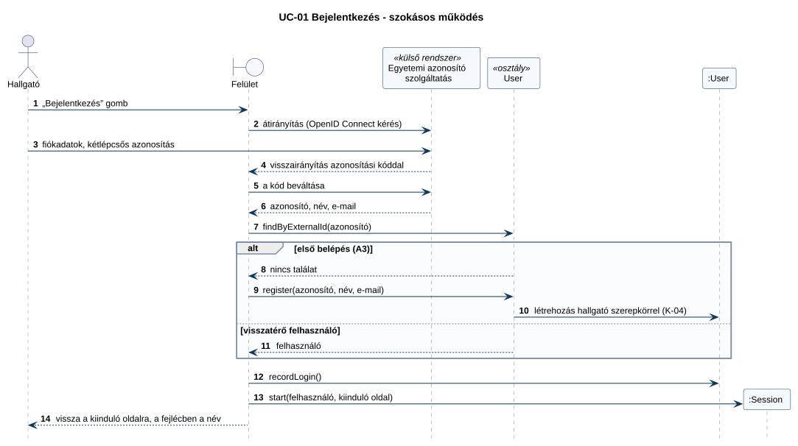
3. ábra. UC-01 Bejelentkezés – szekvenciadiagram. Megnyitás teljes méretben
3.2.2 UC-02 Kijelentkezés
A kijelentkezés egyetlen üzenetből áll: a felület meghívja a munkamenet end() műveletét, majd a kezdőlapra irányít. Az automatikus kijelentkezésnél (A1) a felület minden kérés előtt az isExpired() művelettel ellenőrzi a munkamenetet, és lejárt munkamenetnél bejelentkezést kínál. Külön ábrát ezért nem készítettünk.
3.2.3 UC-18 Szerepkörök kezelése
Az adminisztrátor kikeresi a felhasználót, a felület megjeleníti a jelenlegi szerepköreit, majd hozzáadáskor a User.grantRole(role, department, grantedBy), visszavonáskor a User.revokeRole(role, revokedBy) műveletet hívja. A hozzáadás új RoleAssignment objektumot hoz létre; a módosítást az AuditLogEntry.record() naplózza (K-46). A fiók letiltása (A2) a disable(reason, by) művelet. Az üzenetváltás egyszerű, a use case lényege az ellenőrzések sorrendje, ezért szekvenciadiagram helyett a funkcionális modell aktivitásdiagramja mutatja be (4. ábra).
3.2.4 UC-20 Értesítés küldése
Az értesítést mindig egy másik use case művelete váltja ki: a kiváltó művelet a Notification.create(recipient, type, data) hívással, a típusnak megfelelő sablonból előkészíti az üzenetet, a send() pedig átadja az e-mail-szolgáltatásnak (A-08), és siker esetén rögzíti a küldés idejét. Az emlékeztetőt (A1) a rendszer későbbre ütemezi; hogy esedékes-e, azt az isDue(now) mondja meg. Sikertelen küldésnél (E1) a send() a kísérletek számát növeli, és a rendszer később újrapróbálja; a kiváltó művelet ettől érvényes marad. Az értesítés létrehozása a kiváltó use case-ek szekvenciadiagramjain látható (UC-11: 18. ábra, UC-17: 25. ábra), ezért külön ábrát nem készítettünk.
3.2.5 Állapotdiagramok
Az alrendszer osztályainak állapotai triviálisak (a felhasználó aktív vagy letiltott; a munkamenet él vagy lejárt), ezért állapotdiagramot nem készítettünk.
3.3 Funkcionális modell
3.3.1 Szerepkör módosítása (UC-18)
Az alrendszer legösszetettebb feldolgozása a szerepkör módosítása, mert a K-45 két tiltó szabályát a mentés előtt ellenőrizni kell, és oktatói szerepkörnél a tanszék és az adatlap is érintett.
A szerepkör módosításának ellenőrzési lépései. A K-45 két szabálya (a saját adminisztrátori szerepkör és az utolsó adminisztrátor szerepköre nem vonható vissza) a mentés előtt fut le; oktatói szerepkörnél a tanszék megadása kötelező, és ilyenkor az oktatói adatlap is a fiókhoz rendelhető.

4. ábra. UC-18 Szerepkörök kezelése – aktivitásdiagram. Megnyitás teljes méretben
3.3.2 Naplózás és értesítés
A naplózás és az értesítés más alrendszerek műveleteinek mellékhatása. A naplóbejegyzést mindig a módosítást végző művelet hozza létre, ugyanabban a lépésben, mint magát a módosítást, így nem fordulhat elő, hogy a módosítás megtörtént, de nyoma nincs. Az értesítést a kiváltó művelet csak előkészíti (Notification.create); az elküldés ettől függetlenül, külön lépésben történik (send), így az e-mail-szolgáltatás kiesése nem akadályozza a foglalást vagy a bejelentést.
3.4 Operációk azonosítása
Az operációkat a szekvenciadiagramok üzeneteiből és az aktivitásdiagram lépéseiből gyűjtöttük ki. A findByExternalId, a register, a recordLogin és a Session.start a bejelentkezés üzenetei; a grantRole, a revokeRole és a disable az UC-18 lépései. A hasRole műveletet minden védett funkció használja, ezért a User felelőssége lett, és nem a felületé.
Döntés: a K-45 szabályainak ellenőrzése a revokeRole művelet része, nem a felületé, így bármelyik felületről vagy későbbi programból érkező kérésnél is érvényesül. Az „utolsó adminisztrátor” ellenőrzéséhez az összes adminisztrátort ismerni kell, ezt a tervezés során egy osztályszintű lekérdezés valósítja meg.
3.5 Az analízis modell osztálydiagramja
Az alrendszer osztályai attribútumokkal és operációkkal. A szürke osztályok más alrendszerhez tartoznak; leírásuk ott szerepel.

5. ábra. A Felhasználókezelés alrendszer osztálydiagramja. Megnyitás teljes méretben
3.6 Az analízis modell osztályainak listája
A típusoknál az analízis szintjén általános típusokat adunk meg (szöveg, egész szám, dátum és idő stb.); osztálynév típus esetén az attribútum egy másik objektumra hivatkozik. A pontos adatbázistípusokat a rendszerterv tartalmazza.
3.6.1 User (Felhasználó)
- felelőssége, feladata: Olyan személy, aki az egyetemi Microsoft-fiókjával legalább egyszer bejelentkezett a rendszerbe. Nyilvántartja a felhasználó azonosítását szolgáló adatokat (K-05), és megmondja, milyen szerepkörei vannak (K-03). Rajta keresztül érhetők el a felhasználó foglalásai, bejelentései és oktatói adatlapja.
- együttműködők: RoleAssignment, Session, StaffProfile, Booking, FaultReport, AuditLogEntry, Notification
- attribútumok
Név Típus Leírás idegész szám Belső azonosító. externalIdszöveg A felhasználó azonosítója az egyetemi azonosító szolgáltatásban (Microsoft Entra ID). Ez alapján ismeri fel a rendszer a visszatérő felhasználót. nameszöveg Teljes név, ahogy az azonosító szolgáltatás visszaadja. emailszöveg Egyetemi e-mail-cím; az értesítések ide mennek. disabledlogikai Igaz, ha az adminisztrátor letiltotta a fiókot (UC-18, A2). firstLoginAtdátum és idő Az első bejelentkezés időpontja. lastLoginAtdátum és idő Az utolsó bejelentkezés időpontja. - operációk
Név Argumentumok Működése, feladata findByExternalId: UserexternalId Osztályszintű művelet: megkeresi a felhasználót az azonosító szolgáltatástól kapott azonosító alapján; ha nincs ilyen, üres eredményt ad. register: UserexternalId, name, email Osztályszintű művelet: első belépéskor létrehozza a felhasználót, és hallgató szerepkört rendel hozzá (K-04, UC-01 A3). recordLogin– Frissíti az utolsó belépés idejét, és a fiókból kapott nevet és e-mail-címet, ha azok változtak. hasRole: logikairole Megmondja, hogy a felhasználónak van-e a megadott szerepköre (K-03). grantRole: RoleAssignmentrole, department, grantedBy Új szerepkört rendel a felhasználóhoz. Oktatói szerepkörnél a tanszék kötelező (UC-18). revokeRolerole, revokedBy Visszavon egy szerepkört a K-45 szabályainak ellenőrzése után. disablereason, by Letiltja a fiókot; a felhasználó ezután nem tud bejelentkezni (UC-18 A2, UC-01 E3). getStaffProfile: StaffProfile– Visszaadja a fiókhoz rendelt oktatói adatlapot, ha van.
3.6.2 Role (Szerepkör)
- felelőssége, feladata: A felhasználó jogosultsági köre. Felsorolás típus. Meghatározza, hogy a felhasználó mely funkciókat érheti el (K-03).
- együttműködők: RoleAssignment
- értékek (felsorolás típus)
Érték Jelentés STUDENThallgató LECTURERoktató ADMINadminisztrátor - operációk: nincsenek.
3.6.3 RoleAssignment (Szerepkör-hozzárendelés)
- felelőssége, feladata: Egy felhasználó egy szerepköre, a hozzárendelés körülményeivel együtt. Rögzíti, hogy a felhasználó milyen szerepkört kapott, ki és mikor adta, és oktatói szerepkörnél melyik tanszékhez tartozik.
- együttműködők: User, Role, Department
- attribútumok
Név Típus Leírás roleRole A hozzárendelt szerepkör. departmentDepartment Oktatói szerepkörnél a tanszék (kötelező); más szerepkörnél üres. grantedByUser Az adminisztrátor, aki a szerepkört adta; az első belépéskor kapott hallgatói szerepkörnél üres. grantedAtdátum és idő A hozzárendelés időpontja. - operációk
Név Argumentumok Működése, feladata isValid: logikai– Ellenőrzi, hogy oktatói szerepkörnél meg van-e adva a tanszék.
3.6.4 Session (Munkamenet)
- felelőssége, feladata: Egy bejelentkezett felhasználó aktív használati időszaka a bejelentkezéstől a kijelentkezésig vagy a lejáratig. Azonosítja a bejelentkezett felhasználót a kérések között, és a 30 perces tétlenségi időkorlát után lejár (K-06).
- együttműködők: User
- attribútumok
Név Típus Leírás idszöveg Véletlenszerű, kitalálhatatlan azonosító. userUser A munkamenethez tartozó felhasználó. createdAtdátum és idő A bejelentkezés időpontja. lastActivityAtdátum és idő Az utolsó művelet időpontja. returnUrlszöveg Az az oldal, ahonnan a bejelentkezés indult; ide tér vissza a rendszer (UC-01, 6. lépés). - operációk
Név Argumentumok Működése, feladata start: Sessionuser, returnUrl Osztályszintű művelet: új munkamenetet indít a felhasználónak. touchnow Frissíti az utolsó művelet időpontját. isExpired: logikainow Igaz, ha az utolsó művelet óta több mint 30 perc telt el (K-06). end– Megszünteti a munkamenetet (UC-02).
3.6.5 AuditLogEntry (Naplóbejegyzés)
- felelőssége, feladata: Egy adminisztrátori vagy oktatói módosítás nyoma: ki, mit, mikor változtatott (K-46). Visszakereshetővé teszi a módosításokat. Létrehozás után nem módosítható és nem törölhető.
- együttműködők: User
- attribútumok
Név Típus Leírás idegész szám Belső azonosító. actorUser A módosítást végző felhasználó. actionszöveg A művelet kódja, például CONTENT_PUBLISH vagy ROLE_GRANT. entityTypeszöveg A módosított objektum fajtája, például Event. entityIdegész szám A módosított objektum azonosítója. detailsszöveg A változás rövid leírása (régi és új érték). createdAtdátum és idő A módosítás időpontja. - operációk
Név Argumentumok Működése, feladata record: AuditLogEntryactor, action, entity, details Osztályszintű művelet: új bejegyzést rögzít. search: AuditLogEntry[]actor, entityType, from, to Osztályszintű művelet: a napló szűrése az adminisztrációs felülethez (SRS 7.3).
3.6.6 Notification (Értesítés)
- felelőssége, feladata: A rendszer által a felhasználónak küldött e-mail-üzenet (visszaigazolás, emlékeztető, állapotváltozás). Összeállítja és elküldi az e-mailt az e-mail-szolgáltatáson keresztül, és megjegyzi, sikerült-e. Sikertelen küldésnél később újrapróbálható, a kiváltó művelet pedig ettől függetlenül érvényes marad (UC-11 E3).
- együttműködők: User, NotificationType, Booking, FaultReport
- attribútumok
Név Típus Leírás idegész szám Belső azonosító. recipientUser A címzett. typeNotificationType Az értesítés fajtája. subjectszöveg Az e-mail tárgya. bodyszöveg Az e-mail szövege. scheduledAtdátum és idő A küldés tervezett ideje (emlékeztetőnél az időpont előtti nap). sentAtdátum és idő A sikeres küldés ideje; üres, ha még nem ment el. attemptsegész szám Az eddigi küldési kísérletek száma. - operációk
Név Argumentumok Működése, feladata create: Notificationrecipient, type, data Osztályszintű művelet: a típusnak megfelelő sablonból összeállítja az üzenetet. send: logikai– Elküldi az e-mailt; siker esetén kitölti a küldés idejét, hiba esetén növeli a kísérletek számát. isDue: logikainow Igaz, ha a küldés esedékes, és még nem ment el.
3.6.7 NotificationType (Értesítéstípus)
- felelőssége, feladata: Az értesítések fajtái. Felsorolás típus. Meghatározza az e-mail sablonját és a küldés idejét.
- együttműködők: Notification
- értékek (felsorolás típus)
Érték Jelentés BOOKING_CONFIRMEDfoglalás visszaigazolása (K-31) BOOKING_REMINDERemlékeztető az időpont előtti napon (K-31) BOOKING_DELETEDaz adminisztrátor törölte az időpontot (K-42) REPORT_STATUS_CHANGEDa bejelentés állapota megváltozott (K-37) - operációk: nincsenek.
4. A Szervezet és oktatók alrendszer modellje
A Szervezet és oktatók alrendszer az egyetem szervezeti egységeit (kar, tanszék) és az oktatói adatlapokat kezeli. Use case-ei: UC-09 Oktató keresése, UC-10 Saját oktatói adatok szerkesztése és UC-24 Oktatói adatlap hozzárendelése (az UC-18 bővítése). A tanszékre más alrendszerek is hivatkoznak: a szerepkör-hozzárendelés (oktatói szerepkör) és a hibabejelentések felelős egysége.
4.1 Statikus modell
4.1.1 Kapcsolatok pontosítása
- Faculty – Department („része”): kompozíció, 1 – 1..*. Tanszék kar nélkül nem létezik, és minden karnak van legalább egy tanszéke.
- StaffProfile – Department („dolgozik”): 0..* – 1, az adatlap felől navigálható. Az SRS szerint az oktató egy tanszékhez tartozik (A-03).
- StaffProfile – OfficeHour („meghirdet”): kompozíció, 1 – 0..*. A kezdeti diagramon egyszerű asszociáció volt; a pontosításkor kiderült, hogy a fogadóóra az adatlap része, azzal együtt jön létre és szűnik meg, és a szerkesztés (UC-10) mindig a teljes listát cseréli.
- StaffProfile – Place („iroda”): 0..* – 0..1. Az iroda a térkép egy helye, mert az irodára kattintva a térkép is megnyitható (UC-19 «extend» UC-09). Mivel nem minden iroda szerepel a térképen teremként, az adatlap szöveges irodamegnevezést (
officeText) is tárol.
4.1.2 Attribútumok azonosítása
- A StaffProfile
nameésemailattribútumát az oktató nem módosíthatja (K-27). Ezeket az adminisztrátor tölti fel, fiókhoz rendeléskor pedig a fiók adataival egyeztethetők. - A
noteattribútum az UC-10 A2 (ideiglenes megjegyzés) miatt került be. - Az OfficeHour
noteattribútuma olyan eseteket ír le, mint „páratlan heteken”; a minta szerint ez egyszerű szöveg, nem külön ismétlődési szabály. - A Faculty
shortNameattribútuma a szűrők és a listák helytakarékos megjelenítéséhez kell (például GÉIK).
4.1.3 Bázisosztályok keresése
Az alrendszerben nem találtunk olyan ismétlődő attribútumokat, amelyek közös bázisosztályba lennének emelhetők. A Faculty és a Department hasonló (azonosító, név), de eltérő szerepű fogalmak, és a kompozíció jobban kifejezi a kapcsolatukat, mint egy közös „Szervezeti egység” ős.
4.2 Dinamikus modell
4.2.1 UC-10 Saját oktatói adatok szerkesztése
Az oktató az adatlapján csak az irodát, a fogadóórákat és a megjegyzést módosíthatja (K-27). Mentés előtt a StaffProfile ellenőrzi a fogadóórákat; hibás adatnál nem ment (E1). A módosítás naplózásra kerül (K-46), és azonnal látható (K-28).

6. ábra. UC-10 Saját oktatói adatok szerkesztése – szekvenciadiagram. Megnyitás teljes méretben
4.2.2 UC-09 Oktató keresése
A keresés egyetlen osztályszintű művelet hívása: a felület a beírt névrészlettel és a kiválasztott karral vagy tanszékkel meghívja a StaffProfile.search() műveletet, majd a kiválasztott oktató adatlapját jeleníti meg. A tanszék szerinti böngészés (A1) a Department.getStaff() művelettel történik. Az ábra szerkezete a Tartalomkezelés alrendszer UC-05 ábrájával azonos, ezért külön nem rajzoltuk meg.
4.2.3 UC-24 Oktatói adatlap hozzárendelése
Az UC-18 bővítése: akkor fut le, amikor az adminisztrátor oktatói szerepkört ad, és kiválasztotta a tanszéket. A felület a tanszék adatlapjai közül (Department.getStaff()) a fiókhoz még nem rendelteket ajánlja fel, a felhasználó nevével egyezőt előre kiválasztva. Jóváhagyás után a kiválasztott adatlap assignTo(user) művelete a fiókhoz rendeli az adatlapot, a műveletet az AuditLogEntry.record() naplózza (K-46). Ha nincs megfelelő adatlap (A1), a felület új StaffProfile objektumot hoz létre a fiók nevével, e-mail-címével és a tanszékkel, majd azt rendeli hozzá. Másik fiókhoz tartozó adatlap nem rendelhető hozzá (E1). Az üzenetváltás két hívásból áll, ezért külön ábrát nem készítettünk.
4.2.4 Állapotdiagramok
Az alrendszer osztályainak nincs nem triviális állapota.
4.3 Funkcionális modell
4.3.1 Az adatlap mentésének ellenőrzése
A StaffProfile.validate() a következő lépésekben ellenőrzi a fogadóórákat: (1) minden idősávnál a kezdés korábbi a befejezésnél; (2) a napok 1 és 7 közé esnek; (3) ugyanazon a napon két idősáv nem fedi át egymást (OfficeHour.overlaps). Ha bármelyik feltétel nem teljesül, a művelet a hibás idősávok listáját adja vissza, és a mentés nem történik meg. A sikeres mentés után a módosítás azonnal látható, mert a nyilvános adatlap mindig a tárolt adatokból készül (K-28).
4.3.2 Oktatókeresés
A keresés ugyanazt a normalizálást használja, mint a helykeresés (kisbetű, ékezet nélkül; lásd a Tartalomkezelés alrendszer funkcionális modelljét), így a „kovacs” keresés a „Kovács” nevű oktatót is megtalálja.
4.4 Operációk azonosítása
Az UC-10 szekvenciadiagramjából az updateOffice, a setOfficeHours, a setNote és a validate művelet, az UC-09 leírásából a search és a getStaff művelet adódott. Az assignTo művelet az UC-24 Oktatói adatlap hozzárendelése use case-ből származik, amelyet a Felhasználókezelés alrendszer hív.
4.5 Az analízis modell osztálydiagramja
Az alrendszer osztályai attribútumokkal és operációkkal. Az oktatói adatlap fiók nélkül is létezhet (az oktató még nem lépett be), ezért a User-hez fűződő kapcsolata mindkét irányban 0..1 számosságú.
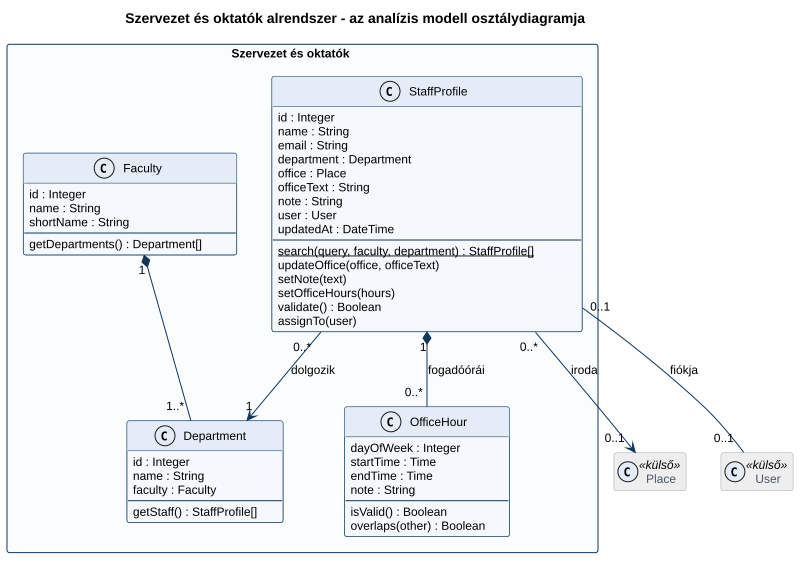
7. ábra. A Szervezet és oktatók alrendszer osztálydiagramja. Megnyitás teljes méretben
4.6 Az analízis modell osztályainak listája
A típusoknál az analízis szintjén általános típusokat adunk meg (szöveg, egész szám, dátum és idő stb.); osztálynév típus esetén az attribútum egy másik objektumra hivatkozik. A pontos adatbázistípusokat a rendszerterv tartalmazza.
4.6.1 Faculty (Kar)
- felelőssége, feladata: Az egyetem nagyobb szervezeti egysége, amely tanszékekből áll. Csoportosítja a tanszékeket; az oktatók és az események kar szerint szűrhetők (K-15, K-25).
- együttműködők: Department, Event
- attribútumok
Név Típus Leírás idegész szám Belső azonosító. nameszöveg A kar neve, például Gépészmérnöki és Informatikai Kar. shortNameszöveg Rövid név, például GÉIK. - operációk
Név Argumentumok Működése, feladata getDepartments: Department[]– A kar tanszékei név szerinti sorrendben.
4.6.2 Department (Tanszék)
- felelőssége, feladata: A kar oktatási és kutatási egysége, amelyhez az oktatók tartoznak. Összeköti az oktatókat a karral. A hibabejelentések felelős egysége is lehet egy tanszék (K-43).
- együttműködők: Faculty, StaffProfile, RoleAssignment, ResponsibleUnit
- attribútumok
Név Típus Leírás idegész szám Belső azonosító. nameszöveg A tanszék neve. facultyFaculty A kar, amelyhez a tanszék tartozik. - operációk
Név Argumentumok Működése, feladata getStaff: StaffProfile[]– A tanszék oktatóinak adatlapjai név szerinti sorrendben (UC-09 A1).
4.6.3 StaffProfile (Oktatói adatlap)
- felelőssége, feladata: Egy oktató nyilvános adatlapja a nevével, tanszékével, irodájával, e-mail-címével és fogadóóráival (K-26). Tárolja és megjeleníthetővé teszi az oktató elérhetőségét. Az oktató csak az irodát, a fogadóórákat és a megjegyzést módosíthatja (K-27); a változás mentés után azonnal látható (K-28).
- együttműködők: Department, OfficeHour, Place, User, AuditLogEntry
- attribútumok
Név Típus Leírás idegész szám Belső azonosító. nameszöveg Az oktató neve; az oktató nem módosíthatja. emailszöveg Egyetemi e-mail-cím; az oktató nem módosíthatja. departmentDepartment A tanszék, ahol az oktató dolgozik. officePlace Az iroda helye a térképen (ha meg van adva). officeTextszöveg Az iroda szöveges megnevezése, például „A/1 épület, 312.”. noteszöveg Ideiglenes megjegyzés, például „ezen a héten elmarad” (UC-10 A2). userUser A fiók, amelyhez az adatlap tartozik; üres, ha az oktató még nem lépett be. updatedAtdátum és idő Az utolsó módosítás ideje. - operációk
Név Argumentumok Működése, feladata search: StaffProfile[]query, faculty, department Osztályszintű művelet: oktatók keresése névrészlet, kar és tanszék szerint (K-25). updateOfficeoffice, officeText Módosítja az irodát. setNotetext Beállítja vagy törli az ideiglenes megjegyzést. setOfficeHourshours Lecseréli a fogadóórák listáját (UC-10 A1: több idősáv is lehet). validate: logikai– Ellenőrzi a fogadóórákat: kezdés a befejezés előtt, és ugyanazon a napon ne legyen átfedés (UC-10 E1). assignTouser Az adatlapot egy fiókhoz rendeli (UC-24).
4.6.4 OfficeHour (Fogadóóra)
- felelőssége, feladata: Egy oktató egy meghirdetett idősávja, amikor a hallgatók személyesen felkereshetik. Leírja, melyik napon, mikortól meddig tart a fogadóóra.
- együttműködők: StaffProfile
- attribútumok
Név Típus Leírás dayOfWeekegész szám (1–7) A hét napja, 1 = hétfő. startTimeidőpont Kezdés. endTimeidőpont Befejezés. noteszöveg Megjegyzés, például „páratlan heteken”. - operációk
Név Argumentumok Működése, feladata isValid: logikai– Igaz, ha a kezdés korábbi a befejezésnél. overlaps: logikaiother Igaz, ha az idősáv ugyanazon a napon átfed egy másikkal.
5. A Tartalomkezelés alrendszer modellje
A Tartalomkezelés alrendszer az adminisztrátorok által feltöltött, közzétehető tartalmakat kezeli: a híreket, az eseményeket, a térképi helyeket és a menza napi étlapjait, valamint a menza nyitvatartását. Use case-ei: UC-03 Hely keresése, UC-19 Hely megjelenítése a térképen, UC-05 Események böngészése, UC-06 Hírek olvasása, UC-07 Menza-információk és UC-15 Tartalom kezelése. A Place osztály a teljes rendszer közös helyhivatkozása.
5.1 Statikus modell
5.1.1 Kapcsolatok pontosítása
- User – NewsItem, Event, Menu, Place („kezeli”): a kezdeti diagramon négy azonos asszociáció volt. Ez az ismétlődés vezetett a Content bázisosztályhoz (lásd 3.1.3); a pontosított modellben egyetlen kapcsolat maradt: Content – User („létrehozó”, 0..* – 1).
- Event – Place („helyszín”): 0..* – 1. Minden eseménynek van helyszíne a térképen (K-16).
- Event – Faculty („szervezi”): 0..* – 0..1, mert az egyetemi szintű eseményeknek nincs kara. A kar szerinti szűréshez (K-15) erre a kapcsolatra van szükség.
- Place – Place („termei”): új, önmagára mutató aggregáció (0..1 – 0..*). A „terem” és az „épület” elemzésekor kiderült, hogy a terem egy épületben van; így a keresési találatnál az épület is megjeleníthető, a hibabejelentésnél pedig az épületből a termek választhatók.
- Canteen – Menu („kínál”): a kezdeti diagramon a Menu heti étlapként szerepelt. Az UC-07 (mai és heti nézet) és az UC-15 A3 (a hét napjai egy űrlapon) alapján a tárolás egysége a nap, ezért az osztályt DailyMenu-ra neveztük át; a heti nézet a hét napi étlapjaiból áll.
- Menu – Dish („tartalmaz”): kompozíció, 1 – 1..*: az étel csak egy étlap részeként létezik.
- Canteen – OpeningHours: új osztály. A K-21 („zárva tartáskor megmutatja a következő nyitás időpontját”) miatt a nyitvatartást nem lehet szövegként tárolni, számolni kell vele; ezért napi idősávokra bontottuk.
5.1.2 Attribútumok azonosítása
- A Place
searchKeyattribútuma a K-10 miatt kellett: a keresés kis- és nagybetűtől, illetve ékezettől független. A normalizált nevet mentéskor egyszer állítjuk elő, nem minden kereséskor. - A Place
latitude,longitudeattribútuma a térképi megjelenítéshez (K-08) és a kiemeléshez kell. - A Content
versionattribútumát az UC-15 E2 (egyidejű szerkesztés) tette szükségessé: e nélkül a rendszer nem tudná felismerni, ha közben más is mentette az elemet. - A NewsItem
sourceUrla K-19 hivatkozása; a hír teljes szövegét nem tároljuk. - A Dish
allergensésvegetarianattribútuma a K-22 ajánlott követelményből adódik; mindkettő üres lehet. - A Canteen
closedDatesattribútuma a szünetek és ünnepnapok miatt kell, mert ezeken a napokon a heti nyitvatartás nem érvényes (UC-07 A1).
5.1.3 Bázisosztályok keresése
A hír, az esemény, a térképi hely és a napi étlap azonos attribútumokat (állapot, létrehozó, létrehozás és módosítás ideje, közzététel ideje) és azonos műveleteket (piszkozat, közzététel, archiválás, előnézet) igényel, mert a K-39 és a K-40 mind a négyre egyformán vonatkozik. Ezért bevezettük a Content absztrakt bázisosztályt, amelyből a négy osztály általánosítással származik. A kötelező mezők ellenőrzése (validate) típusonként eltér, ezért ez absztrakt művelet, amelyet minden leszármazott maga valósít meg.
A Canteen nem leszármazottja a Content osztálynak: a menzát nem teszik közzé és nem archiválják, csak a nyitvatartása változik.
5.2 Dinamikus modell
5.2.1 UC-15 Tartalom kezelése
A diagram egy esemény szerkesztését mutatja; a hír, a hely és a napi étlap kezelése ugyanígy zajlik, mert a műveletek a Content bázisosztályban vannak.
Az adminisztrátor egy esemény szerkesztését mutatja be előnézettel és közzététellel. Az űrlap betöltésekor a felület megjegyzi a változatszámot; ha mentéskor a tárolt változatszám már nagyobb, akkor közben más is mentette az elemet, és a rendszer nem írja felül (E2).
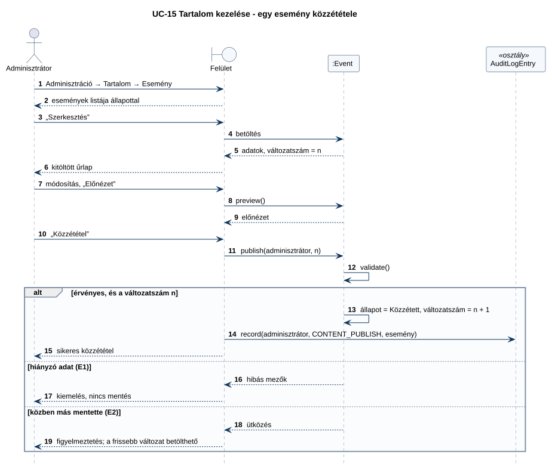
8. ábra. UC-15 Tartalom kezelése – szekvenciadiagram (esemény közzététele). Megnyitás teljes méretben
5.2.2 UC-05 Események böngészése és szűrése
A nyilvános eseménylista betöltése és szűrése. A szűrés az Event osztályszintű search() műveletével történik; a rendszer adatai nem változnak.
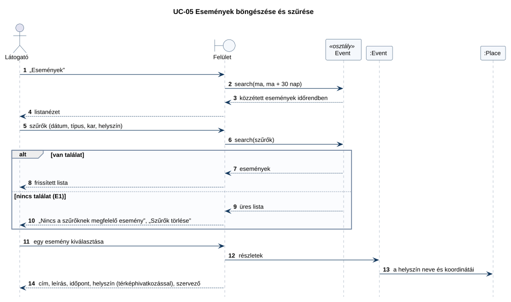
9. ábra. UC-05 Események böngészése és szűrése – szekvenciadiagram. Megnyitás teljes méretben
5.2.3 UC-06 Hírek olvasása és UC-07 Menza-információk megtekintése
Mindkettő egyetlen lekérdezésből áll: a felület a NewsItem.latest(), illetve a Canteen.menuFor() / menusForWeek() és az isOpen() / nextOpening() műveleteket hívja, és az eredményt megjeleníti. Szerkezetük az UC-05 ábrájával egyezik, ezért külön nem rajzoltuk meg őket.
5.2.4 UC-03 Hely keresése a campustérképen
A felület a beírt kifejezéssel és a kiválasztott kategóriával a Place.search(query, category, limit) osztályszintű műveletet hívja, a találatokat javaslatként listázza, a kiválasztott helyet pedig az UC-19 szerint jeleníti meg («include»). A use case lényege a keresés feldolgozása (normalizálás, rangsorolás), ezt a funkcionális modell aktivitásdiagramja mutatja be (11. ábra); külön szekvenciadiagramot nem készítettünk.
5.2.5 UC-19 Hely megjelenítése a térképen
Önállóan nem indítható: az UC-03 része, és az UC-04, UC-05, UC-08 és UC-09 bővítése. A kiinduló objektum (ParkingZone, Event, Stop, illetve az oktatói adatlap irodája) a place hivatkozásán keresztül adja át a megjelenítendő Place objektumot. A felület megnyitja a térképet, kiemeli a helyet, és megjeleníti az adatlapját; épületnél a getChildren() művelettel a termeket is felsorolja. Ha a helynek nincs térképi pontja (A1), csak az adatlap jelenik meg. A rendszer adatai nem változnak, a use case egyetlen lekérdezés, ezért külön ábrát nem készítettünk.
5.2.6 A Content állapotdiagramja
A hírek, események, térképi helyek és napi étlapok közös életciklusa. Csak a Közzétett állapotú tartalom látszik a nyilvános felületen; az archivált elem az adminisztrációs listában megmarad (K-39, K-40).

10. ábra. A Content (Tartalom) osztály állapotdiagramja. Megnyitás teljes méretben
5.3 Funkcionális modell
5.3.1 Hely keresése (UC-03)
A keresés feldolgozási lépései. A keresőkifejezést és a helyek nevét ugyanaz a normalize() művelet alakítja kisbetűs, ékezet nélküli formára, ezért a keresés nem érzékeny a kis- és nagybetűre és az ékezetekre (K-10). A javaslatok rangsorolása: pontos egyezés, szókezdő egyezés, részleges egyezés; azon belül az épületek előbb.

11. ábra. UC-03 Hely keresése – aktivitásdiagram. Megnyitás teljes méretben
5.3.2 A menza nyitvatartásának számítása
A Canteen.isOpen(at) először a zárva tartási napokat nézi meg: ha a dátum köztük van, a menza zárva. Ezután megkeresi a hét napjának megfelelő nyitvatartási idősávokat, és megvizsgálja, hogy az időpont beléjük esik-e. A nextOpening(at) ugyanezt a vizsgálatot napról napra előre lépve végzi, legfeljebb 30 napig, és az első nyitási időpontot adja vissza (UC-07 A1).
5.3.3 Heti étlap mentése
A DailyMenu.saveWeek() a táblázatos űrlap minden napjára külön napi étlapot hoz létre vagy frissít. Ha egy napra már van étlap, azt felülírja; ha egy nap üresen marad, arra a napra nem készül étlap, és a felület „Az étlap még nem érhető el” üzenetet mutat (UC-07 E1).
5.4 Operációk azonosítása
Az UC-15 szekvenciadiagramja a Content életciklus-műveleteit (saveDraft, publish, archive, preview) adta. Döntés: ezek a bázisosztályba kerültek, a típusfüggő ellenőrzés (validate) a leszármazottakba. A lekérdező műveletek (Event.search, NewsItem.latest, Place.search) osztályszintűek, mert nem egy objektumon, hanem az összes közzétett elemen dolgoznak. A Place.normalize műveletet a Szervezet és oktatók alrendszer keresése is használja.
5.5 Az analízis modell osztálydiagramja
Az alrendszer osztályai attribútumokkal és operációkkal. A Content absztrakt bázisosztály a négy közzétehető tartalomfajta közös attribútumait és életciklus-műveleteit tartalmazza.
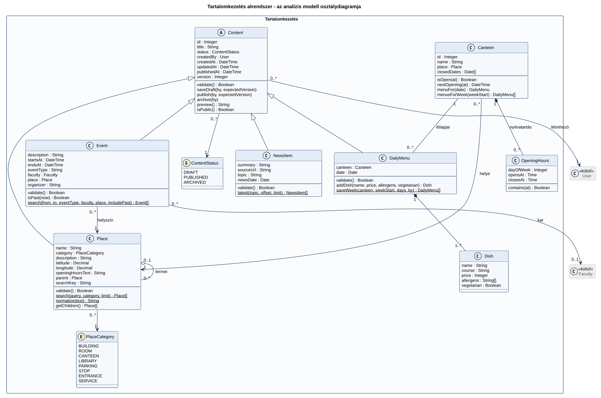
12. ábra. A Tartalomkezelés alrendszer osztálydiagramja. Megnyitás teljes méretben
5.6 Az analízis modell osztályainak listája
A típusoknál az analízis szintjén általános típusokat adunk meg (szöveg, egész szám, dátum és idő stb.); osztálynév típus esetén az attribútum egy másik objektumra hivatkozik. A pontos adatbázistípusokat a rendszerterv tartalmazza.
5.6.1 Content (Tartalom)
- felelőssége, feladata: Absztrakt bázisosztály: az adminisztrátor által kezelt, közzétehető tartalmak (hír, esemény, térképi hely, napi étlap) közös része. Kezeli a tartalmak közös életciklusát: piszkozat, közzététel, archiválás (K-39, K-40), és az egyidejű szerkesztés felismerését (UC-15 E2). Absztrakt osztály: közvetlenül nem példányosítható.
- együttműködők: User, ContentStatus, AuditLogEntry
- attribútumok
Név Típus Leírás idegész szám Belső azonosító. titleszöveg Cím vagy név. statusContentStatus Piszkozat, közzétett vagy archivált. createdByUser A tartalmat létrehozó adminisztrátor. createdAtdátum és idő Létrehozás ideje. updatedAtdátum és idő Utolsó módosítás ideje. publishedAtdátum és idő Közzététel ideje; piszkozatnál üres. versionegész szám Változatszám; minden mentéskor eggyel nő. Ebből derül ki, ha közben más is mentette az elemet. - operációk
Név Argumentumok Működése, feladata validate: logikai– Absztrakt: a kötelező mezők ellenőrzése, típusonként eltérő (UC-15 E1). saveDraftby, expectedVersion Mentés piszkozatként; nyilvánosan nem jelenik meg (UC-15 A1). publishby, expectedVersion Ellenőrzés után közzéteszi a tartalmat. Ha a változatszám nem egyezik, a mentést elutasítja (UC-15 E2). archiveby Eltávolítja a tartalmat a nyilvános felületről, de az adminisztrációs listában megmarad (UC-15 A2). preview: szöveg– Előállítja a nyilvános megjelenés előnézetét (K-40). isPublic: logikai– Igaz, ha a tartalom közzétett állapotú.
5.6.2 ContentStatus (Tartalomállapot)
- felelőssége, feladata: A tartalom életciklusának állapotai. Felsorolás típus. Meghatározza, hogy a tartalom látható-e a nyilvános felületen.
- együttműködők: Content
- értékek (felsorolás típus)
Érték Jelentés DRAFTpiszkozat PUBLISHEDközzétett ARCHIVEDarchivált - operációk: nincsenek.
5.6.3 NewsItem (Hír)
- felelőssége, feladata: Egyetemi hír rövid összefoglalóval és a teljes cikkre mutató hivatkozással (K-19). A hírfolyam egy eleme; időrendben, témakör szerint szűrhetően jelenik meg (K-18).
- együttműködők: Content
- attribútumok
Az örökölt attribútumokat (id, title, status, createdBy, createdAt, updatedAt, publishedAt, version) a Content osztály írja le; itt csak a saját attribútumok szerepelnek.
Név Típus Leírás summaryszöveg Rövid összefoglaló. sourceUrlszöveg A teljes cikk címe az egyetem hivatalos honlapján. topicszöveg Témakör, például oktatás, kutatás, sport. newsDatedátum A hír dátuma; a sorrend ez alapján készül. - operációk
Név Argumentumok Működése, feladata validate: logikai– Ellenőrzi, hogy a cím, az összefoglaló és a hivatkozás meg van-e adva. latest: NewsItem[]topic, offset, limit Osztályszintű művelet: a közzétett hírek a legfrissebbel kezdve, oldalanként 10 (UC-06).
5.6.4 Event (Esemény)
- felelőssége, feladata: Egyetemi program időponttal, helyszínnel, leírással és szervezővel (K-16). A naptár egy eleme; dátum, típus, kar és helyszín szerint szűrhető (K-15).
- együttműködők: Content, Place, Faculty
- attribútumok
Az örökölt attribútumokat (id, title, status, createdBy, createdAt, updatedAt, publishedAt, version) a Content osztály írja le; itt csak a saját attribútumok szerepelnek.
Név Típus Leírás descriptionszöveg Részletes leírás. startsAtdátum és idő Kezdés. endsAtdátum és idő Befejezés. eventTypeszöveg Típus, például előadás, sport, kulturális, nyílt nap. facultyFaculty A szervező kar; üres, ha egyetemi szintű. placePlace A helyszín a térképen. organizerszöveg A szervező megnevezése. - operációk
Név Argumentumok Működése, feladata validate: logikai– Ellenőrzi a kötelező mezőket, és hogy a kezdés a befejezés előtt van. isPast: logikainow Igaz, ha az esemény már véget ért (K-17). search: Event[]from, to, eventType, faculty, place, includePast Osztályszintű művelet: a közzétett események szűrése; a szűrők kombinálhatók (K-15).
5.6.5 Place (Hely)
- felelőssége, feladata: A campustérkép egy pontja vagy területe: épület, terem vagy szolgáltatás (például menza, könyvtár, parkoló, megálló). Kereshetővé és a térképen megjeleníthetővé teszi a helyeket (K-08 – K-11). Más osztályok helyszínként hivatkoznak rá.
- együttműködők: Content, PlaceCategory, Event, StaffProfile, Canteen, ParkingZone, Stop, FaultReport
- attribútumok
Az örökölt attribútumokat (id, title, status, createdBy, createdAt, updatedAt, publishedAt, version) a Content osztály írja le; itt csak a saját attribútumok szerepelnek.
Név Típus Leírás nameszöveg A hely neve, például „A/1 épület”. categoryPlaceCategory A hely fajtája; a kategóriaszűrő ez alapján működik (UC-03 A2). descriptionszöveg Rövid leírás. latitudevalós szám Földrajzi szélesség. longitudevalós szám Földrajzi hosszúság. openingHoursTextszöveg Nyitvatartás szöveges formában, ha van (K-11). parentPlace Teremnél az épület, amelyben van; különben üres. searchKeyszöveg A név kisbetűs, ékezet nélküli alakja a kereséshez (K-10). - operációk
Név Argumentumok Működése, feladata validate: logikai– Ellenőrzi a nevet, a kategóriát és a koordinátákat. search: Place[]query, category, limit Osztályszintű művelet: keresés név szerint, kis- és nagybetűtől és ékezettől függetlenül, részleges egyezéssel; legfeljebb 8 javaslat (UC-03). normalize: szövegtext Osztályszintű művelet: kisbetűsít, eltávolítja az ékezeteket és a felesleges írásjeleket. getChildren: Place[]– Az épület termei.
5.6.6 PlaceCategory (Helykategória)
- felelőssége, feladata: A helyek fajtái. Felsorolás típus. A térkép kategóriaszűrője és jelölései ez alapján készülnek.
- együttműködők: Place
- értékek (felsorolás típus)
Érték Jelentés BUILDINGépület ROOMterem CANTEENmenza LIBRARYkönyvtár PARKINGparkoló STOPmegálló ENTRANCEbejárat SERVICEegyéb szolgáltatás - operációk: nincsenek.
5.6.7 Canteen (Menza)
- felelőssége, feladata: Az egyetemi étkezde a helyével és a nyitvatartásával. Megmondja, nyitva van-e a menza, és ha zárva, mikor nyit legközelebb (K-21). Hozzá tartoznak a napi étlapok.
- együttműködők: Place, OpeningHours, DailyMenu
- attribútumok
Név Típus Leírás idegész szám Belső azonosító. nameszöveg A menza neve. placePlace A menza helye a térképen. closedDatesdátum[] Zárva tartási napok (szünetek, ünnepnapok). - operációk
Név Argumentumok Működése, feladata isOpen: logikaiat Igaz, ha a menza a megadott időpontban nyitva van. nextOpening: dátum és időat A következő nyitás időpontja (UC-07 A1). menuFor: DailyMenudate Az adott nap közzétett étlapja, ha van. menusForWeek: DailyMenu[]weekStart A hét napjainak étlapjai (UC-07, heti nézet).
5.6.8 OpeningHours (Nyitvatartási idősáv)
- felelőssége, feladata: A menza egy napi nyitvatartási idősávja. A menza heti nyitvatartásának egy eleme.
- együttműködők: Canteen
- attribútumok
Név Típus Leírás dayOfWeekegész szám (1–7) A hét napja. opensAtidőpont Nyitás. closesAtidőpont Zárás. - operációk
Név Argumentumok Működése, feladata contains: logikaiat Igaz, ha az időpont az idősávba esik.
5.6.9 DailyMenu (Napi étlap)
- felelőssége, feladata: A menza egy napjának étlapja (az első változatban „Menu” néven, hetinek gondolva). Összefogja egy nap ételeit; a heti nézet a hét napi étlapjaiból áll (K-20).
- együttműködők: Content, Canteen, Dish
- attribútumok
Az örökölt attribútumokat (id, title, status, createdBy, createdAt, updatedAt, publishedAt, version) a Content osztály írja le; itt csak a saját attribútumok szerepelnek.
Név Típus Leírás canteenCanteen A menza, amelyhez az étlap tartozik. datedátum A nap, amelyre az étlap szól. - operációk
Név Argumentumok Működése, feladata validate: logikai– Ellenőrzi, hogy van-e legalább egy étel, és mindegyiknek van-e neve és ára. addDish: Dishname, price, allergens, vegetarian Ételt vesz fel az étlapra. saveWeek: DailyMenu[]canteen, weekStart, days, by Osztályszintű művelet: a heti táblázatos űrlapból egyszerre menti a hét napjait (UC-15 A3).
5.6.10 Dish (Étel)
- felelőssége, feladata: Az étlap egy tétele árral, allergénekkel és vegetáriánus jelöléssel. Leírja az ételt a felületen megjelenő adatokkal (K-20, K-22).
- együttműködők: DailyMenu
- attribútumok
Név Típus Leírás nameszöveg Az étel neve. courseszöveg Fogás: leves, főétel, köret, desszert. priceegész szám Ár forintban. allergensszöveg[] Az étel allergénjei (az uniós 14 allergén közül). vegetarianlogikai Vegetáriánus-e. - operációk: nincsenek; az osztály csak adatot tárol, a vele végzett műveleteket a tartalmazó osztály végzi.
6. A Külső adatok alrendszer modellje
A Külső adatok alrendszer a két külső adatforrás adatait fogadja és dolgozza fel: a parkolóérzékelő-rendszer (A-07) méréseit és az MVK menetrendjét (A-06). Use case-ei: UC-04 Szabad parkolóhelyek megtekintése és UC-08 MVK-menetrend megtekintése. Az alrendszer feladata, hogy a külső adatok hibája vagy hiánya ne akadályozza a többi funkciót (SRS 5.6).
6.1 Statikus modell
6.1.1 Kapcsolatok pontosítása
- ParkingZone – ParkingReading („mérése”): kompozíció, 1 – 0..*. A pontosításkor kiderült, hogy a felületnek csak a legutóbbi mérés kell, ezért a zóna közvetlenül hivatkozik a legfrissebbre (
latestReading); a korábbi mérések csak ellenőrzésre és statisztikára maradnak meg. - SensorDevice – ParkingZone („figyel”): 0..* – 1. Egy zónát több eszköz is figyelhet (például a be- és a kijáratnál).
- SensorDevice – ParkingReading („küld”): 1 – 0..*. Megtartottuk, mert hibás mérésnél tudni kell, melyik eszköz küldte.
- Stop – Place: új kapcsolat, 0..* – 0..1. A megálló nevére kattintva a térkép is megnyitható (UC-19 «extend» UC-08), ezért a térképre lehet lépni.
- Stop – Departure és Route – Departure: 1 – 0..*. Az indulás egy megálló és egy járat kapcsolatának időbeli példánya.
- TimetableImport – Departure: új osztály és kompozíció. Az UC-08 E1 („az utoljára betöltött menetrendet mutatja”) azt jelenti, hogy a menetrendet betöltésenként kell kezelni: egy betöltés indulásai együtt keletkeznek, és együtt cserélődnek le.
6.1.2 Attribútumok azonosítása
- A ParkingReading
measuredAtésreceivedAtattribútuma közül a frissességet (K-13) a mérés ideje határozza meg; a beérkezés ideje a hibakereséshez kell (például ha egy eszköz órája rosszul jár). - A SensorDevice
keyHashattribútuma az SRS 11.3 eszközönkénti titkos kulcsából adódik. A kulcsot magát nem tároljuk, csak a kivonatát, hogy egy esetleges adatszivárgásból ne lehessen eszközt hamisítani. - A Departure
serviceDaysattribútuma írja le, mely napokon közlekedik az indulás (munkanap, szabadnap, iskolai szünet). Ez a GTFS-adatforrás naptárszerkezetét követi; a pontos tárolását a rendszerterv adja meg. - A Stop
isDefaultattribútuma az UC-08 2. lépéséből (alapértelmezett megálló) következik. - A szabad helyek száma származtatott adat (kapacitás mínusz foglalt helyek), ezért nem attribútum, hanem művelet (
freeSpaces).
6.1.3 Bázisosztályok keresése
A parkolási és a menetrendi osztályok között nincs közös rész. Felmerült egy közös „Külső adat” bázisosztály a frissesség kezelésére, de a két adatforrás frissessége eltérően működik (percenkénti mérés, illetve napi betöltés), így a közös ős nem egyszerűsítené a modellt. Általánosítás ezért nincs az alrendszerben.
6.2 Dinamikus modell
6.2.1 Parkolóadat fogadása
A parkolóérzékelő-rendszer (A-07) adatküldése. Ez nem önálló use case, hanem az UC-04 adatforrása. Az eszközt a titkos kulcsa hitelesíti (SRS 11.3); a hibás vagy értelmetlen adat nem kerül be.
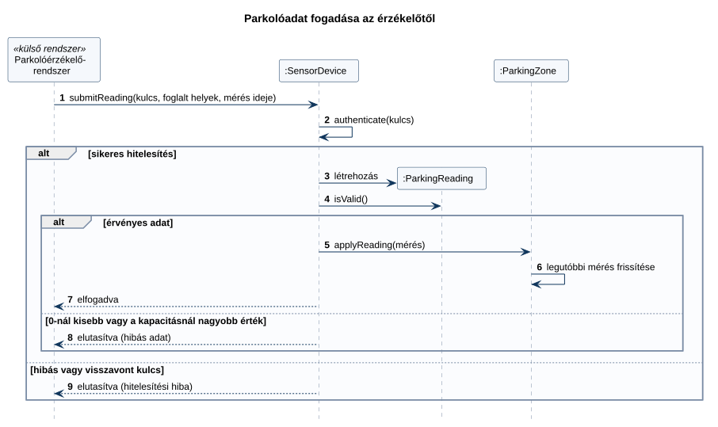
13. ábra. Parkolóadat fogadása – szekvenciadiagram. Megnyitás teljes méretben
6.2.2 UC-04 Szabad parkolóhelyek megtekintése
A felület zónánként lekéri a szabad helyek számát, a színjelölést és az adat frissességét, és amíg az oldal nyitva van, percenként frissít (A1).
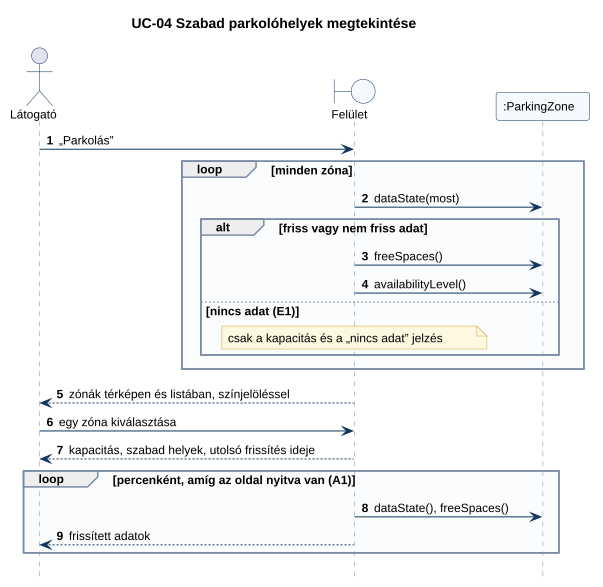
14. ábra. UC-04 Szabad parkolóhelyek megtekintése – szekvenciadiagram. Megnyitás teljes méretben
6.2.3 UC-08 MVK-menetrend megtekintése
A felület a kiválasztott megálló nextDepartures(most, irány, 3) műveletét hívja, és percenként csak a hátralévő perceket számolja újra (Departure.minutesUntil). Az ábra szerkezete az UC-04-ével egyezik, ezért külön nem rajzoltuk meg. Ha az utolsó sikeres betöltés egy napnál régebbi (TimetableImport.isStale), a felület jelzi, hogy az adat nem friss (E1).
6.2.4 A ParkingZone állapotdiagramja
A zóna adatának frissessége az időtől és a beérkező mérésektől függ. Ebből az állapotból adódik a felületen a „nem friss” és a „nincs adat” jelzés (K-13).
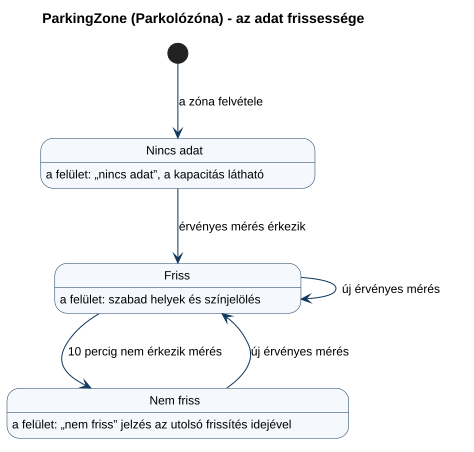
15. ábra. A ParkingZone (Parkolózóna) osztály állapotdiagramja (adatfrissesség). Megnyitás teljes méretben
6.3 Funkcionális modell
6.3.1 A menetrend napi betöltése
A TimetableImport.run() lépései. Az új menetrend csak akkor lép érvénybe, ha a letöltés és az ellenőrzés is sikeres; a csere egy lépésben történik, így a felhasználók sosem látnak félig betöltött menetrendet. Hiba esetén az előző menetrend marad érvényben (UC-08 E1).

16. ábra. A menetrend napi betöltése – aktivitásdiagram. Megnyitás teljes méretben
6.3.2 A következő indulások számítása
A Stop.nextDepartures(at, headsign, perRoute) feldolgozása: (1) az aktuális betöltés indulásai közül kiválasztja a megállóhoz tartozókat; (2) ha meg van adva irány, arra szűr; (3) megtartja azokat, amelyek az adott napon közlekednek (runsOn) és az indulási idejük nem korábbi a megadott időpontnál; (4) járatonként és irányonként időrendbe teszi őket, és az első hármat adja vissza. Ha egy járatnál aznap már nincs indulás, a következő nap első indulását adja vissza, megjelölve (UC-08 E2).
6.3.3 A parkolási színjelölés
Az availabilityLevel() a szabad helyek arányából számol: 20% felett zöld, 1 hely és 20% között sárga, 0 szabad helynél piros (UC-04, 3. lépés). A felület a szín mellett szöveges jelzést is mutat az akadálymentesség miatt (SRS 4.6).
6.4 Operációk azonosítása
A fogadás szekvenciadiagramjából az authenticate, a submitReading, az isValid és az applyReading, az UC-04 ábrájából a dataState, a freeSpaces és az availabilityLevel művelet adódott. A menetrend-betöltés aktivitásdiagramja a TimetableImport.run lépéseit írja le. Döntés: a frissesség számítása a zóna felelőssége, nem a felületé, így minden felület (és a későbbi mobilalkalmazás) ugyanazt az eredményt mutatja.
6.5 Az analízis modell osztálydiagramja
Az alrendszer osztályai attribútumokkal és operációkkal. A Departure a TimetableImport része: egy betöltés minden indulása együtt keletkezik és együtt cserélődik.

17. ábra. A Külső adatok alrendszer osztálydiagramja. Megnyitás teljes méretben
6.6 Az analízis modell osztályainak listája
A típusoknál az analízis szintjén általános típusokat adunk meg (szöveg, egész szám, dátum és idő stb.); osztálynév típus esetén az attribútum egy másik objektumra hivatkozik. A pontos adatbázistípusokat a rendszerterv tartalmazza.
6.6.1 ParkingZone (Parkolózóna)
- felelőssége, feladata: A parkoló egy elkülönített része, amelynek szabad helyeit a rendszer együtt jeleníti meg. A legfrissebb mérésből kiszámolja a szabad helyek számát, a színjelölést és az adat frissességét (K-12, K-13).
- együttműködők: Place, ParkingReading, SensorDevice, ParkingDataState
- attribútumok
Név Típus Leírás idegész szám Belső azonosító. nameszöveg A zóna neve, például „E/7 mögötti parkoló”. placePlace A zóna helye a térképen. capacityegész szám A zóna összes parkolóhelye. latestReadingParkingReading A legutóbbi érvényes mérés; üres, ha még nem érkezett. - operációk
Név Argumentumok Működése, feladata applyReadingreading Elfogad egy érvényes mérést legutóbbiként, ha az újabb a meglévőnél. freeSpaces: egész szám– A kapacitás és a foglalt helyek különbsége; üres, ha nincs adat. availabilityLevel: szöveg– Színjelölés: zöld, ha több mint 20% szabad; sárga, ha 1–20%; piros, ha tele van (UC-04). dataState: ParkingDataStatenow Friss, nem friss (10 percnél régebbi) vagy nincs adat (K-13).
6.6.2 ParkingReading (Parkolómérés)
- felelőssége, feladata: Egy érzékelőeszköz által küldött adat: egy zónában adott időpontban hány hely foglalt. Rögzíti a mérést, és ellenőrzi, hogy értelmes-e (nem negatív, nem több a kapacitásnál).
- együttműködők: ParkingZone, SensorDevice
- attribútumok
Név Típus Leírás zoneParkingZone A zóna, amelyre a mérés vonatkozik. deviceSensorDevice A küldő eszköz. occupiedegész szám A foglalt helyek száma. measuredAtdátum és idő A mérés ideje az eszköz szerint. receivedAtdátum és idő A beérkezés ideje a szerveren. - operációk
Név Argumentumok Működése, feladata isValid: logikai– Igaz, ha 0 ≤ foglalt ≤ kapacitás, és a mérés ideje nem a jövőbeli.
6.6.3 SensorDevice (Érzékelőeszköz)
- felelőssége, feladata: A parkolóérzékelő-rendszer (A-07) egy adattovábbító eszköze, amely egy zóna adatait küldi. Hitelesíti a beérkező adatot az eszköz titkos kulcsával (SRS 11.3), és mérést hoz létre belőle.
- együttműködők: ParkingZone, ParkingReading
- attribútumok
Név Típus Leírás idegész szám Belső azonosító. nameszöveg Az eszköz megnevezése. zoneParkingZone A figyelt zóna. keyHashszöveg Az eszköz titkos kulcsának kivonata; a kulcsot magát nem tároljuk. activelogikai Hamis, ha az eszköz ki van vonva a használatból. lastSeenAtdátum és idő Az utolsó adatküldés ideje. - operációk
Név Argumentumok Működése, feladata authenticate: logikaikey Ellenőrzi a kérésben küldött kulcsot. submitReading: ParkingReadingoccupied, measuredAt Mérést hoz létre, és átadja a zónának.
6.6.4 ParkingDataState (Parkolóadat-állapot)
- felelőssége, feladata: A zóna adatának frissessége. Felsorolás típus. A felület ez alapján mutat „nem friss” vagy „nincs adat” jelzést (K-13).
- együttműködők: ParkingZone
- értékek (felsorolás típus)
Érték Jelentés FRESHfriss (10 percnél újabb) STALEnem friss NO_DATAnincs adat - operációk: nincsenek.
6.6.5 Stop (Megálló)
- felelőssége, feladata: Az MVK egy megállója az egyetem közelében. Kiszámolja a megállóból induló járatok következő indulásait (K-23, K-24).
- együttműködők: Departure, Place
- attribútumok
Név Típus Leírás idegész szám Belső azonosító. sourceIdszöveg A megálló azonosítója a menetrendi adatforrásban. nameszöveg A megálló neve. placePlace A megálló a campustérképen (UC-19 «extend» UC-08); lehet üres. isDefaultlogikai Igaz az egyetemhez legközelebbi, alapértelmezett megállónál. - operációk
Név Argumentumok Működése, feladata nextDepartures: Departure[]at, headsign, perRoute Járatonként és irányonként a következő három indulás az adott időponttól (UC-08); ha aznap nincs több, a következő napi első (E2). headsigns: szöveg[]– A megállóból induló irányok a választáshoz (K-24).
6.6.6 Route (Járat)
- felelőssége, feladata: Az MVK egy autóbusz- vagy villamosvonala. Az indulásokat járatonként csoportosítja.
- együttműködők: Departure
- attribútumok
Név Típus Leírás idegész szám Belső azonosító. sourceIdszöveg A járat azonosítója az adatforrásban. shortNameszöveg A járat száma, például 1 vagy 22. vehicleTypeszöveg Autóbusz vagy villamos. - operációk: nincsenek; az osztály csak adatot tárol, a vele végzett műveleteket a tartalmazó osztály végzi.
6.6.7 Departure (Indulás)
- felelőssége, feladata: Egy járat menetrend szerinti indulása egy megállóból egy irányba. Megmondja, hogy az indulás egy adott napon közlekedik-e, és hány perc múlva indul.
- együttműködők: Stop, Route, TimetableImport
- attribútumok
Név Típus Leírás stopStop A megálló. routeRoute A járat. headsignszöveg Az irány (végállomás). departureTimeidőpont Menetrend szerinti indulási idő. serviceDaysszöveg A napok, amelyeken az indulás közlekedik (munkanap, szabadnap, iskolai szünet stb.). importTimetableImport A betöltés, amelyből az indulás származik. - operációk
Név Argumentumok Működése, feladata runsOn: logikaidate Igaz, ha az indulás a megadott napon közlekedik. minutesUntil: egész számnow Hány perc van hátra az indulásig (UC-08, 3. lépés).
6.6.8 TimetableImport (Menetrend-betöltés)
- felelőssége, feladata: A menetrend egy betöltése az adatforrásból (naponta) vagy az adminisztrátor feltöltéséből (F-02). Letölti, ellenőrzi és egyben lecseréli a menetrendet. Sikertelen betöltésnél az előző menetrend marad érvényben (UC-08 E1).
- együttműködők: Departure, Stop, Route
- attribútumok
Név Típus Leírás idegész szám Belső azonosító. sourceszöveg GTFS-letöltés vagy kézi feltöltés. startedAtdátum és idő A betöltés kezdete. finishedAtdátum és idő A betöltés vége. statusszöveg Fut, sikeres vagy sikertelen. validFromdátum A menetrend érvényességének kezdete. validTodátum A menetrend érvényességének vége. messageszöveg Hiba esetén az ok. - operációk
Név Argumentumok Működése, feladata run: logikai– Végrehajtja a betöltést (lásd a funkcionális modellt). current: TimetableImport– Osztályszintű művelet: az utolsó sikeres betöltés, amelyből az indulások jelenleg számolódnak. isStale: logikainow Igaz, ha az utolsó sikeres betöltés egy napnál régebbi; ilyenkor a felület jelzi, hogy az adat nem friss.
7. Az Ügyintézés alrendszer modellje
Az Ügyintézés alrendszer az ügyintézési időpontfoglalást valósítja meg. Use case-ei: UC-11 Ügyintézési időpont foglalása, UC-12 Saját foglalások kezelése és UC-16 Ügyintézési időpontok kezelése. Az alrendszer a Felhasználókezelés alrendszerre támaszkodik (a foglaló hallgató, az értesítések és a napló).
7.1 Statikus modell
7.1.1 Kapcsolatok pontosítása
- CaseType – SlotRange („sávjai”): kompozíció, 1 – 0..*. A sáv mindig egy ügytípushoz tartozik.
- SlotRange – Slot („előállít”): kompozíció, 1 – 0..*. Az időpontokat a sáv állítja elő; a sáv törlésekor az időpontjai is megszűnnek (a foglaltak az UC-16 E2 szerint indoklással).
- Booking – Slot („lefoglalja”): 0..* – 1. A kezdeti modellben 1 – 1 kapcsolatnak gondoltuk, de lemondás után az időpont újra foglalható (K-32), így egy időponthoz időben egymás után több foglalás is tartozhat. Az a szabály, hogy egyszerre legfeljebb egy aktív foglalás lehet, a Slot állapotából következik (csak Szabad időpont foglalható).
- User – Booking („foglal”): 0..* – 1, a foglalás felől navigálható; a hallgató foglalásait a
Booking.listForadja vissza. - A foglalás és az ügytípus között nincs közvetlen kapcsolat: az ügytípus az időponton és a sávon keresztül érhető el. A K-30 ellenőrzéséhez (egy ügytípusra egy aktív foglalás) ez elegendő.
7.1.2 Attribútumok azonosítása
- A CaseType
slotMinutesattribútuma az UC-16 2. lépéséből (egy időpont hossza) adódik; ebből bontja a sáv időpontokra magát. - A SlotRange
repeatUntilattribútuma az UC-16 A1 (heti ismétlődés) miatt kellett. - A Slot
statusattribútuma négy értékű (szabad, foglalt, zárolt, törölt). A zárolt állapot az UC-16 A2, a törölt az UC-16 E2 miatt került be. - A Booking
deleteReasonattribútuma a K-42 indoklása, amelyet a hallgató a foglalásai között lát (UC-12 E2). - A lemondási határidő (2 óra) nem attribútum, hanem a
canCancelművelet szabálya, mert minden foglalásra azonos.
7.1.3 Bázisosztályok keresése
A Slot és a Booking állapotkezelése hasonló (állapot attribútum, állapotváltó műveletek), de az állapotaik és az átmeneteik különbözők, így közös bázisosztályuk nem egyszerűsítené a modellt. Az alrendszerben nincs általánosítás.
7.2 Dinamikus modell
7.2.1 UC-11 Ügyintézési időpont foglalása
A foglalás szokásos működése a két kivételes esettel. A megerősítéskor a rendszer újra ellenőrzi, hogy az időpont még szabad-e (E1), és hogy a hallgatónak nincs-e aktív foglalása az ügytípusra (K-30, E2). A visszaigazoló e-mail sikertelensége a foglalást nem érinti (E3).

18. ábra. UC-11 Ügyintézési időpont foglalása – szekvenciadiagram. Megnyitás teljes méretben
7.2.2 UC-12 Saját foglalások kezelése
A foglalás lemondása. A lemondás csak aktív foglalásnál és legalább 2 órával az időpont előtt lehetséges (K-32); a felszabaduló időpont azonnal újra foglalható.

19. ábra. UC-12 Saját foglalások kezelése – szekvenciadiagram (lemondás). Megnyitás teljes méretben
7.2.3 UC-16 Ügyintézési időpontok kezelése
Az adminisztrátor egy ügytípushoz időpontsávot (SlotRange) rögzít. Mentés előtt a sáv overlaps(other) művelete ellenőrzi, hogy nem fed-e át az ügytípus egy meglévő sávjával; ezután a generateSlots() előállítja a foglalható időpontokat. Meglévő szabad időpontot a Slot.lock(by) zárol és az unlock(by) old fel (A2), törölni a Slot.delete(by, reason) művelettel lehet; foglalt időpont törlésekor a hallgató értesítést kap (UC-20 «extend»). A lépések sorrendjét a funkcionális modell aktivitásdiagramja mutatja be (22. ábra), a foglalt időpont törlését ugyanott külön alpont írja le; külön szekvenciadiagramot nem készítettünk.
7.2.4 A Slot állapotdiagramja
Az időpont állapotai. Foglalni csak Szabad állapotú időpontra lehet; foglalt időpont törlésekor a foglalás is törlődik, és a hallgató indoklással értesítést kap (K-42).
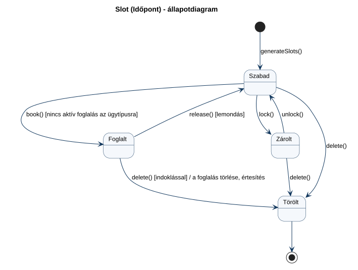
20. ábra. A Slot (Időpont) osztály állapotdiagramja. Megnyitás teljes méretben
7.2.5 A Booking állapotdiagramja
A foglalás állapotai. Egy hallgatónak ügytípusonként legfeljebb egy Aktív foglalása lehet (K-30).

21. ábra. A Booking (Foglalás) osztály állapotdiagramja. Megnyitás teljes méretben
7.3 Funkcionális modell
7.3.1 Időpontsáv rögzítése és az időpontok előállítása (UC-16)
Hogyan lesz az adminisztrátor által megadott sávból foglalható időpont. Az időpontok előállítása (generateSlots) ismétlődő sávnál hetente megismétlődik az ismétlődés végéig; az átfedés-ellenőrzés minden érintett hétre lefut.

22. ábra. UC-16 Időpontsáv rögzítése – aktivitásdiagram. Megnyitás teljes méretben
7.3.2 Szabad időpontok számítása
A CaseType.freeSlots(from, to) az ügytípus sávjaihoz tartozó időpontok közül azokat adja vissza, amelyek Szabad állapotúak, a megadott időszakba esnek, és legalább 2 óra múlva kezdődnek. (Ez utóbbi feltétel ugyanaz, mint a lemondási határidő: ha valaki 2 órán belüli időpontot foglalna, azt már nem tudná lemondani.) Ha a 14 napos időszakban nincs találat, a nearestFreeSlot a 14. nap utáni első szabad időpontot adja (UC-11 A1).
7.3.3 Időpont törlése foglalással (UC-16 E2)
A Slot.delete(by, reason) foglalt időpontnál három lépést végez egyben: a foglalást Törölve állapotba teszi az indoklással (Booking.markDeleted), az időpontot Törölt állapotba teszi, és BOOKING_DELETED típusú értesítést készít a hallgatónak (K-42). Az indoklás megadása kötelező; nélküle a művelet nem hajtódik végre.
7.4 Operációk azonosítása
Az UC-11 szekvenciadiagramjából a freeSlots, a hasActiveBooking és a book, az UC-12-éből a listFor, a canCancel, a cancel és a release, az UC-16 aktivitásdiagramjából a generateSlots és az overlaps művelet adódott. A lock, az unlock és a delete az állapotdiagram átmeneteiből származik.
Döntés: a foglalás létrehozása az időpont felelőssége (Slot.book), mert az időpont tudja, hogy szabad-e, és a foglalással egy lépésben kell állapotot váltania. Így két egyidejű foglalási kísérletből csak az egyik sikerülhet (UC-11 E1); a megvalósítás módját a rendszerterv írja le.
7.5 Az analízis modell osztálydiagramja
Az alrendszer osztályai attribútumokkal és operációkkal. Egy időponthoz több foglalás is tartozhat időben egymás után (lemondás után újrafoglalás), de aktív foglalás egyszerre csak egy.

23. ábra. Az Ügyintézés alrendszer osztálydiagramja. Megnyitás teljes méretben
7.6 Az analízis modell osztályainak listája
A típusoknál az analízis szintjén általános típusokat adunk meg (szöveg, egész szám, dátum és idő stb.); osztálynév típus esetén az attribútum egy másik objektumra hivatkozik. A pontos adatbázistípusokat a rendszerterv tartalmazza.
7.6.1 CaseType (Ügytípus)
- felelőssége, feladata: Az ügyintézés egy fajtája, amelyre időpont foglalható (például igazolás kérése, tanulmányi ügy, kollégiumi ügy). Megadja az ügy helyszínét és egy időpont hosszát, és kiszámolja a szabad időpontokat (K-29).
- együttműködők: SlotRange, Slot
- attribútumok
Név Típus Leírás idegész szám Belső azonosító. nameszöveg Az ügytípus neve. descriptionszöveg Rövid leírás a hallgatónak. locationszöveg Az ügyintézés helye, például „Tanulmányi Osztály, A/4 épület”. slotMinutesegész szám Egy időpont hossza percben, például 15. activelogikai Hamis, ha az ügytípusra már nem lehet foglalni. - operációk
Név Argumentumok Működése, feladata freeSlots: Slot[]from, to A szabad, nem zárolt, jövőbeli időpontok a megadott időszakban (alapértelmezetten 14 nap). nearestFreeSlot: Slotafter A legközelebbi szabad időpont, ha 14 napon belül nincs (UC-11 A1).
7.6.2 SlotRange (Időpontsáv)
- felelőssége, feladata: Az adminisztrátor által megadott időszak (például hétfő 9–12 óra), amelyből a rendszer foglalható időpontokat készít. Az ügytípus időpont-hossza szerint időpontokra bontja magát, és ellenőrzi, hogy nem fed-e át ugyanannak az ügytípusnak egy másik sávjával (UC-16).
- együttműködők: CaseType, Slot
- attribútumok
Név Típus Leírás caseTypeCaseType Az ügytípus. datedátum Az első nap, amelyre a sáv vonatkozik. startTimeidőpont A sáv kezdete. endTimeidőpont A sáv vége. repeatUntildátum Heti ismétlődésnél az utolsó nap; különben üres (UC-16 A1). createdByUser A sávot rögzítő adminisztrátor. - operációk
Név Argumentumok Működése, feladata generateSlots: Slot[]– Előállítja a sávból készülő időpontokat; ezt mutatja az előnézet is (UC-16, 4. lépés). overlaps: logikaiother Igaz, ha két sáv ugyanarra az ügytípusra időben átfed (UC-16 E1).
7.6.3 Slot (Időpont)
- felelőssége, feladata: Egy foglalható ügyintézési időpont, például hétfő 9:15–9:30. Nyilvántartja, hogy az időpont szabad, foglalt, zárolt vagy törölt, és csak szabad állapotban engedi a foglalást.
- együttműködők: SlotRange, CaseType, Booking, SlotStatus
- attribútumok
Név Típus Leírás rangeSlotRange A sáv, amelyből az időpont készült. startsAtdátum és idő Kezdés. endsAtdátum és idő Befejezés. statusSlotStatus Az időpont állapota. - operációk
Név Argumentumok Működése, feladata book: Bookingstudent Ha az időpont szabad, foglalttá teszi, és létrehozza a foglalást; ha közben más lefoglalta, hibát jelez (UC-11 E1). release– Lemondás után újra szabaddá teszi az időpontot (K-32). lockby Zárolja a szabad időpontot (UC-16 A2). unlockby Feloldja a zárolást. deleteby, reason Törli az időpontot. Ha foglalt volt, a foglalást is törli, és indoklással értesíti a hallgatót (K-42).
7.6.4 SlotStatus (Időpontállapot)
- felelőssége, feladata: Az időpont állapotai. Felsorolás típus. Lásd a Slot állapotdiagramját.
- együttműködők: Slot
- értékek (felsorolás típus)
Érték Jelentés FREEszabad BOOKEDfoglalt LOCKEDzárolt DELETEDtörölt - operációk: nincsenek.
7.6.5 Booking (Foglalás)
- felelőssége, feladata: Egy hallgató foglalása egy ügyintézési időpontra. Rögzíti a foglalást, és ellenőrzi a lemondás szabályait (K-32). Ügytípusonként legfeljebb egy aktív foglalás lehet (K-30).
- együttműködők: User, Slot, Notification, BookingStatus
- attribútumok
Név Típus Leírás idegész szám Belső azonosító. studentUser A foglaló hallgató. slotSlot A lefoglalt időpont. statusBookingStatus A foglalás állapota. createdAtdátum és idő A foglalás ideje. cancelledAtdátum és idő A lemondás vagy törlés ideje. deleteReasonszöveg Az adminisztrátor indoklása, ha ő törölte az időpontot (UC-12 E2). - operációk
Név Argumentumok Működése, feladata hasActiveBooking: logikaistudent, caseType Osztályszintű művelet: van-e a hallgatónak aktív foglalása az ügytípusra (K-30). canCancel: logikainow Igaz, ha a foglalás aktív, és legalább 2 óra van az időpontig (K-32). cancelnow Lemondja a foglalást, és felszabadítja az időpontot. markDeletedreason Törölt állapotba teszi a foglalást az adminisztrátor indoklásával. listFor: Booking[]student Osztályszintű művelet: a hallgató aktív és korábbi foglalásai (UC-12).
7.6.6 BookingStatus (Foglalásállapot)
- felelőssége, feladata: A foglalás állapotai. Felsorolás típus. Lásd a Booking állapotdiagramját.
- együttműködők: Booking
- értékek (felsorolás típus)
Érték Jelentés ACTIVEaktív CANCELLEDlemondva DELETEDtörölve (az adminisztrátor törölte az időpontot) COMPLETEDlezajlott - operációk: nincsenek.
8. A Hibabejelentés alrendszer modellje
A Hibabejelentés alrendszer a hibabejelentések teljes életciklusát kezeli a beküldéstől a lezárásig. Use case-ei: UC-13 Hibabejelentés beküldése, UC-14 Hibabejelentés állapotának követése, UC-17 Hibabejelentések kezelése, valamint az ezekhez kapcsolódó UC-21 Bejelentés részleteinek megtekintése («include»), UC-22 Kép csatolása és UC-23 Bejelentés átirányítása («extend»). Kapcsolódik a Felhasználókezelés (bejelentő, értesítés, napló), a Tartalomkezelés (épület) és a Szervezet és oktatók (felelős tanszék) alrendszerhez.
8.1 Statikus modell
8.1.1 Kapcsolatok pontosítása
- FaultReport – ResponsibleUnit („felelős”): 0..* – 1. A kezdeti modellben a felelős egységet csak a kategória határozta meg. Az UC-13 9. lépése szerint azonban a hozzárendelés „a kategória és a helyszín alapján” történik, a K-43 szerint pedig az oktató a tanszékéhez rendelt bejelentéseket kezeli. Ez két új elemet hozott: a kategória alapértelmezett felelősét (ReportCategory – ResponsibleUnit, 0..* – 1) és az épületenként eltérő szabályt leíró AssignmentRule osztályt (kategória + épület → egység).
- ResponsibleUnit – Department („lehet”): 0..* – 0..1. Ha az egység egy tanszék, a tanszék oktatói kezelhetik a bejelentéseit.
- FaultReport – StatusChange („előzmény”): kompozíció, 1 – 1..*. Az előzmények a bejelentés részei; legalább egy bejegyzés mindig van (a beküldés).
- StatusChange – User („módosította”): 0..* – 1. A bejelentő látja, ki és mikor módosította az állapotot (UC-14).
- FaultReport – Attachment („csatolt kép”): kompozíció, 1 – 0..1, mert a K-34 szerint egy kép csatolható.
- FaultReport – Place („helyszín”): 0..* – 1, „épület” szerepnévvel; a pontosabb hely szöveges attribútum (UC-13, 4. lépés).
8.1.2 Attribútumok azonosítása
- A FaultReport
codeattribútuma az UC-13 posztkondíciójából (egyedi azonosító, például HB-2026-0042) adódik. A belsőidmellett azért kell, mert ezt a felhasználó is látja és hivatkozik rá. - A
latitudeéslongitudeaz UC-13 A2 (helyszín a térképen) miatt került be; üres, ha a bejelentő nem jelölt ki pontot. - A StatusChange
fromStatuséstoStatusattribútuma lehetővé teszi, hogy ugyanaz az osztály írja le az állapotváltozást és az állapotváltozás nélküli megjegyzést (UC-17 A2). - Az Attachment méretadatai a K-34 ellenőrzéséhez és az SRS 6.3 kicsinyítéséhez (legfeljebb 1600 px) kellenek.
8.1.3 Bázisosztályok keresése
Megvizsgáltuk, hogy a StatusChange és a Felhasználókezelés alrendszer AuditLogEntry osztálya összevonható-e, hiszen mindkettő „ki, mit, mikor” adatot tárol. Nem vontuk össze őket: a StatusChange a bejelentés része, a bejelentő is látja, és megjegyzést tartalmaz; a naplóbejegyzés belső, csak az adminisztrátorok számára készül. Az állapotváltozáskor ezért mindkettő létrejön. Az alrendszerben nincs általánosítás.
8.2 Dinamikus modell
8.2.1 UC-13 Hibabejelentés beküldése
A bejelentés beküldése. A kép ellenőrzése (E2) a bejelentés létrehozása előtt történik, így hibás képnél csak a kép utasítódik el. A felelős egységet a ResponsibleUnit.resolve() választja ki a kategória és az épület alapján.

24. ábra. UC-13 Hibabejelentés beküldése – szekvenciadiagram. Megnyitás teljes méretben
8.2.2 UC-17 Hibabejelentések kezelése
A felelős (adminisztrátor vagy a tanszék oktatója) állapotot módosít és megjegyzést ír. A jogosultságot a canBeManagedBy() ellenőrzi (E2); elutasításnál az indoklás kötelező (K-44, E1). Minden változás előzménybejegyzést, értesítést és naplóbejegyzést eredményez.

25. ábra. UC-17 Hibabejelentések kezelése – szekvenciadiagram. Megnyitás teljes méretben
8.2.3 UC-14 Hibabejelentés állapotának követése
A felület a FaultReport.listFor(bejelentő) művelettel kéri le a saját bejelentéseket, majd a kiválasztott bejelentés megnyitása előtt a canBeViewedBy művelettel ellenőrzi a hozzáférést (E1). Az ábra szerkezete az UC-12-éhez hasonló, ezért külön nem rajzoltuk meg.
8.2.4 UC-21 Bejelentés részleteinek megtekintése
Az UC-14 és az UC-17 közös része («include»). A bejelentés megnyitása előtt a felület a FaultReport.canBeViewedBy(user) művelettel ellenőrzi a hozzáférést (E1), majd megjeleníti a bejelentés adatait, a csatolt képet (Attachment) és időrendben az előzményeit (StatusChange): állapot, megjegyzés, módosító, időpont. A rendszer adatai nem változnak, a use case egyetlen lekérdezés, ezért külön ábrát nem készítettünk.
8.2.5 UC-22 Kép csatolása
Az UC-13 bővítése. A kiválasztott fájlt az Attachment.validate(file) ellenőrzi (JPEG vagy PNG, legfeljebb 5 MB, K-34); hibás képnél csak a képet utasítja el, a bejelentés többi adata megmarad (E1). A képet a bejelentés beküldésekor az Attachment.store(file) menti. Mindkét üzenet szerepel az UC-13 szekvenciadiagramján (24. ábra), ezért külön ábrát nem készítettünk.
8.2.6 UC-23 Bejelentés átirányítása
Az UC-17 bővítése, csak adminisztrátor végezheti. Az adminisztrátor kiválasztja az új felelős egységet, és megadja az átirányítás okát; a felület a FaultReport.reassign(unit, by) műveletet hívja. A művelet a bejelentést az új egységhez rendeli, előzménybejegyzést (StatusChange) készít, és a változást az AuditLogEntry.record() naplózza (K-46). Oktató kérését a művelet elutasítja (E1). Az üzenetváltás szerkezete az UC-17 állapotmódosításáéval egyezik (25. ábra), ezért külön ábrát nem készítettünk.
8.2.7 A FaultReport állapotdiagramja
A bejelentés négy állapota (K-35). Minden állapotváltozás előzménybejegyzést és értesítést hoz létre. Állapotváltozás nélküli megjegyzés bármelyik állapotban fűzhető a bejelentéshez.

26. ábra. A FaultReport (Hibabejelentés) osztály állapotdiagramja. Megnyitás teljes méretben
8.3 Funkcionális modell
8.3.1 A bejelentés feldolgozása beküldéskor
A FaultReport.submit() feldolgozási lépései. A hozzárendelési szabály (AssignmentRule) épületenként pontosítja a kategória alapértelmezett felelősét. Az azonosító éven belüli sorszám, így olvasható és egyedi.

27. ábra. A bejelentés felelős egységhez rendelése – aktivitásdiagram. Megnyitás teljes méretben
8.3.2 Hozzáférési szabályok
A canBeViewedBy(user) igaz, ha a felhasználó (1) a bejelentő, vagy (2) adminisztrátor, vagy (3) oktató, és a bejelentés felelős egysége az ő tanszéke. A canBeManagedBy(user) ugyanez a (2) és (3) esetre. Minden más esetben a hozzáférés megtagadva (K-38, UC-14 E1, UC-17 E2). A listák (listFor) ugyanezt a feltételt használják, így a felhasználó a listában sem lát olyat, amit nem nyithat meg.
8.4 Operációk azonosítása
A beküldés szekvenciadiagramjából a submit, a ResponsibleUnit.resolve, a nextCode, valamint az Attachment.validate és store; a kezelés szekvenciadiagramjából a listFor, a canBeManagedBy és a changeStatus; az UC-17 alternatíváiból az addComment és a reassign művelet adódott.
Döntés: a K-44 (elutasítás csak indoklással) a changeStatus művelet szabálya, és az is ellenőrzi, hogy a reassign műveletet csak adminisztrátor hívhatja (UC-23). Így a szabályok a felülettől függetlenül érvényesülnek.
8.5 Az analízis modell osztálydiagramja
Az alrendszer osztályai attribútumokkal és operációkkal. Az AssignmentRule a kapcsolatok pontosítása során jelent meg: a kategória és az épület együtt határozza meg a felelőst.

28. ábra. A Hibabejelentés alrendszer osztálydiagramja. Megnyitás teljes méretben
8.6 Az analízis modell osztályainak listája
A típusoknál az analízis szintjén általános típusokat adunk meg (szöveg, egész szám, dátum és idő stb.); osztálynév típus esetén az attribútum egy másik objektumra hivatkozik. A pontos adatbázistípusokat a rendszerterv tartalmazza.
8.6.1 FaultReport (Hibabejelentés)
- felelőssége, feladata: Egy felhasználó által rögzített jelzés egy egyetemi hibáról, kategóriával, helyszínnel és leírással. Végigviszi a bejelentést az életciklusán (K-35): beküldéskor felelős egységhez rendelődik és azonosítót kap, a felelős módosítja az állapotát, és minden változás bekerül az előzményekbe. Megmondja, ki láthatja (K-38, K-43).
- együttműködők: User, ReportCategory, Place, ResponsibleUnit, StatusChange, Attachment, Notification, ReportStatus
- attribútumok
Név Típus Leírás idegész szám Belső azonosító. codeszöveg A felhasználónak mutatott azonosító, például HB-2026-0042. reporterUser A bejelentő. categoryReportCategory A hiba kategóriája. buildingPlace Az épület, ahol a hiba van. locationDetailszöveg A terem vagy a pontosabb hely. latitude, longitudevalós szám A térképen kijelölt pont, ha a bejelentő megadta (UC-13 A2). descriptionszöveg A hiba leírása, legalább 10 karakter. statusReportStatus Az aktuális állapot. unitResponsibleUnit A felelős egység. createdAtdátum és idő A beküldés ideje. - operációk
Név Argumentumok Működése, feladata submit– Ellenőrzi az adatokat, felelős egységet rendel hozzá, azonosítót ad, és Új állapotban rögzíti (UC-13). changeStatusnewStatus, comment, by Módosítja az állapotot; elutasításnál a megjegyzés kötelező (K-44). Előzménybejegyzést és értesítést hoz létre. addCommentcomment, by Állapotváltozás nélküli megjegyzést fűz a bejelentéshez (UC-17 A2). reassignunit, by Másik felelős egységhez rendeli a bejelentést; csak adminisztrátor teheti meg (UC-23). canBeViewedBy: logikaiuser A bejelentő, az adminisztrátor és a felelős tanszék oktatója láthatja (K-38, K-43). canBeManagedBy: logikaiuser Az adminisztrátor minden bejelentést, az oktató a tanszékéhez rendelteket kezelheti. listFor: FaultReport[]user, filter Osztályszintű művelet: a felhasználó által látható bejelentések; a kezelőnél a legrégebbi Új állapotúval kezdve (UC-14, UC-17). nextCode: szövegyear Osztályszintű művelet: a következő éven belüli sorszámú azonosító.
8.6.2 ReportStatus (Bejelentésállapot)
- felelőssége, feladata: A hibabejelentés állapotai (K-35). Felsorolás típus. Lásd a FaultReport állapotdiagramját.
- együttműködők: FaultReport, StatusChange
- értékek (felsorolás típus)
Érték Jelentés NEWÚj IN_PROGRESSFolyamatban RESOLVEDMegoldva REJECTEDElutasítva - operációk: nincsenek.
8.6.3 ReportCategory (Bejelentési kategória)
- felelőssége, feladata: A hiba fajtája: világítás, fűtés és szellőzés, takarítás, informatika, akadálymentesség, egyéb. Csoportosítja a bejelentéseket, és megadja az alapértelmezett felelős egységet.
- együttműködők: FaultReport, ResponsibleUnit, AssignmentRule
- attribútumok
Név Típus Leírás idegész szám Belső azonosító. nameszöveg A kategória neve. defaultUnitResponsibleUnit Az egység, amely akkor kapja a bejelentést, ha nincs rá külön szabály. - operációk: nincsenek; az osztály csak adatot tárol, a vele végzett műveleteket a tartalmazó osztály végzi.
8.6.4 ResponsibleUnit (Felelős egység)
- felelőssége, feladata: Az a szervezeti egység, amely egy bejelentés megoldásáért felel (például Gondnokság, Informatikai Iroda, egy tanszék). Fogadja a hozzárendelt bejelentéseket. Ha egy tanszékhez kötött, a tanszék oktatói kezelhetik a bejelentéseit (K-43).
- együttműködők: FaultReport, Department, ReportCategory, AssignmentRule
- attribútumok
Név Típus Leírás idegész szám Belső azonosító. nameszöveg Az egység neve. emailszöveg Az egység közös e-mail-címe. departmentDepartment A tanszék, ha az egység egy tanszék; különben üres. - operációk
Név Argumentumok Működése, feladata resolve: ResponsibleUnitcategory, building Osztályszintű művelet: megkeresi a kategóriára és az épületre vonatkozó szabályt; ha nincs, a kategória alapértelmezett egységét adja (UC-13, 9. lépés).
8.6.5 AssignmentRule (Hozzárendelési szabály)
- felelőssége, feladata: Szabály, amely egy kategória egy épületben bejelentett hibáit egy adott egységhez irányítja (például az informatikai hibákat egy épületben az ott működő tanszékhez). Pontosítja a kategória alapértelmezett felelősét épületenként.
- együttműködők: ReportCategory, Place, ResponsibleUnit
- attribútumok
Név Típus Leírás categoryReportCategory A kategória. buildingPlace Az épület. unitResponsibleUnit A felelős egység. - operációk
Név Argumentumok Működése, feladata matches: logikaicategory, building Igaz, ha a szabály a megadott kategóriára és épületre vonatkozik.
8.6.6 StatusChange (Állapotváltozás)
- felelőssége, feladata: A bejelentés előzményeinek egy bejegyzése: állapotváltozás vagy megjegyzés, a módosító személlyel és az időponttal. Megőrzi a bejelentés teljes történetét, amelyet a bejelentő is lát (UC-14).
- együttműködők: FaultReport, User, ReportStatus
- attribútumok
Név Típus Leírás reportFaultReport A bejelentés. fromStatusReportStatus A korábbi állapot; az első bejegyzésnél üres. toStatusReportStatus Az új állapot; csak megjegyzésnél megegyezik a korábbival. commentszöveg A felelős megjegyzése vagy az elutasítás indoklása. changedByUser A módosító felhasználó. changedAtdátum és idő A változás ideje. - operációk
Név Argumentumok Működése, feladata isStatusChange: logikai– Igaz, ha a bejegyzés állapotváltozás, és nem csak megjegyzés.
8.6.7 Attachment (Csatolmány)
- felelőssége, feladata: A bejelentéshez csatolt kép. Ellenőrzi a kép formátumát és méretét (K-34), és tárolás előtt legfeljebb 1600 pixel szélesre kicsinyíti (SRS 6.3).
- együttműködők: FaultReport
- attribútumok
Név Típus Leírás fileNameszöveg Az eredeti fájlnév. mimeTypeszöveg image/jpeg vagy image/png. sizeBytesegész szám A feltöltött fájl mérete. storagePathszöveg A tárolt kép helye a szerveren. width, heightegész szám A tárolt kép mérete pixelben. - operációk
Név Argumentumok Működése, feladata validate: logikaifile Osztályszintű művelet: JPEG vagy PNG, legfeljebb 5 MB (UC-22 E1). store: Attachmentfile Osztályszintű művelet: kicsinyíti és tárolja a képet.
9. Mellékletek
9.1 Az analízis modell áttekintő osztálydiagramja
Az összes alrendszer osztálya és kapcsolata egy ábrán, attribútumok és operációk nélkül. Az osztályok részletes leírása az alrendszerek fejezeteiben található.
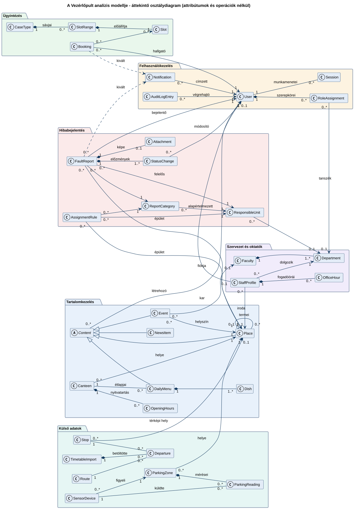
29. ábra. Az analízis modell áttekintő osztálydiagramja. Megnyitás teljes méretben
9.2 Ábrajegyzék
- 1. ábra – A kezdeti (elemzési szintű) osztálydiagram
- 2. ábra – A rendszer funkcionális alrendszerei (csomagdiagram)
- 3. ábra – UC-01 Bejelentkezés – szekvenciadiagram
- 4. ábra – UC-18 Szerepkörök kezelése – aktivitásdiagram
- 5. ábra – A Felhasználókezelés alrendszer osztálydiagramja
- 6. ábra – UC-10 Saját oktatói adatok szerkesztése – szekvenciadiagram
- 7. ábra – A Szervezet és oktatók alrendszer osztálydiagramja
- 8. ábra – UC-15 Tartalom kezelése – szekvenciadiagram (esemény közzététele)
- 9. ábra – UC-05 Események böngészése és szűrése – szekvenciadiagram
- 10. ábra – A Content (Tartalom) osztály állapotdiagramja
- 11. ábra – UC-03 Hely keresése – aktivitásdiagram
- 12. ábra – A Tartalomkezelés alrendszer osztálydiagramja
- 13. ábra – Parkolóadat fogadása – szekvenciadiagram
- 14. ábra – UC-04 Szabad parkolóhelyek megtekintése – szekvenciadiagram
- 15. ábra – A ParkingZone (Parkolózóna) osztály állapotdiagramja (adatfrissesség)
- 16. ábra – A menetrend napi betöltése – aktivitásdiagram
- 17. ábra – A Külső adatok alrendszer osztálydiagramja
- 18. ábra – UC-11 Ügyintézési időpont foglalása – szekvenciadiagram
- 19. ábra – UC-12 Saját foglalások kezelése – szekvenciadiagram (lemondás)
- 20. ábra – A Slot (Időpont) osztály állapotdiagramja
- 21. ábra – A Booking (Foglalás) osztály állapotdiagramja
- 22. ábra – UC-16 Időpontsáv rögzítése – aktivitásdiagram
- 23. ábra – Az Ügyintézés alrendszer osztálydiagramja
- 24. ábra – UC-13 Hibabejelentés beküldése – szekvenciadiagram
- 25. ábra – UC-17 Hibabejelentések kezelése – szekvenciadiagram
- 26. ábra – A FaultReport (Hibabejelentés) osztály állapotdiagramja
- 27. ábra – A bejelentés felelős egységhez rendelése – aktivitásdiagram
- 28. ábra – A Hibabejelentés alrendszer osztálydiagramja
- 29. ábra – Az analízis modell áttekintő osztálydiagramja
Címlap
Csoport neve: ME-nthetetlenek
Feladat sorszáma: 19
Feladat címe: Az uni-app jelenlegi funkcióinak gyakorlatiasabb átdolgozása
Rendszertervezés
Gyakorlatvezető:
Tompa Tamás
Csoporttagok:
| Név | Tankör | E-mail-cím |
|---|---|---|
| Csoportvezető: Dávid Gergő | G2-BP1 | gergo.david@student.uni-miskolc.hu |
| Győri Kristóf | G2-BP1 | kristof.gyori@student.uni-miskolc.hu |
| Maklári Máté | GE-BGI | mate.mate.165@gmail.com |
| Balázs Csenge Málna | GE-BGI | csenge.balazs.malna@student.uni-miskolc.hu |
| Nagy Virág | GE-BGI | virag.nagy@student.uni-miskolc.hu |
Beadás dátuma: 2026. 11. 16.
Történet
| Dátum | Verzió | Leírás | Szerző |
|---|---|---|---|
| 2026. 11. 16. | 1.0 | Első változat: felhasználói felület, adatbázis-kezelő, szemantikai és relációs adatmodell, adatelérési osztályok, a funkcionális modell kiegészítése, architektúra, REST API. | ME-nthetetlenek |
Tartalomjegyzék
- 1. Bevezetés
- 2. Felhasználói felület
- 2.1 Elrendezés és arculat
- 2.2 Képernyők és navigáció
- 2.3 Képernyőtervek
- 2.4 Űrlapok ellenőrzése és hibaüzenetek
- 2.5 Visszajelzések és állapotok
- 3. Adatmodellek
- 3.1 Az adatbázis-kezelő kiválasztása
- 3.2 Szemantikai adatmodell
- 3.3 Relációs adatmodell
- 3.4 Az adatbázis-kezelővel kapcsolatot tartó osztályok
- 4. A funkcionális modell kiegészítése
- 4.1 Egyidejű foglalás
- 4.2 Egyidejű tartalomszerkesztés
- 4.3 Értesítések küldése
- 4.4 Jogosultság-ellenőrzés és hibakezelés
- 4.5 Külső szolgáltatások kiesése
- 5. Architektúra és telepítés
- 6. A REST API végpontjai
- 7. A forráskód szerkezete
- 8. Mellékletek
1. Bevezetés
Ez a dokumentum a Vezérlőpult rendszertervét tartalmazza: a felhasználói felület tervét, az adatbázis-kezelő kiválasztását, a szemantikai és a relációs adatmodellt, az adatbázissal kapcsolatot tartó osztályok tervét, a funkcionális modell kivételes és alternatív folyamatainak kiegészítését, valamint a megvalósításhoz szükséges további döntéseket (architektúra, telepítés, REST API, forráskód-szerkezet).
A dokumentum az SRS követelményeire és az analízis modell 1.1-es verziójára épül. Az osztályok nevei az analízis modell neveivel egyeznek; az adatbázistáblák és -oszlopok az SRS 7.2 elnevezési konvenciója szerint angol, kisbetűs, aláhúzásjellel tagolt nevek, a táblák többes számban (például FaultReport → fault_reports).
Felépítés. A 2. fejezet a felhasználói felületet, a 3. az adatmodelleket, a 4. a funkcionális modell kiegészítését írja le. Az 5–7. fejezet a részletes tervezés további eredményeit tartalmazza (architektúra és telepítés, REST API, forráskód-szerkezet), a 8. a mellékleteket.
2. Felhasználói felület
2.1 Elrendezés és arculat
A felület az SRS 11.1 pontja szerint a projekt dokumentációs oldalának elrendezését követi, így a csapat által már elkészített stíluselemek (style.css, Tailwind CSS) újrahasznosíthatók:
- Fejléc (60 px magas, sötétkék,
#0b1a29): bal oldalon az egyetem neve (a kezdőlapra mutat), jobb oldalon a „Bejelentkezés” gomb, bejelentkezés után a felhasználó neve lenyíló menüvel (saját oldalak, kijelentkezés). - Nemzeti színű csík a fejléc alatt (piros–fehér–zöld, 2 px).
- Bal oldali menü (256 px széles,
#10365c): ikon és felirat minden menüpontnál (SRS 4.3); az aktív menüpontot világoskék bal oldali sáv és világosabb háttér jelzi. A menüpontok listája a szerepkörtől függ (lásd 2.2). - Tartalomterület világosszürke háttéren (
#f0f2f5), fehér kártyákkal. - Reszponzív viselkedés: 768 px alatt a menü rejtett, a fejléc bal oldali gombjával nyitható; a kártyák és a táblázatok egy oszlopba rendeződnek, a széles táblázatok vízszintesen görgethetők. A felület 360 px szélességtől használható (SRS 4.6).
- Akadálymentesség: szemantikus HTML-elemek (header, nav, main), látható fókusz, minden ikonhoz szöveges címke, a színjelölések mellett szöveg is (például „Kevés hely”). A kontraszt a WCAG 2.1 AA szintnek megfelel (SRS 4.6).
2.2 Képernyők és navigáció
A képernyők listáját az SRS 11.1 táblázata adja. Az alábbi ábra a köztük lévő átmeneteket mutatja szerepkörönként.
A képernyők és a köztük lévő átmenetek szerepkörönként. A bal oldali menüből minden nyilvános képernyő egy kattintással elérhető; a bejelentkezést igénylő képernyők csak a megfelelő szerepkörrel jelennek meg a menüben. A szaggatott nyilak a képernyők közötti hivatkozásokat jelölik (például az esemény helyszínéről a térképre).

1. ábra. A felhasználói felület navigációs térképe. Megnyitás teljes méretben
| Menüpont | Látja | Use case-ek |
|---|---|---|
| Kezdőlap, Térkép, Parkolás, Események, Hírek, Menza, Menetrend, Oktatók, Súgó | mindenki | UC-03 – UC-09, UC-19 |
| Ügyintézés (Új foglalás, Foglalásaim), Hibabejelentés (Új bejelentés, Bejelentéseim) | hallgató, oktató | UC-11 – UC-14, UC-21, UC-22 |
| Oktatói adatlapom (a fejléc névmenüjében) | oktató | UC-10 |
| Bejelentések kezelése | oktató, adminisztrátor | UC-17, UC-21, UC-23 |
| Adminisztráció (Tartalom, Időpontok, Felhasználók, Napló) | adminisztrátor | UC-15, UC-16, UC-18, UC-24 |
Az UC-01 Bejelentkezés és az UC-02 Kijelentkezés a fejlécből érhető el. Az UC-20 Értesítés küldése nem kapcsolódik képernyőhöz: az e-mailt a rendszer küldi (lásd 4.3). Az UC-19 – UC-24 az SRS 0.4-es változatának «include», illetve «extend» kapcsolattal bevezetett use case-ei; önálló menüpontjuk nincs, a táblázatban annál a képernyőnél szerepelnek, amelyről elérhetők.
A felület egyoldalas alkalmazásként (single-page application) működik: a menüpontok a cím # utáni részét változtatják (például #/esemenyek), így a böngésző „Vissza” gombja és a könyvjelzők is működnek, az oldal pedig nem töltődik újra. Védett képernyőnél, ha nincs munkamenet, a felület a bejelentkezést indítja, és utána a kért képernyőre tér vissza (UC-01 A1).
2.3 Képernyőtervek
A legfontosabb képernyők drótvázai. A drótváz az elemek elrendezését és feliratait mutatja, a végleges színeket és ikonokat a 2.1 pont adja meg. A többi képernyő ugyanezekből az elemekből épül fel (lista szűrőkkel, adatlap, űrlap).
A kezdőlap drótváza. A fejléc, a bal oldali menü és a tartalomterület elrendezése minden képernyőn azonos (SRS 11.1). A kártyák a leggyakoribb funkciókat mutatják; mobilon egymás alá kerülnek, a menü pedig a fejléc gombjával nyílik.

2. ábra. Képernyőterv: Kezdőlap (asztali nézet). Megnyitás teljes méretben
Az időpontfoglalás három lépése egy képernyőn: ügytípus, időpont, összegzés. A naptárban csak a szabad időpontok kattinthatók; a foglalás gomb csak az összegzés után aktív.
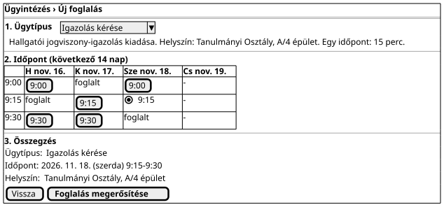
3. ábra. Képernyőterv: Új foglalás (UC-11). Megnyitás teljes méretben
A hibabejelentés űrlapja. A kötelező mezőket csillag jelöli; a hibaüzenet a hibás mező alatt jelenik meg, és megmondja, mit kell javítani (SRS 9.3). A helyszín a térképen is kijelölhető.

4. ábra. Képernyőterv: Új hibabejelentés (UC-13). Megnyitás teljes méretben
A felelősök listanézete szűrőkkel és a kiválasztott bejelentés részletei. Elutasításnál a megjegyzés mező kötelező (K-44).

5. ábra. Képernyőterv: Bejelentések kezelése (UC-17). Megnyitás teljes méretben
2.4 Űrlapok ellenőrzése és hibaüzenetek
Minden űrlapot a felület és a szerver is ellenőriz: a felület azonnali visszajelzést ad, a szerver pedig a végső döntést hozza, mert a felületi ellenőrzés megkerülhető. A hibaüzenet a mező alatt jelenik meg, és megmondja, mit kell javítani (SRS 9.3). A legfontosabb szabályok:
| Űrlap | Mező | Szabály | Hibaüzenet |
|---|---|---|---|
| Új foglalás | Időpont | kötelező; szabad | „Válasszon egy szabad időpontot.” |
| Új bejelentés | Kategória, épület | kötelező | „Válassza ki a hiba kategóriáját.” / „Adja meg az épületet.” |
| Leírás | 10–2000 karakter | „Legalább 10 karakterben írja le a hibát.” | |
| Kép | JPEG vagy PNG, legfeljebb 5 MB | „Csak JPEG vagy PNG kép tölthető fel, legfeljebb 5 MB méretben.” | |
| Oktatói adatlap | Fogadóóra | kezdés < befejezés; ugyanazon a napon nincs átfedés | „A kezdés legyen korábbi a befejezésnél.” / „Ez az idősáv átfed egy másikkal.” |
| Tartalom | Cím | kötelező, legfeljebb 200 karakter | „Adja meg a címet.” |
| Esemény időpontja | kezdés < befejezés | „Az esemény vége nem lehet korábbi a kezdeténél.” | |
| Hír hivatkozása | érvényes https:// cím | „Adjon meg érvényes webcímet (https://…).” | |
| Időpontsáv | Sáv | nincs átfedés ugyanazon ügytípusnál | „A sáv átfed egy meglévő sávval: (nap, idő).” |
| Szerepkörök | Tanszék | oktatói szerepkörnél kötelező | „Oktatói szerepkörhöz válasszon tanszéket.” |
| Bejelentés kezelése | Megjegyzés | elutasításnál kötelező | „Elutasításkor adja meg az indoklást.” |
2.5 Visszajelzések és állapotok
- Betöltés: a lista helyén szürke helykitöltő sorok; 1 másodpercnél hosszabb művelet gombján „Folyamatban…” felirat, a gomb ilyenkor nem kattintható (így nem jön létre kétszer ugyanaz a foglalás vagy bejelentés).
- Üres lista: megmondja a következő lépést, például „Még nincs bejelentése. Új bejelentés” (SRS 4.3).
- Hiba: rövid magyar nyelvű üzenet és „Újra” gomb; a kitöltött űrlap adatai megmaradnak (UC-10 E2, UC-13 E3).
- Siker: zöld sáv a tartalomterület tetején 5 másodpercig, például „A foglalás rögzítve.”
- Megerősítés: párbeszédablak a visszafordíthatatlan műveletek előtt (foglalás lemondása, foglalt időpont törlése, szerepkör visszavonása, kijelentkezés mentetlen adattal).
- Adatfrissesség: „nem friss” és „nincs adat” jelzés a parkolásnál és a menetrendnél, a legutóbbi frissítés idejével (K-13, UC-08 E1).
3. Adatmodellek
3.1 Az adatbázis-kezelő kiválasztása
Az adatbázis-kezelő a MySQL 8.0 Community Server (SRS 8.1). A döntés indokai: a csapat az Adatbázis-kezelés tárgyból ismeri; ingyenes (GPLv2, saját szerveren futtatva nincs további kötelezettség); a tervezett adatmennyiség (1 GB alatt, SRS 6.3) és terhelés (100 kérés másodpercenként, SRS 6.2) jóval a képességein belül van; és támogatja a rendszerhez szükséges tranzakciókat, idegen kulcsokat és egyedi indexeket.
| Szempont | Döntés |
|---|---|
| Tárolómotor | InnoDB minden táblánál (tranzakciók, sorszintű zárolás, idegen kulcsok). |
| Karakterkészlet | utf8mb4, rendezés utf8mb4_hungarian_ci, így a nevek a magyar ábécé szerint rendeződnek. |
| Időpontok | Az adatbázisban UTC-ben, DATETIME típusban; a felület magyarországi helyi időben jeleníti meg őket (SRS 5.4). |
| Kapcsolat az alkalmazással | A mysql2 csomag (SRS 10) ígéret alapú felülete, kapcsolatkészlettel (legfeljebb 10 egyidejű kapcsolat). Minden lekérdezés előkészített, paraméterezett utasítás (execute); SQL szövegösszefűzéssel nem készül (SRS 7.1). |
| Adatbázis-felhasználók | vp_app: az alkalmazás, csak SELECT, INSERT, UPDATE, DELETE joggal (a naplótáblára csak INSERT és SELECT); vp_migrate: a sémamódosításokhoz; vp_backup: csak olvasás a mentéshez. A jelszavak környezeti változókban vannak (SRS 7.6). |
| Sémaváltozások | Számozott SQL-migrációs fájlok a Git-tárolóban (db/migrations); a lefutottakat a schema_migrations tábla tartja nyilván. |
| Mentés | Naponta mysqldump, 14 napig megőrizve; a feltöltött képek hetente (SRS 5.5). |
A feltöltött képek nem az adatbázisban, hanem a szerver lemezén vannak (az attachments tábla csak a helyüket tárolja), mert így az adatbázis kicsi marad, és a mentése gyors.
3.2 Szemantikai adatmodell
A szemantikai adatmodell az analízis modell osztályaiból készült: az adatot tároló osztályokból egyedek, a kapcsolataikból kapcsolatok lettek. A felsorolás típusok (például a szerepkör vagy az állapotok) egyszerű tulajdonságok. A modellt három ábrára bontottuk; az ábrák között közös egyedek (FELHASZNALO, HELY, TANSZEK) kötik össze a részeket. Az ábrákon csak a fontosabb tulajdonságok szerepelnek; a teljes oszloplistát a relációs modell adja meg.
Modellezési döntések:
- Gyenge egyedek: a FOGADOORA és az ELOZMENY csak a tulajdonosával (oktatói adatlap, illetve bejelentés) együtt azonosítható, ezért gyenge egyed (dupla keret), azonosító kapcsolattal (dupla rombusz).
- Kapcsolatból egyed: a szerepkör-hozzárendelésnek és a foglalásnak saját tulajdonságai vannak, és más adatok hivatkoznak rájuk (értesítések), ezért önálló egyedek, nem csak kapcsolatok.
- Többértékű tulajdonság: a menza zárva tartási napjai és az étel allergénjei (dupla ellipszis).
- Összetett tulajdonság: a hely koordinátája (szélesség, hosszúság).
- Származtatott tulajdonság: a parkolózóna szabad helyeinek száma (szaggatott ellipszis); nem tároljuk.
- Háromágú kapcsolat: a hozzárendelési szabály egy kategória és egy épület párosához egy felelős egységet rendel.
- Általánosítás: a Content bázisosztálynak nincs külön egyede; a négy tartalomfajta önálló egyed (lásd 3.3.2).
Az egyedek, a kapcsolatok és a fontosabb tulajdonságok Chen-féle jelöléssel. A kulcstulajdonság aláhúzva, a kapcsolatok számossága a vonalakon látható (1, N). A szerepkör-hozzárendelés önálló egyed, mert saját tulajdonságai vannak, és oktatói szerepkörnél egy tanszékhez is kapcsolódik. A foglalás szintén önálló egyed, mert az értesítések hivatkoznak rá.

6. ábra. Szemantikai adatmodell (ER) – felhasználók, szervezet és ügyintézés. Megnyitás teljes méretben
A tartalmak és a külső forrásból érkező adatok egyedei. A zarva_tartas és az allergen többértékű tulajdonság (dupla ellipszis), a szabad_helyek származtatott tulajdonság (szaggatott ellipszis): nem tároljuk, a kapacitásból és a legutóbbi mérésből számoljuk.
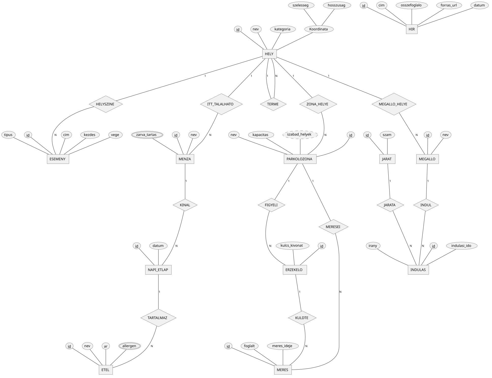
7. ábra. Szemantikai adatmodell (ER) – tartalom és külső adatok. Megnyitás teljes méretben
A hibabejelentés egyedei. A HOZZARENDELESI_SZABALY háromágú kapcsolat: egy kategória és egy épület párosához egy felelős egységet rendel. Az ELOZMENY gyenge egyed, csak a bejelentéssel együtt létezik.

8. ábra. Szemantikai adatmodell (ER) – hibabejelentés. Megnyitás teljes méretben
3.3 Relációs adatmodell
3.3.1 Az átalakítás szabályai
A szemantikai modellt a következő szabályokkal alakítottuk relációs modellé:
- Minden (erős) egyedből tábla lesz; az elsődleges kulcs mesterséges, automatikusan növekvő egész szám (
id). A természetes azonosítók (például a bejelentéscodemezője vagy az Entra-azonosító) egyedi indexet kapnak. - Az 1:N kapcsolat az N oldali táblában idegen kulcs lesz (például
events.place_id). Ha a kapcsolat nem kötelező, az idegen kulcs NULL értéket is felvehet. - Az 1:1 kapcsolat idegen kulcs egyedi indexszel (például
staff_profiles.user_id,attachments.report_id). - A gyenge egyed táblája a tulajdonos kulcsát idegen kulcsként tartalmazza, törléskor vele együtt törlődik (
ON DELETE CASCADE). Az egyszerűbb hivatkozás kedvéért mesterségesidkulcsot is kapott. - A többértékű tulajdonságból külön tábla lesz a tulajdonos kulcsával és az értékkel, összetett elsődleges kulccsal (
canteen_closed_dates,dish_allergens). - Az összetett tulajdonság részei külön oszlopok (
latitude,longitude); a származtatott tulajdonság nem kerül táblába. - A háromágú kapcsolatból három idegen kulcsot tartalmazó tábla lesz (
assignment_rules). - A rögzített értékkészletű tulajdonságok (szerepkör, állapotok)
ENUMtípusúak; a bővíthető listák (bejelentési kategóriák, felelős egységek) saját táblát kaptak, hogy az adminisztrátor kódmódosítás nélkül bővíthesse őket.
3.3.2 Az általánosítás leképezése
A Content bázisosztály és a négy leszármazottja (NewsItem, Event, Place, DailyMenu) leképezésére három lehetőség van: egyetlen tábla az egész hierarchiának, külön tábla a bázisosztálynak és a leszármazottaknak, vagy csak a konkrét osztályoknak egy-egy tábla. Az utóbbit választottuk: a négy tartalomfajtát a rendszer sosem kérdezi le együtt, így nincs szükség összekapcsolásra, és nem keletkezik sok üres oszlop. A közös oszlopok (status, created_by, created_at, updated_at, published_at, version) mind a négy táblában megvannak; egységes kezelésüket a közös ContentRepository osztály végzi (3.4).
3.3.3 A táblák áttekintése
A táblák az elsődleges kulccsal (PK), az idegen kulcsokkal (FK) és az egyedi (UQ) oszlopokkal. A csillag a kötelező (NOT NULL) oszlopot jelöli. A vonalak végén a „szarvasláb” a több oldalt jelzi.

9. ábra. Relációs adatmodell – felhasználók, szervezet és ügyintézés. Megnyitás teljes méretben
A tartalom és a külső adatok táblái. A négy tartalomtábla (places, news_items, events, daily_menus) mindegyike tartalmazza a Content bázisosztály oszlopait (status, created_by, created_at, updated_at, published_at, version); ezeket az áttekinthetőség kedvéért az ábra is mutatja.

10. ábra. Relációs adatmodell – tartalom és külső adatok. Megnyitás teljes méretben
A hibabejelentés táblái. A report_code_counters tábla az éven belüli sorszámot adja ki az azonosítóhoz.

11. ábra. Relációs adatmodell – hibabejelentés. Megnyitás teljes méretben
3.3.4 A táblák leírása
Az alábbi táblák minden oszlopot tartalmaznak. Jelölések: PK – elsődleges kulcs, FK – idegen kulcs (a nyíl után a hivatkozott tábla), UNIQUE – egyedi, GENERATED – az adatbázis által számolt oszlop. Minden DATETIME érték UTC-ben értendő.
Felhasználók, szervezet és ügyintézés
users – az analízis modell User osztályából
| Oszlop | Típus | Megszorítás | Leírás |
|---|---|---|---|
id | INT UNSIGNED | PK, AUTO_INCREMENT | Belső azonosító. |
external_id | VARCHAR(64) | NOT NULL, UNIQUE | Entra ID objektumazonosító. |
name | VARCHAR(150) | NOT NULL | Név. |
email | VARCHAR(254) | NOT NULL, UNIQUE | Egyetemi e-mail-cím. |
disabled | TINYINT(1) | NOT NULL DEFAULT 0 | Letiltott fiók. |
disabled_reason | VARCHAR(500) | NULL | A letiltás oka. |
first_login_at | DATETIME | NOT NULL | Első belépés. |
last_login_at | DATETIME | NOT NULL | Utolsó belépés. |
role_assignments – az analízis modell RoleAssignment osztályából
| Oszlop | Típus | Megszorítás | Leírás |
|---|---|---|---|
id | INT UNSIGNED | PK, AUTO_INCREMENT | |
user_id | INT UNSIGNED | NOT NULL, FK → users | A felhasználó. |
role | ENUM('STUDENT','LECTURER','ADMIN') | NOT NULL | Szerepkör. |
department_id | INT UNSIGNED | NULL, FK → departments | Oktatónál kötelező (alkalmazásszintű ellenőrzés). |
granted_by | INT UNSIGNED | NULL, FK → users | Az adományozó adminisztrátor. |
granted_at | DATETIME | NOT NULL |
UNIQUE (user_id, role): egy szerepkör egyszer.
sessions – az analízis modell Session osztályából
| Oszlop | Típus | Megszorítás | Leírás |
|---|---|---|---|
id | CHAR(64) | PK | A munkamenet-azonosító SHA-256 kivonata; maga az azonosító csak a sütiben van. |
user_id | INT UNSIGNED | NOT NULL, FK → users | |
created_at | DATETIME | NOT NULL | |
last_activity_at | DATETIME | NOT NULL | A 30 perces lejárat ebből számolódik. |
return_url | VARCHAR(500) | NULL |
INDEX (last_activity_at): a lejárt munkamenetek óránkénti törléséhez.
audit_log_entries – az analízis modell AuditLogEntry osztályából
| Oszlop | Típus | Megszorítás | Leírás |
|---|---|---|---|
id | BIGINT UNSIGNED | PK, AUTO_INCREMENT | |
actor_id | INT UNSIGNED | NOT NULL, FK → users | |
action | VARCHAR(50) | NOT NULL | Művelet kódja. |
entity_type | VARCHAR(50) | NOT NULL | |
entity_id | INT UNSIGNED | NOT NULL | |
details | TEXT | NULL | Régi és új érték JSON-ban. |
created_at | DATETIME | NOT NULL |
INDEX (entity_type, entity_id), INDEX (created_at). Az alkalmazás adatbázis-felhasználója erre a táblára csak INSERT és SELECT jogot kap.
notifications – az analízis modell Notification osztályából
| Oszlop | Típus | Megszorítás | Leírás |
|---|---|---|---|
id | INT UNSIGNED | PK, AUTO_INCREMENT | |
recipient_id | INT UNSIGNED | NOT NULL, FK → users | |
type | ENUM('BOOKING_CONFIRMED','BOOKING_REMINDER','BOOKING_DELETED','REPORT_STATUS_CHANGED') | NOT NULL | |
subject | VARCHAR(200) | NOT NULL | |
body | TEXT | NOT NULL | |
booking_id | INT UNSIGNED | NULL, FK → bookings | A kiváltó foglalás. |
fault_report_id | INT UNSIGNED | NULL, FK → fault_reports | A kiváltó bejelentés. |
scheduled_at | DATETIME | NOT NULL | |
sent_at | DATETIME | NULL | |
attempts | TINYINT UNSIGNED | NOT NULL DEFAULT 0 |
INDEX (sent_at, scheduled_at): az esedékes értesítések lekérdezéséhez.
faculties – az analízis modell Faculty osztályából
| Oszlop | Típus | Megszorítás | Leírás |
|---|---|---|---|
id | INT UNSIGNED | PK, AUTO_INCREMENT | |
name | VARCHAR(150) | NOT NULL, UNIQUE | |
short_name | VARCHAR(20) | NOT NULL |
departments – az analízis modell Department osztályából
| Oszlop | Típus | Megszorítás | Leírás |
|---|---|---|---|
id | INT UNSIGNED | PK, AUTO_INCREMENT | |
faculty_id | INT UNSIGNED | NOT NULL, FK → faculties | |
name | VARCHAR(150) | NOT NULL |
staff_profiles – az analízis modell StaffProfile osztályából
| Oszlop | Típus | Megszorítás | Leírás |
|---|---|---|---|
id | INT UNSIGNED | PK, AUTO_INCREMENT | |
name | VARCHAR(150) | NOT NULL | |
email | VARCHAR(254) | NOT NULL | |
department_id | INT UNSIGNED | NOT NULL, FK → departments | |
office_place_id | INT UNSIGNED | NULL, FK → places | |
office_text | VARCHAR(100) | NULL | |
note | VARCHAR(300) | NULL | |
user_id | INT UNSIGNED | NULL, UNIQUE, FK → users | Egy fiókhoz legfeljebb egy adatlap. |
search_key | VARCHAR(150) | NOT NULL | A név normalizált alakja a kereséshez. |
updated_at | DATETIME | NOT NULL |
INDEX (search_key), INDEX (department_id).
office_hours – az analízis modell OfficeHour osztályából
| Oszlop | Típus | Megszorítás | Leírás |
|---|---|---|---|
id | INT UNSIGNED | PK, AUTO_INCREMENT | |
staff_profile_id | INT UNSIGNED | NOT NULL, FK → staff_profiles ON DELETE CASCADE | |
day_of_week | TINYINT UNSIGNED | NOT NULL, CHECK 1–7 | |
start_time | TIME | NOT NULL | |
end_time | TIME | NOT NULL, CHECK end_time > start_time | |
note | VARCHAR(200) | NULL |
case_types – az analízis modell CaseType osztályából
| Oszlop | Típus | Megszorítás | Leírás |
|---|---|---|---|
id | INT UNSIGNED | PK, AUTO_INCREMENT | |
name | VARCHAR(100) | NOT NULL, UNIQUE | |
description | VARCHAR(500) | NULL | |
location | VARCHAR(200) | NOT NULL | |
slot_minutes | SMALLINT UNSIGNED | NOT NULL, CHECK > 0 | |
active | TINYINT(1) | NOT NULL DEFAULT 1 |
slot_ranges – az analízis modell SlotRange osztályából
| Oszlop | Típus | Megszorítás | Leírás |
|---|---|---|---|
id | INT UNSIGNED | PK, AUTO_INCREMENT | |
case_type_id | INT UNSIGNED | NOT NULL, FK → case_types | |
start_date | DATE | NOT NULL | |
start_time | TIME | NOT NULL | |
end_time | TIME | NOT NULL | |
repeat_until | DATE | NULL | |
created_by | INT UNSIGNED | NOT NULL, FK → users |
slots – az analízis modell Slot osztályából
| Oszlop | Típus | Megszorítás | Leírás |
|---|---|---|---|
id | INT UNSIGNED | PK, AUTO_INCREMENT | |
range_id | INT UNSIGNED | NOT NULL, FK → slot_ranges | |
case_type_id | INT UNSIGNED | NOT NULL, FK → case_types | Ismétlés a gyors szabadidőpont-lekérdezéshez. |
starts_at | DATETIME | NOT NULL | |
ends_at | DATETIME | NOT NULL | |
status | ENUM('FREE','BOOKED','LOCKED','DELETED') | NOT NULL DEFAULT 'FREE' |
UNIQUE (range_id, starts_at); INDEX (case_type_id, status, starts_at).
bookings – az analízis modell Booking osztályából
| Oszlop | Típus | Megszorítás | Leírás |
|---|---|---|---|
id | INT UNSIGNED | PK, AUTO_INCREMENT | |
student_id | INT UNSIGNED | NOT NULL, FK → users | |
slot_id | INT UNSIGNED | NOT NULL, FK → slots | |
case_type_id | INT UNSIGNED | NOT NULL, FK → case_types | A K-30 egyediségi feltételhez. |
status | ENUM('ACTIVE','CANCELLED','DELETED','COMPLETED') | NOT NULL | |
created_at | DATETIME | NOT NULL | |
cancelled_at | DATETIME | NULL | |
delete_reason | VARCHAR(500) | NULL | |
active_slot | INT UNSIGNED | GENERATED: IF(status='ACTIVE', slot_id, NULL), UNIQUE | Egy időpontnak legfeljebb egy aktív foglalása lehet. |
active_case | VARCHAR(30) | GENERATED: IF(status='ACTIVE', CONCAT(student_id,'-',case_type_id), NULL), UNIQUE | Ügytípusonként legfeljebb egy aktív foglalás (K-30). |
A két generált oszlop egyedi indexe az adatbázis szintjén is kizárja a dupla foglalást; a NULL érték nem számít ütközésnek.
Tartalom és külső adatok
places – az analízis modell Place osztályából
| Oszlop | Típus | Megszorítás | Leírás |
|---|---|---|---|
id | INT UNSIGNED | PK, AUTO_INCREMENT | |
name | VARCHAR(150) | NOT NULL | Content.title |
category | ENUM('BUILDING','ROOM','CANTEEN','LIBRARY','PARKING','STOP','ENTRANCE','SERVICE') | NOT NULL | |
description | VARCHAR(1000) | NULL | |
latitude | DECIMAL(9,6) | NOT NULL | |
longitude | DECIMAL(9,6) | NOT NULL | |
opening_hours_text | VARCHAR(200) | NULL | |
parent_id | INT UNSIGNED | NULL, FK → places | Teremnél az épület. |
search_key | VARCHAR(150) | NOT NULL | Normalizált név. |
status | ENUM('DRAFT','PUBLISHED','ARCHIVED') | NOT NULL | Tartalomállapot (Content.status). |
created_by | INT UNSIGNED | NOT NULL, FK → users | Létrehozó adminisztrátor. |
created_at | DATETIME | NOT NULL | Létrehozás ideje (UTC). |
updated_at | DATETIME | NOT NULL | Utolsó módosítás ideje (UTC). |
published_at | DATETIME | NULL | Közzététel ideje. |
version | INT UNSIGNED | NOT NULL DEFAULT 1 | Változatszám az egyidejű szerkesztés felismeréséhez. |
INDEX (search_key), INDEX (category, status).
news_items – az analízis modell NewsItem osztályából
| Oszlop | Típus | Megszorítás | Leírás |
|---|---|---|---|
id | INT UNSIGNED | PK, AUTO_INCREMENT | |
title | VARCHAR(200) | NOT NULL | |
summary | TEXT | NOT NULL | |
source_url | VARCHAR(500) | NOT NULL | |
topic | VARCHAR(50) | NOT NULL | |
news_date | DATE | NOT NULL | |
status | ENUM('DRAFT','PUBLISHED','ARCHIVED') | NOT NULL | Tartalomállapot (Content.status). |
created_by | INT UNSIGNED | NOT NULL, FK → users | Létrehozó adminisztrátor. |
created_at | DATETIME | NOT NULL | Létrehozás ideje (UTC). |
updated_at | DATETIME | NOT NULL | Utolsó módosítás ideje (UTC). |
published_at | DATETIME | NULL | Közzététel ideje. |
version | INT UNSIGNED | NOT NULL DEFAULT 1 | Változatszám az egyidejű szerkesztés felismeréséhez. |
INDEX (status, news_date).
events – az analízis modell Event osztályából
| Oszlop | Típus | Megszorítás | Leírás |
|---|---|---|---|
id | INT UNSIGNED | PK, AUTO_INCREMENT | |
title | VARCHAR(200) | NOT NULL | |
description | TEXT | NOT NULL | |
starts_at | DATETIME | NOT NULL | |
ends_at | DATETIME | NOT NULL | |
event_type | VARCHAR(50) | NOT NULL | |
faculty_id | INT UNSIGNED | NULL, FK → faculties | |
place_id | INT UNSIGNED | NOT NULL, FK → places | |
organizer | VARCHAR(150) | NOT NULL | |
status | ENUM('DRAFT','PUBLISHED','ARCHIVED') | NOT NULL | Tartalomállapot (Content.status). |
created_by | INT UNSIGNED | NOT NULL, FK → users | Létrehozó adminisztrátor. |
created_at | DATETIME | NOT NULL | Létrehozás ideje (UTC). |
updated_at | DATETIME | NOT NULL | Utolsó módosítás ideje (UTC). |
published_at | DATETIME | NULL | Közzététel ideje. |
version | INT UNSIGNED | NOT NULL DEFAULT 1 | Változatszám az egyidejű szerkesztés felismeréséhez. |
INDEX (status, starts_at).
canteens – az analízis modell Canteen osztályából
| Oszlop | Típus | Megszorítás | Leírás |
|---|---|---|---|
id | INT UNSIGNED | PK, AUTO_INCREMENT | |
name | VARCHAR(100) | NOT NULL | |
place_id | INT UNSIGNED | NOT NULL, FK → places |
canteen_opening_hours – az analízis modell OpeningHours osztályából
| Oszlop | Típus | Megszorítás | Leírás |
|---|---|---|---|
id | INT UNSIGNED | PK, AUTO_INCREMENT | |
canteen_id | INT UNSIGNED | NOT NULL, FK → canteens ON DELETE CASCADE | |
day_of_week | TINYINT UNSIGNED | NOT NULL | |
opens_at | TIME | NOT NULL | |
closes_at | TIME | NOT NULL |
canteen_closed_dates – az analízis modell Canteen.closedDates eleméből
| Oszlop | Típus | Megszorítás | Leírás |
|---|---|---|---|
canteen_id | INT UNSIGNED | PK, FK → canteens ON DELETE CASCADE | |
closed_date | DATE | PK |
A többértékű closedDates attribútum külön táblában.
daily_menus – az analízis modell DailyMenu osztályából
| Oszlop | Típus | Megszorítás | Leírás |
|---|---|---|---|
id | INT UNSIGNED | PK, AUTO_INCREMENT | |
canteen_id | INT UNSIGNED | NOT NULL, FK → canteens | |
menu_date | DATE | NOT NULL | |
title | VARCHAR(100) | NOT NULL | Automatikus, például „2026. 11. 16. – Menza”. |
status | ENUM('DRAFT','PUBLISHED','ARCHIVED') | NOT NULL | Tartalomállapot (Content.status). |
created_by | INT UNSIGNED | NOT NULL, FK → users | Létrehozó adminisztrátor. |
created_at | DATETIME | NOT NULL | Létrehozás ideje (UTC). |
updated_at | DATETIME | NOT NULL | Utolsó módosítás ideje (UTC). |
published_at | DATETIME | NULL | Közzététel ideje. |
version | INT UNSIGNED | NOT NULL DEFAULT 1 | Változatszám az egyidejű szerkesztés felismeréséhez. |
UNIQUE (canteen_id, menu_date).
dishes – az analízis modell Dish osztályából
| Oszlop | Típus | Megszorítás | Leírás |
|---|---|---|---|
id | INT UNSIGNED | PK, AUTO_INCREMENT | |
daily_menu_id | INT UNSIGNED | NOT NULL, FK → daily_menus ON DELETE CASCADE | |
name | VARCHAR(150) | NOT NULL | |
course | ENUM('SOUP','MAIN','SIDE','DESSERT') | NOT NULL | |
price | INT UNSIGNED | NOT NULL | Forint. |
vegetarian | TINYINT(1) | NOT NULL DEFAULT 0 | |
sort_order | TINYINT UNSIGNED | NOT NULL | Megjelenítési sorrend. |
dish_allergens – az analízis modell Dish.allergens eleméből
| Oszlop | Típus | Megszorítás | Leírás |
|---|---|---|---|
dish_id | INT UNSIGNED | PK, FK → dishes ON DELETE CASCADE | |
allergen_code | TINYINT UNSIGNED | PK, CHECK 1–14 | Az uniós allergénlista sorszáma. |
A többértékű allergens attribútum külön táblában.
parking_zones – az analízis modell ParkingZone osztályából
| Oszlop | Típus | Megszorítás | Leírás |
|---|---|---|---|
id | INT UNSIGNED | PK, AUTO_INCREMENT | |
name | VARCHAR(100) | NOT NULL | |
place_id | INT UNSIGNED | NOT NULL, FK → places | |
capacity | SMALLINT UNSIGNED | NOT NULL | |
latest_reading_id | BIGINT UNSIGNED | NULL, FK → parking_readings | A legutóbbi érvényes mérés (gyors lekérdezéshez). |
sensor_devices – az analízis modell SensorDevice osztályából
| Oszlop | Típus | Megszorítás | Leírás |
|---|---|---|---|
id | INT UNSIGNED | PK, AUTO_INCREMENT | |
name | VARCHAR(100) | NOT NULL | |
zone_id | INT UNSIGNED | NOT NULL, FK → parking_zones | |
key_hash | CHAR(64) | NOT NULL, UNIQUE | A titkos kulcs SHA-256 kivonata. |
active | TINYINT(1) | NOT NULL DEFAULT 1 | |
last_seen_at | DATETIME | NULL |
parking_readings – az analízis modell ParkingReading osztályából
| Oszlop | Típus | Megszorítás | Leírás |
|---|---|---|---|
id | BIGINT UNSIGNED | PK, AUTO_INCREMENT | |
zone_id | INT UNSIGNED | NOT NULL, FK → parking_zones | |
device_id | INT UNSIGNED | NOT NULL, FK → sensor_devices | |
occupied | SMALLINT UNSIGNED | NOT NULL | |
measured_at | DATETIME | NOT NULL | |
received_at | DATETIME | NOT NULL |
INDEX (zone_id, measured_at). A 30 napnál régebbi méréseket éjszakai feladat törli.
timetable_imports – az analízis modell TimetableImport osztályából
| Oszlop | Típus | Megszorítás | Leírás |
|---|---|---|---|
id | INT UNSIGNED | PK, AUTO_INCREMENT | |
source | ENUM('GTFS','MANUAL') | NOT NULL | |
started_at | DATETIME | NOT NULL | |
finished_at | DATETIME | NULL | |
status | ENUM('RUNNING','SUCCESS','FAILED') | NOT NULL | |
valid_from | DATE | NULL | |
valid_to | DATE | NULL | |
message | VARCHAR(1000) | NULL |
stops – az analízis modell Stop osztályából
| Oszlop | Típus | Megszorítás | Leírás |
|---|---|---|---|
id | INT UNSIGNED | PK, AUTO_INCREMENT | |
source_id | VARCHAR(50) | NOT NULL, UNIQUE | |
name | VARCHAR(100) | NOT NULL | |
place_id | INT UNSIGNED | NULL, FK → places | |
is_default | TINYINT(1) | NOT NULL DEFAULT 0 |
routes – az analízis modell Route osztályából
| Oszlop | Típus | Megszorítás | Leírás |
|---|---|---|---|
id | INT UNSIGNED | PK, AUTO_INCREMENT | |
source_id | VARCHAR(50) | NOT NULL, UNIQUE | |
short_name | VARCHAR(10) | NOT NULL | |
vehicle_type | ENUM('BUS','TRAM') | NOT NULL |
service_calendars – az analízis modell Departure.serviceDays eleméből
| Oszlop | Típus | Megszorítás | Leírás |
|---|---|---|---|
id | INT UNSIGNED | PK, AUTO_INCREMENT | |
import_id | INT UNSIGNED | NOT NULL, FK → timetable_imports ON DELETE CASCADE | |
source_id | VARCHAR(50) | NOT NULL | A GTFS service_id. |
monday … sunday | TINYINT(1) | NOT NULL | Hét oszlop: közlekedik-e az adott napon. |
start_date | DATE | NOT NULL | |
end_date | DATE | NOT NULL |
A Departure.serviceDays attribútum a GTFS naptárszerkezetét követve két táblára bomlik.
service_exceptions – az analízis modell Departure.serviceDays eleméből
| Oszlop | Típus | Megszorítás | Leírás |
|---|---|---|---|
calendar_id | INT UNSIGNED | PK, FK → service_calendars ON DELETE CASCADE | |
exception_date | DATE | PK | |
runs | TINYINT(1) | NOT NULL | 1: aznap rendkívül közlekedik, 0: aznap nem közlekedik. |
departures – az analízis modell Departure osztályából
| Oszlop | Típus | Megszorítás | Leírás |
|---|---|---|---|
id | BIGINT UNSIGNED | PK, AUTO_INCREMENT | |
import_id | INT UNSIGNED | NOT NULL, FK → timetable_imports ON DELETE CASCADE | |
stop_id | INT UNSIGNED | NOT NULL, FK → stops | |
route_id | INT UNSIGNED | NOT NULL, FK → routes | |
calendar_id | INT UNSIGNED | NOT NULL, FK → service_calendars | |
headsign | VARCHAR(100) | NOT NULL | |
departure_time | TIME | NOT NULL | Éjfél utáni indulás 24:00 feletti értékkel (GTFS). |
INDEX (import_id, stop_id, departure_time).
Hibabejelentés
responsible_units – az analízis modell ResponsibleUnit osztályából
| Oszlop | Típus | Megszorítás | Leírás |
|---|---|---|---|
id | INT UNSIGNED | PK, AUTO_INCREMENT | |
name | VARCHAR(150) | NOT NULL, UNIQUE | |
email | VARCHAR(254) | NULL | |
department_id | INT UNSIGNED | NULL, FK → departments |
report_categories – az analízis modell ReportCategory osztályából
| Oszlop | Típus | Megszorítás | Leírás |
|---|---|---|---|
id | INT UNSIGNED | PK, AUTO_INCREMENT | |
name | VARCHAR(50) | NOT NULL, UNIQUE | |
default_unit_id | INT UNSIGNED | NOT NULL, FK → responsible_units |
assignment_rules – az analízis modell AssignmentRule osztályából
| Oszlop | Típus | Megszorítás | Leírás |
|---|---|---|---|
id | INT UNSIGNED | PK, AUTO_INCREMENT | |
category_id | INT UNSIGNED | NOT NULL, FK → report_categories | |
building_id | INT UNSIGNED | NOT NULL, FK → places | |
unit_id | INT UNSIGNED | NOT NULL, FK → responsible_units |
UNIQUE (category_id, building_id): egy kategóriára egy épületben egy szabály.
fault_reports – az analízis modell FaultReport osztályából
| Oszlop | Típus | Megszorítás | Leírás |
|---|---|---|---|
id | INT UNSIGNED | PK, AUTO_INCREMENT | |
code | VARCHAR(20) | NOT NULL, UNIQUE | HB-2026-0042 |
reporter_id | INT UNSIGNED | NOT NULL, FK → users | |
category_id | INT UNSIGNED | NOT NULL, FK → report_categories | |
building_id | INT UNSIGNED | NOT NULL, FK → places | |
location_detail | VARCHAR(200) | NULL | |
latitude | DECIMAL(9,6) | NULL | |
longitude | DECIMAL(9,6) | NULL | |
description | TEXT | NOT NULL | Legalább 10 karakter (alkalmazásszintű ellenőrzés). |
status | ENUM('NEW','IN_PROGRESS','RESOLVED','REJECTED') | NOT NULL | |
unit_id | INT UNSIGNED | NOT NULL, FK → responsible_units | |
created_at | DATETIME | NOT NULL | |
updated_at | DATETIME | NOT NULL |
INDEX (reporter_id, created_at), INDEX (unit_id, status, created_at).
status_changes – az analízis modell StatusChange osztályából
| Oszlop | Típus | Megszorítás | Leírás |
|---|---|---|---|
id | INT UNSIGNED | PK, AUTO_INCREMENT | |
report_id | INT UNSIGNED | NOT NULL, FK → fault_reports | |
from_status | ENUM('NEW','IN_PROGRESS','RESOLVED','REJECTED') | NULL | |
to_status | ENUM('NEW','IN_PROGRESS','RESOLVED','REJECTED') | NOT NULL | |
comment | TEXT | NULL | Elutasításnál kötelező (alkalmazásszintű ellenőrzés, K-44). |
changed_by | INT UNSIGNED | NOT NULL, FK → users | |
changed_at | DATETIME | NOT NULL |
attachments – az analízis modell Attachment osztályából
| Oszlop | Típus | Megszorítás | Leírás |
|---|---|---|---|
id | INT UNSIGNED | PK, AUTO_INCREMENT | |
report_id | INT UNSIGNED | NOT NULL, UNIQUE, FK → fault_reports | Bejelentésenként legfeljebb egy kép. |
file_name | VARCHAR(200) | NOT NULL | |
mime_type | ENUM('image/jpeg','image/png') | NOT NULL | |
size_bytes | INT UNSIGNED | NOT NULL | |
storage_path | VARCHAR(300) | NOT NULL | A képek a lemezen vannak, az adatbázisban csak a helyük. |
width | SMALLINT UNSIGNED | NOT NULL | |
height | SMALLINT UNSIGNED | NOT NULL |
report_code_counters – az analízis modell FaultReport.nextCode() eleméből
| Oszlop | Típus | Megszorítás | Leírás |
|---|---|---|---|
year | SMALLINT UNSIGNED | PK | |
last_number | INT UNSIGNED | NOT NULL | Az adott évben kiadott utolsó sorszám. |
A sorszám kiadása SELECT … FOR UPDATE zárolással, a bejelentés mentésével egy tranzakcióban történik, így két egyidejű bejelentés sem kaphatja ugyanazt az azonosítót.
3.3.5 Normalizálás és tudatos ismétlések
A táblák harmadik normálformában vannak: minden nem kulcs oszlop csak a kulcstól függ, és tranzitív függés nincs. Három helyen tudatosan ismétlünk adatot a teljesítmény vagy az adatbázisszintű ellenőrzés miatt; ezeket az adatokat mindig ugyanabban a tranzakcióban írja a megfelelő repository, ezért nem kerülhetnek ellentmondásba:
slots.case_type_id– a sávból is kiolvasható, de így a szabad időpontok lekérdezése (UC-11) egyetlen indexen fut.bookings.case_type_id– az időpontból is kiolvasható, de a K-30 egyedi indexe (active_case) csak egy táblán belüli oszlopokra épülhet.parking_zones.latest_reading_id– a mérések közül is megkereshető, de így a parkolóoldal (UC-04) a mérések tábláját nem olvassa végig (SRS 6.1).
3.3.6 Az alkalmazásban ellenőrzött szabályok
Néhány szabályt az adatbázis nem tud kifejezni, ezért a szolgáltatásréteg ellenőrzi őket, minden esetben a mentéssel azonos tranzakcióban:
- oktatói szerepkörnél a tanszék kötelező (UC-18);
- a saját és az utolsó adminisztrátori szerepkör nem vonható vissza (K-45) – az adminisztrátorok számlálása
SELECT … FOR UPDATEzárolással történik, így két egyidejű visszavonás sem hagyhatja adminisztrátor nélkül a rendszert; - elutasításnál a megjegyzés kötelező (K-44);
- az időpontsávok nem fedhetik át egymást ugyanazon ügytípusnál (UC-16 E1);
- a lemondás legkésőbb 2 órával az időpont előtt lehetséges (K-32).
3.4 Az adatbázis-kezelővel kapcsolatot tartó osztályok
Az adatelérést egy külön réteg végzi; a többi programrész SQL-t nem tartalmaz. Ennek előnye, hogy az SQL-utasítások egy helyen vannak, és a szolgáltatások tesztelésekor a repositoryk helyettesíthetők.
Az adatelérési réteg osztályai. A Database az egyetlen osztály, amely közvetlenül a mysql2 kapcsolatkészletet használja; a Repository osztályok paraméterezett SQL-utasításokkal dolgoznak (SRS 7.1), és táblasorokból az analízis modell objektumait állítják elő. A szolgáltatásosztályok (Service) csak repositorykon keresztül érik el az adatokat.

12. ábra. Az adatbázissal kapcsolatot tartó osztályok. Megnyitás teljes méretben
| Osztály | Feladata |
|---|---|
Database | A kapcsolatkészlet egyetlen példánya. A query() egy paraméterezett utasítást futtat; a transaction(work) kapcsolatot vesz ki a készletből, tranzakciót indít, lefuttatja a kapott függvényt, és hiba esetén visszagörget, különben véglegesít. A healthCheck() az állapotellenőrző végpontot szolgálja ki. |
Transaction | Egy folyamatban lévő tranzakció; a repositoryk műveletei opcionálisan megkapják, így több repository írása is egy tranzakcióba fogható. |
Repository<T> | Absztrakt ős: azonosító szerinti betöltés, beszúrás, módosítás, és a táblasorok átalakítása az analízis modell objektumaivá (mapRow), például a snake_case oszlopnevekből camelCase attribútumok, az UTC-időből dátumobjektum. |
ContentRepository<T> | A négy tartalomtábla közös kezelése. A save() az egyidejű szerkesztést a változatszámmal ismeri fel: UPDATE … SET …, version = version + 1 WHERE id = ? AND version = ?; ha egyetlen sor sem módosult, közben más mentett (UC-15 E2). |
AppointmentRepository | A foglalás és a lemondás tranzakciói (lásd 4.1), a sáv és időpontjai egy tranzakcióban történő mentése. |
FaultReportRepository | A bejelentés, az első előzménybejegyzés és a kép adatainak mentése egy tranzakcióban; az azonosító sorszámát a report_code_counters táblából zárolással veszi. |
TimetableRepository | Az új menetrend betöltése az új timetable_imports sor alá, majd a régi betöltés törlése egy tranzakcióban; a lekérdezések mindig az utolsó sikeres betöltésre szűrnek. |
NotificationRepository | Az értesítési sor kezelése a háttérküldőnek (lásd 4.3). |
| többi repository | Az adott tábla(csoport) lekérdezései; nevük az analízis modell osztályára utal. |
4. A funkcionális modell kiegészítése
Az analízis modell a szokásos működést írta le. Ez a fejezet azokat a kivételes és alternatív folyamatokat dolgozza ki, amelyek megoldása a megvalósítás eszközeitől (adatbázis, háttérfeladatok, köztes rétegek) függ.
4.1 Egyidejű foglalás
Mi történik, ha két hallgató ugyanabban a pillanatban foglalja ugyanazt az időpontot (UC-11 E1). A foglalás egy tranzakcióban fut: az időpont sorát zárolja, újraellenőrzi az állapotát, és csak ezután írja. Ha a zárolás ellenére ütközés lenne, a bookings tábla egyedi indexe (active_slot, active_case) utasítja el a második írást.
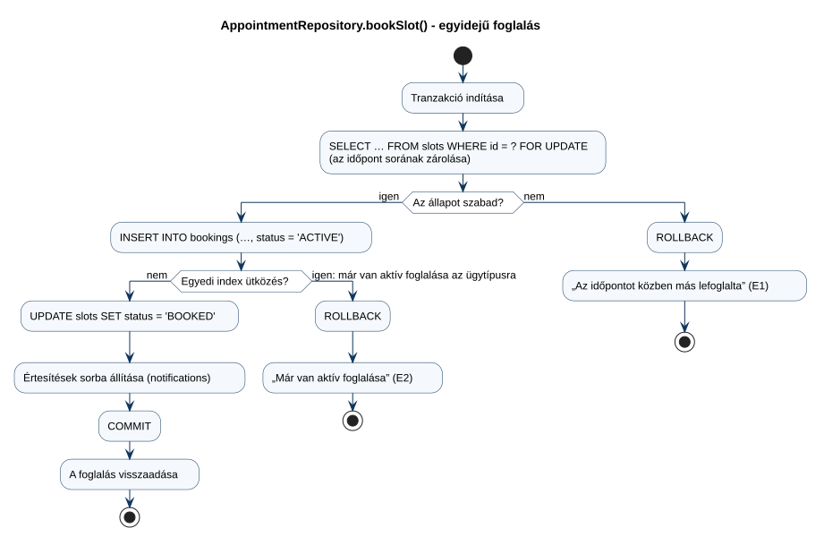
13. ábra. Egyidejű foglalás kezelése – aktivitásdiagram. Megnyitás teljes méretben
A lemondás hasonlóan, egy tranzakcióban fut: a foglalás állapota Lemondva lesz, az időpont állapota Szabad. Mivel az active_slot generált oszlop lemondáskor NULL lesz, az időpont azonnal újra foglalható (K-32).
4.2 Egyidejű tartalomszerkesztés
Ha két adminisztrátor ugyanazt az elemet szerkeszti, a második mentés a változatszám-ellenőrzés miatt nem írja felül az elsőt (3.4, ContentRepository.save). A szerver ilyenkor 409 Conflict választ ad, a felület pedig figyelmeztet, és felajánlja a frissebb változat betöltését; a felhasználó a saját módosításait a vágólapra másolhatja, mielőtt betölti (UC-15 E2).
4.3 Értesítések küldése
Az e-mailek küldése nem a felhasználói kérés része: a kérés csak sorba állítja az értesítést, a küldést egy percenként futó háttérfeladat végzi. Így az e-mail-szolgáltatás kiesése nem lassítja és nem rontja el a foglalást vagy a bejelentést (SRS 5.6, UC-11 E3).

14. ábra. Értesítések küldése újrapróbálással – aktivitásdiagram. Megnyitás teljes méretben
Az emlékeztető (K-31) ugyanezen a soron keresztül megy ki: foglaláskor scheduled_at értéke az időpont előtti nap 18:00 lesz. Lemondáskor vagy törléskor a még el nem küldött emlékeztető törlődik.
4.4 Jogosultság-ellenőrzés és hibakezelés
Egy védett kérés feldolgozása rétegenként, a bejelentés állapotának módosításán bemutatva. A hitelesítést és a jogosultság-ellenőrzést közös köztes réteg (middleware) végzi, így ezt nem kell minden végpontnál külön megírni. Hiba esetén egységes JSON-hibaválasz megy vissza.

15. ábra. Egy API-kérés útja a rendszeren belül – szekvenciadiagram. Megnyitás teljes méretben
| Helyzet | HTTP-válasz | A felület viselkedése |
|---|---|---|
| Hiányzó vagy lejárt munkamenet | 401 Unauthorized | Bejelentkezést kínál, utána visszatér (UC-01 A1, UC-02 A1). |
| Nincs jogosultság (például más bejelentése) | 403 Forbidden | „Ehhez nincs hozzáférése.” (K-38, UC-17 E2) |
| Nem létező elem | 404 Not Found | „A keresett elem nem található.” |
| Érvénytelen adat | 400 Bad Request, mezőnkénti hibalista | A hibás mezők kiemelése (2.4). |
| Ütközés (időpont foglalt, közben más mentett) | 409 Conflict | Az esetnek megfelelő üzenet és frissítés (UC-11 E1, UC-15 E2). |
| Szerverhiba | 500 Internal Server Error | „Hiba történt, próbálja újra.” és „Újra” gomb; a részletek csak a hibanaplóba kerülnek. |
Minden hibaválasz azonos szerkezetű JSON: {"error": {"code": "SLOT_TAKEN", "message": "…", "fields": {…}}}. A hibakódokat a felület fordítja magyar üzenetre, így a szöveg egy helyen módosítható.
4.5 Külső szolgáltatások kiesése
| Kiesik | A rendszer viselkedése |
|---|---|
| Egyetemi azonosító szolgáltatás | A bejelentkezés „jelenleg nem elérhető” üzenettel elutasul; a meglévő munkamenetek és a nyilvános funkciók működnek (UC-01 E1). |
| MVK-adatforrás | Az utolsó sikeres betöltés marad érvényben, egy nap után „nem friss” jelzéssel (UC-08 E1). |
| Parkolóérzékelők | A zóna 10 perc után „nem friss” állapotba kerül (K-13). |
| E-mail-szolgáltatás | Az értesítések a sorban várnak, és újrapróbálással mennek ki (4.3). |
| OpenStreetMap-csempeszerver | A térkép helyett a helyek kereshető listája jelenik meg (UC-03 E2). |
Minden külső hívásnak időkorlátja van (5 másodperc), így egy lassú szolgáltatás nem tartja fel a kéréseket (SRS 5.6).
5. Architektúra és telepítés
5.1 Komponensek
Az alkalmazásszerver belső felépítése. Minden funkcionális alrendszer mindhárom rétegben megjelenik: a router fogadja a kérést, a szolgáltatás (service) végzi az üzleti logikát az analízis modell osztályaival, a repository pedig az adatbázissal tart kapcsolatot. A háttérfeladatok (menetrend-betöltés, értesítések, takarítás) ugyanezeket a szolgáltatásokat használják.

16. ábra. A rendszer komponensei – komponensdiagram. Megnyitás teljes méretben
A háttérfeladatok: a menetrend betöltése naponta 3:30-kor; az értesítések küldése percenként; a lezajlott foglalások Lezajlott állapotba tétele óránként; a lejárt munkamenetek és a 30 napnál régebbi parkolómérések törlése éjszaka.
5.2 Telepítés
A rendszer futtatási környezete (SRS 8.6): egy bérelt Linux virtuális szerveren fut az Nginx webszerver, a pm2 által felügyelt Node.js-alkalmazás és a MySQL-adatbázis. Kívülről csak a 443-as (HTTPS) port érhető el; a MySQL csak a helyi gépről fogad kapcsolatot.

17. ábra. Telepítési diagram. Megnyitás teljes méretben
5.3 További kész komponensek (javaslat)
A tervezés során kiderült, hogy az SRS 10. fejezetében felsorolt komponenseken kívül az alábbiakra is szükség lehet. Az SRS 8.4 szerint új komponens csak a csapat közös döntése és a licenc ellenőrzése után vehető fel, ezért ezek javaslatok; ha a csapat valamelyiket elveti, a feladatot saját kód látja el.
| Komponens | Feladat | Licenc |
|---|---|---|
| multer | A képfeltöltés (multipart/form-data) fogadása a hibabejelentésnél. | MIT |
| sharp | A feltöltött képek kicsinyítése legfeljebb 1600 px szélesre (SRS 6.3). | Apache-2.0 |
| nodemailer | E-mail küldése SMTP-n keresztül. | MIT-0 |
| node-cron | A háttérfeladatok időzítése. | ISC |
| adm-zip és csv-parse | A GTFS-állomány (ZIP-be csomagolt CSV-fájlok) beolvasása. | MIT |
6. A REST API végpontjai
Az SRS 11.3 végpontcsoportjainak pontos felosztása. Minden végpont JSON-t fogad és ad vissza (kivéve a képfeltöltést), az időpontok ISO 8601 formátumúak. A „bejelentkezett” jogosultság érvényes munkamenetet jelent; a módosító kéréseket a szerver a munkamenethez kötött CSRF-tokennel is ellenőrzi. A teljes leírás OpenAPI formátumban a forráskód mellé kerül (SRS 9.4).
Hitelesítés
| Módszer | Útvonal | Jogosultság | Leírás | Kapcsolódik |
|---|---|---|---|---|
GET | /api/auth/login | mindenki | Átirányítás az egyetemi bejelentkezési oldalra (OpenID Connect). | UC-01 |
GET | /api/auth/callback | mindenki | A bejelentkezés eredményének fogadása, felhasználó betöltése vagy létrehozása, munkamenet indítása. | UC-01 |
POST | /api/auth/logout | bejelentkezett | Kijelentkezés, a munkamenet megszüntetése. | UC-02 |
GET | /api/auth/me | bejelentkezett | A saját név, e-mail-cím és szerepkörök (a felület menüjéhez). | UC-01 |
Térkép és parkolás
| Módszer | Útvonal | Jogosultság | Leírás | Kapcsolódik |
|---|---|---|---|---|
GET | /api/places?q=&category=&limit= | mindenki | Helykeresés, legfeljebb 8 javaslat. | UC-03 |
GET | /api/places/{id} | mindenki | Egy hely adatlapja (épületnél a termekkel). | UC-03 |
GET | /api/parking/zones | mindenki | Zónák szabad helyekkel, színjelöléssel, frissességgel. | UC-04 |
POST | /api/parking/readings | érzékelőeszköz (kulcs) | Mérés beküldése; az eszköz az X-Device-Key fejlécben küldi a kulcsát. | UC-04 |
Események, hírek, menza, menetrend
| Módszer | Útvonal | Jogosultság | Leírás | Kapcsolódik |
|---|---|---|---|---|
GET | /api/events?from=&to=&type=&faculty=&place=&past= | mindenki | Közzétett események szűréssel. | UC-05 |
GET | /api/events/{id} | mindenki | Egy esemény részletei. | UC-05 |
GET | /api/news?topic=&offset= | mindenki | Hírek a legfrissebbel kezdve, oldalanként 10. | UC-06 |
GET | /api/canteen/today | mindenki | A mai étlap, a nyitvatartás és a következő nyitás. | UC-07 |
GET | /api/canteen/week?start= | mindenki | A hét étlapjai. | UC-07 |
GET | /api/transit/stops | mindenki | Megállók és irányok. | UC-08 |
GET | /api/transit/stops/{id}/departures?headsign= | mindenki | Járatonként a következő három indulás. | UC-08 |
Oktatók
| Módszer | Útvonal | Jogosultság | Leírás | Kapcsolódik |
|---|---|---|---|---|
GET | /api/staff?q=&faculty=&department= | mindenki | Oktatók keresése. | UC-09 |
GET | /api/staff/{id} | mindenki | Oktatói adatlap. | UC-09 |
GET | /api/staff/me | oktató | A saját adatlap szerkesztésre. | UC-10 |
PUT | /api/staff/me | oktató | Iroda, fogadóórák és megjegyzés mentése. | UC-10 |
Ügyintézés
| Módszer | Útvonal | Jogosultság | Leírás | Kapcsolódik |
|---|---|---|---|---|
GET | /api/appointments/case-types | hallgató, oktató | Aktív ügytípusok. | UC-11 |
GET | /api/appointments/case-types/{id}/slots?from=&to= | hallgató, oktató | Szabad időpontok. | UC-11 |
POST | /api/appointments/bookings | hallgató, oktató | Foglalás létrehozása ({"slotId": …}). | UC-11 |
GET | /api/appointments/bookings/mine | hallgató, oktató | Saját aktív és korábbi foglalások. | UC-12 |
POST | /api/appointments/bookings/{id}/cancel | hallgató, oktató | Foglalás lemondása. | UC-12 |
Hibabejelentés
| Módszer | Útvonal | Jogosultság | Leírás | Kapcsolódik |
|---|---|---|---|---|
POST | /api/reports | hallgató, oktató | Bejelentés beküldése (multipart/form-data, opcionális képpel). | UC-13 |
GET | /api/reports/mine?status= | hallgató, oktató | Saját bejelentések. | UC-14 |
GET | /api/reports/{id} | bejelentő vagy felelős | Bejelentés részletei előzményekkel. | UC-14, UC-17 |
GET | /api/reports/manage?status=&category=&building= | oktató, adminisztrátor | Kezelhető bejelentések listája. | UC-17 |
PATCH | /api/reports/{id}/status | oktató, adminisztrátor | Állapotmódosítás megjegyzéssel. | UC-17 |
POST | /api/reports/{id}/comments | oktató, adminisztrátor | Megjegyzés állapotváltozás nélkül. | UC-17 A2 |
PATCH | /api/reports/{id}/unit | adminisztrátor | Átirányítás másik felelős egységhez. | UC-23 |
Adminisztráció
| Módszer | Útvonal | Jogosultság | Leírás | Kapcsolódik |
|---|---|---|---|---|
GET, POST | /api/admin/content/{type} | adminisztrátor | Tartalmak listája és létrehozása (type: news, events, places, menus). | UC-15 |
PUT | /api/admin/content/{type}/{id} | adminisztrátor | Mentés; a kérés tartalmazza a változatszámot. | UC-15 |
POST | /api/admin/content/{type}/{id}/publish | archive | adminisztrátor | Közzététel, archiválás. | UC-15 |
PUT | /api/admin/menus/week/{start} | adminisztrátor | A heti étlap mentése egy kérésben. | UC-15 A3 |
GET, POST | /api/admin/case-types | adminisztrátor | Ügytípusok. | UC-16 |
POST | /api/admin/slot-ranges?preview=true|false | adminisztrátor | Időpontsáv előnézete vagy mentése. | UC-16 |
POST | /api/admin/slots/{id}/lock | unlock | adminisztrátor | Időpont zárolása, feloldása. | UC-16 A2 |
DELETE | /api/admin/slots/{id} | adminisztrátor | Időpont törlése (foglaltnál kötelező indoklással). | UC-16 E2 |
GET | /api/admin/slots/day/{date} | adminisztrátor | Egy nap foglalásai nyomtatható listához. | UC-16 A3 |
GET | /api/admin/users?q= | adminisztrátor | Felhasználók keresése. | UC-18 |
PUT | /api/admin/users/{id}/roles | adminisztrátor | Szerepkörök mentése. | UC-18 |
POST | /api/admin/users/{id}/disable | adminisztrátor | Fiók letiltása. | UC-18 A2 |
GET | /api/admin/audit-log?actor=&type=&from=&to= | adminisztrátor | A módosítások naplója. | K-46 |
POST | /api/admin/timetable/import | adminisztrátor | A menetrend kézi újratöltése vagy feltöltése. | SRS 7.3, F-02 |
Üzemeltetés
| Módszer | Útvonal | Jogosultság | Leírás | Kapcsolódik |
|---|---|---|---|---|
GET | /api/health | belső (csak a szerverről) | Állapotellenőrzés: adatbázis és külső szolgáltatások. | SRS 7.3 |
7. A forráskód szerkezete
A forráskód a GitHubon, egy Git-tárolóban lesz (SRS 7.5). A mappaszerkezet a 3.4 és az 5.1 pont rétegeit követi; a fájlnevek kisbetűsek, kötőjellel tagoltak (SRS 7.2).
vezerlopult/ ├── server/ │ ├── app.js Express-alkalmazás, köztes rétegek, routerek bekötése │ ├── config.js beállítások környezeti változókból (dotenv) │ ├── routes/ auth.js, places.js, parking.js, events.js, news.js, canteen.js, │ │ transit.js, staff.js, appointments.js, reports.js, admin.js │ ├── middleware/ session.js, require-role.js, error-handler.js, access-log.js │ ├── services/ auth-service.js, content-service.js, parking-service.js, │ │ transit-service.js, staff-service.js, appointment-service.js, │ │ report-service.js, notification-service.js, audit-service.js │ ├── domain/ az analízis modell osztályai (user.js, slot.js, booking.js, │ │ fault-report.js, parking-zone.js, …) │ ├── repositories/ database.js, repository.js, user-repository.js, … │ ├── jobs/ scheduler.js, timetable-import.js, notification-sender.js, │ │ booking-completer.js, cleanup.js │ └── integrations/ entra-client.js, gtfs-reader.js, mailer.js, image-resizer.js ├── public/ a felület: index.html, css/, js/ (oldalanként egy modul) ├── db/ │ ├── migrations/ 001-init.sql, 002-seed-reference-data.sql, … │ └── migrate.js a még le nem futott migrációk alkalmazása ├── test/ egység- és API-tesztek ├── .env.example a szükséges környezeti változók listája (érték nélkül) ├── openapi.yaml a REST API leírása (SRS 9.4) └── README.md telepítés és helyi futtatás
A domain mappa osztályai az analízis modell osztályai az ott megadott attribútumokkal és operációkkal. Ezek nem tartalmaznak SQL-t és HTTP-kezelést, ezért önállóan tesztelhetők; az üzleti szabályok (például a Booking.canCancel vagy a FaultReport.changeStatus) itt vannak.
8. Mellékletek
8.1 Ábrajegyzék
- 1. ábra – A felhasználói felület navigációs térképe
- 2. ábra – Képernyőterv: Kezdőlap (asztali nézet)
- 3. ábra – Képernyőterv: Új foglalás (UC-11)
- 4. ábra – Képernyőterv: Új hibabejelentés (UC-13)
- 5. ábra – Képernyőterv: Bejelentések kezelése (UC-17)
- 6. ábra – Szemantikai adatmodell (ER) – felhasználók, szervezet és ügyintézés
- 7. ábra – Szemantikai adatmodell (ER) – tartalom és külső adatok
- 8. ábra – Szemantikai adatmodell (ER) – hibabejelentés
- 9. ábra – Relációs adatmodell – felhasználók, szervezet és ügyintézés
- 10. ábra – Relációs adatmodell – tartalom és külső adatok
- 11. ábra – Relációs adatmodell – hibabejelentés
- 12. ábra – Az adatbázissal kapcsolatot tartó osztályok
- 13. ábra – Egyidejű foglalás kezelése – aktivitásdiagram
- 14. ábra – Értesítések küldése újrapróbálással – aktivitásdiagram
- 15. ábra – Egy API-kérés útja a rendszeren belül – szekvenciadiagram
- 16. ábra – A rendszer komponensei – komponensdiagram
- 17. ábra – Telepítési diagram
Címlap
Csoport neve: ME-nthetetlenek
Feladat sorszáma: 19
Feladat címe: Az uni-app jelenlegi funkcióinak gyakorlatiasabb átdolgozása
Szótár
Gyakorlatvezető:
Tompa Tamás
Csoporttagok:
| Név | Tankör | E-mail-cím |
|---|---|---|
| Csoportvezető: Dávid Gergő | G2-BP1 | gergo.david@student.uni-miskolc.hu |
| Győri Kristóf | G2-BP1 | kristof.gyori@student.uni-miskolc.hu |
| Maklári Máté | GE-BGI | mate.mate.165@gmail.com |
| Balázs Csenge Málna | GE-BGI | csenge.balazs.malna@student.uni-miskolc.hu |
| Nagy Virág | GE-BGI | virag.nagy@student.uni-miskolc.hu |
Beadás dátuma: 2026. 11. 16.
Történet
| Dátum | Verzió | Leírás | Szerző |
|---|---|---|---|
| 2026. 11. 03. | 1.0 | A H3 határidőre leadott változat (az SRS-sel egy oldalon), 71 fogalom. | ME-nthetetlenek |
| 2026. 11. 16. | 1.1 | Az SRS 0.4-es változatával: az «include» kapcsolat, az «extend» kapcsolat és a kiterjesztési pont fogalma, összesen 74 fogalom. | ME-nthetetlenek |
| 2026. 11. 16. | 2.0 | Önálló dokumentum. 51 új fogalom az analízis modellből és a rendszertervből (osztálymodell, adatmodell, architektúra); 3 magyarázat pontosítva. Összesen 125 fogalom. | ME-nthetetlenek |
Ez a szótár a H3 határidőre leadott szótár bővített változata. Az analízis és a rendszertervezés során felmerült fogalmakkal egészítettük ki; a fejlesztés során tovább bővül. A magyarázatokban csak a szótárban szereplő vagy köznapi kifejezéseket használunk. A fogalmak a magyar ábécé szerinti sorrendben szerepelnek; a tantárgyi előírás szerint a szótárnak nincs tartalomjegyzéke.
Verzió: 2.0 · Utolsó módosítás: 2026. 11. 16. · Fogalmak száma: 125 · új = a 2.0-s változatban felvett fogalom, módosult = pontosított magyarázat
| Fogalom | Magyarázat |
|---|---|
| Absztrakt osztály új | Olyan osztály, amelyből közvetlenül nem készül objektum; csak a leszármazottai közös részét írja le (például a Tartalom). |
| Adatforrás | Olyan külső rendszer vagy állomány, ahonnan a Vezérlőpult adatot vesz át (például a menetrend vagy a parkolóérzékelők adatai). |
| Adminisztrátor | Az egyetem által kijelölt munkatárs, aki a rendszer tartalmát, az ügyintézési időpontokat, a hibabejelentéseket és a szerepköröket kezeli. |
| Ajánlott (prioritás) | Olyan követelmény, amely jelentősen javítja a használatot; ha az idő engedi, elkészül. |
| Aktivitásdiagram új | UML-ábra, amely egy folyamat lépéseit és döntési pontjait mutatja. |
| Aktor | A rendszeren kívüli szereplő – személy vagy másik rendszer –, amely kapcsolatba lép a rendszerrel. A use case diagramon pálcikaember jelöli. |
| Állapotdiagram új | UML-ábra, amely egy osztály objektumainak lehetséges állapotait és az állapotok közötti átmeneteket mutatja. |
| Alrendszer új | A rendszer funkcionálisan összetartozó osztályainak csoportja, például az Ügyintézés alrendszer. |
| Általánosítás módosult | Két aktor vagy két osztály közötti kapcsolat, amely azt fejezi ki, hogy az egyik a másik minden tulajdonságát és funkcióját eléri (örökli), és ezeken felül továbbiakat is. A diagramon üres hegyű nyíl jelöli. |
| Alternatív eset | A use case olyan lefutása, amely eltér a szokásos működéstől, de előre látható és kezelni kell (például a felhasználó keresés helyett a térképen kattint). |
| Analízis modell új | A tervezett szoftver objektumorientált modellje (osztályok, kapcsolatok, működés), amely a követelményekből készül, a megvalósítás részletei nélkül (H4). |
| Archiválás | A tartalom eltávolítása a nyilvános felületről törlés nélkül; az adminisztrátor később is megtalálja. |
| Asszociáció új | Két osztály közötti tartós kapcsolat, például a foglalás és a hallgató között. |
| Áteresztőképesség | Az egy másodperc alatt kiszolgált kérések száma. |
| Attribútum új | Az osztály egy tulajdonsága, például a foglalás állapota. |
| Backend | A rendszernek a szerveren futó része, amely az adatokat kezeli, és kiszolgálja a felületet. |
| Bázisosztály új | Olyan osztály, amelynek attribútumait és operációit más osztályok öröklik. |
| Bejelentés (hibabejelentés) | Egy felhasználó által rögzített jelzés egy egyetemi hibáról vagy problémáról, kategóriával, helyszínnel és leírással. |
| Bővítés | Olyan funkció, amely a félévi célok után, külső partnerséggel vagy több idővel készülhet el. |
| Csatolmány új | A hibabejelentéshez feltöltött kép. |
| Csomagdiagram új | UML-ábra, amely a rendszer részeit (csomagjait, alrendszereit) és a köztük lévő függőségeket mutatja. |
| Csomag (use case csomag) | Összetartozó use case-ek csoportja. Az SRS 3. fejezete csomagonként tárgyalja őket. |
| Drótváz új | Egy képernyő egyszerűsített terve, amely az elemek elrendezését és feliratait mutatja, színek és képek nélkül. |
| Egyed új | Az adatmodellben egy önállóan azonosítható dolog típusa, amelyről adatot tárolunk (például a hibabejelentés). |
| Egyetemi azonosító szolgáltatás | Az egyetemi Microsoft-fiókokat kezelő szolgáltatás, amely a bejelentkezést ellenőrzi (lásd: Microsoft Entra ID). |
| Elsődleges kulcs új | Az adatbázistábla azon oszlopa (vagy oszlopai), amely minden sort egyértelműen azonosít. |
| ER-diagram új | Az egyedeket, a tulajdonságaikat és a köztük lévő kapcsolatokat ábrázoló adatmodell-ábra. |
| Érintett | Olyan személy vagy szervezet, akit a termék érint, de nem feltétlenül használja. |
| Értesítés új | A rendszer által a felhasználónak küldött e-mail (visszaigazolás, emlékeztető, állapotváltozás). |
| Esemény | Egyetemi program időponttal, helyszínnel és leírással (például előadás, nyílt nap, sportesemény). |
| Extend kapcsolat («extend») | Két use case közötti kapcsolat: a kiterjesztő use case csak egy feltétel teljesülésekor, az alap use case egy kiterjesztési pontján épül be annak működésébe (például a kép csatolása a hibabejelentésbe). A diagramon szaggatott nyíl jelöli, amely a kiterjesztő use case-től az alap use case felé mutat. |
| Felelős egység új | Az a szervezeti egység (például a Gondnokság vagy egy tanszék), amely egy hibabejelentés megoldásáért felel. |
| Felhasználó | Aki a terméket ténylegesen használja. |
| Felhasználói kézikönyv | A rendszer használatát lépésenként bemutató dokumentum a felhasználók számára. |
| Fogadóóra | Az oktató által meghirdetett idősáv, amikor a hallgatók személyesen felkereshetik. |
| Foglalás | Egy hallgató által lefoglalt ügyintézési időpont. |
| Frontend | A rendszernek a böngészőben megjelenő része, amelyet a felhasználó lát és használ. |
| Függőség új | Két modellelem közötti kapcsolat, amelyben az egyik használja a másikat; az ábrákon szaggatott nyíl jelöli. |
| GDPR | Az Európai Unió általános adatvédelmi rendelete. |
| GTFS | A tömegközlekedési menetrendek közzétételére használt, nemzetközileg elterjedt adatformátum. |
| Gyenge egyed új | Olyan egyed, amely csak egy másik egyeddel együtt azonosítható (például a fogadóóra az oktatói adatlappal). |
| Hallgató | Az egyetem bejelentkezett hallgatója; a Látogató funkcióin túl időpontot foglalhat és hibát jelenthet be. |
| Hozzárendelési szabály új | Szabály, amely egy kategória egy épületben bejelentett hibáit egy adott felelős egységhez irányítja. |
| Idegen kulcs új | Olyan oszlop, amely egy másik tábla sorára hivatkozik annak elsődleges kulcsával. |
| Időpontsáv | Az adminisztrátor által megadott időszak (például hétfő 9–12 óra), amelyből a rendszer foglalható időpontokat készít. |
| Időpont (ügyintézési) új | Egy foglalható idősáv, amely az időpontsávból készül, például hétfő 9:15–9:30. |
| Include kapcsolat («include») | Két use case közötti kapcsolat: az alap use case működésének mindig része a befoglalt use case (például a bejelentkezést igénylő funkcióknak a bejelentkezés). Közös részek kiemelésére szolgál. A diagramon szaggatott nyíl jelöli, amely az alap use case-től a befoglalt felé mutat. |
| Index új | Az adatbázis segédszerkezete, amely gyorsítja a keresést egy vagy több oszlop szerint. |
| Indulás új | Egy járat menetrend szerinti indulása egy megállóból egy irányba. |
| Infotv. | Az információs önrendelkezési jogról és az információszabadságról szóló 2011. évi CXII. törvény. |
| Járat új | Az MVK egy autóbusz- vagy villamosvonala. |
| JSON | Szöveges adatformátum, amellyel a felület és a szerver adatot cserél. |
| Kar | Az egyetem nagyobb szervezeti egysége, amely tanszékekből áll. |
| Kiterjesztési pont | Az alap use case működésének az a pontja, ahol egy «extend» kapcsolattal kapcsolódó use case beépülhet. A diagramon az ellipszisben, vonal alatt szerepel. |
| Kivételes eset | A use case váratlan, hibás lefutása (például egy külső szolgáltatás nem érhető el). |
| Komponensdiagram új | UML-ábra, amely a rendszer programrészeit és a köztük lévő kapcsolatokat mutatja. |
| Kompozíció új | Olyan rész–egész kapcsolat, amelyben a rész nem létezik az egész nélkül (például az étel az étlap része). A diagramon teli rombusz jelöli. |
| Kötelező (prioritás) | Olyan követelmény, amelynek a félév végi bemutatóra el kell készülnie. |
| Köztes réteg (middleware) új | A szerveren a kérés és a végpont között lefutó közös programrész, például a jogosultság-ellenőrzés. |
| Közzététel új | A tartalom nyilvánossá tétele; ettől kezdve a látogatók is látják. |
| Látogató | Bárki, aki bejelentkezés nélkül használja a rendszert; csak a nyilvános funkciókat éri el. |
| Leaflet | Nyílt forráskódú programkönyvtár interaktív térképek megjelenítéséhez a böngészőben. |
| Megálló új | Az MVK egy megállója; a menetrend megállónként mutatja az indulásokat. |
| Megbízhatóság | A rendszer azon tulajdonsága, hogy mennyire működik folyamatosan és hibamentesen. |
| Menetrend-betöltés új | A menetrend naponta egyszeri frissítése az adatforrásból. |
| Menza | Az egyetemi étkezde. |
| Mérföldkő | A félév meghatározott hete, amikor a csapat egy részfeladatot bemutat. |
| Microsoft Entra ID | A Microsoft azonosítási szolgáltatása, amely az egyetemi Microsoft-fiókokkal való bejelentkezést kezeli. |
| MTBF | Két hiba között eltelt átlagos idő. |
| MTTR | A hiba bekövetkezésétől a javításig eltelt átlagos idő. |
| Munkamenet | A bejelentkezéstől a kijelentkezésig vagy a lejáratig tartó időszak, amely alatt a rendszer felismeri a felhasználót. |
| Munkanapló | A csapattagok projektre fordított munkáját dátum, tevékenység és időtartam szerint rögzítő nyilvántartás. |
| MVK | Miskolc helyi tömegközlekedési szolgáltatója, amely autóbusz- és villamosjáratokat üzemeltet. |
| MySQL | Elterjedt adatbázis-kezelő rendszer, amelyben a Vezérlőpult adatai tárolódnak. |
| Naplóbejegyzés új | Egy adminisztrátori vagy oktatói módosítás rögzített nyoma: ki, mit, mikor változtatott. |
| Navigációs térkép új | Ábra, amely a felület képernyőit és a köztük lévő átmeneteket mutatja. |
| Neptun | Az egyetem tanulmányi nyilvántartó rendszere. |
| Node.js | Szerveroldali futtatókörnyezet, amelyen a Vezérlőpult backendje JavaScript nyelven fut. |
| Normalizálás új | Az adatbázistáblák olyan kialakítása, amely megszünteti a felesleges ismétlődést és az ebből adódó ellentmondásokat. |
| Nyilvános funkció | Bejelentkezés nélkül is elérhető funkció. |
| Objektum új | Egy osztály egy konkrét példánya, például egy adott foglalás. |
| Oktató | Bejelentkezett felhasználó oktató szerepkörrel, aki egy tanszékhez tartozik; szerkesztheti a saját adatlapját, és kezelheti a tanszékéhez rendelt bejelentéseket. |
| Opcionális (prioritás) | Olyan követelmény, amely csak külső feltétel teljesülése vagy elegendő idő esetén készül el. |
| OpenID Connect | Szabványos bejelentkezési eljárás, amellyel egy alkalmazás egy külső azonosító szolgáltatásra bízza a felhasználó azonosítását. |
| OpenStreetMap | Szabadon felhasználható, közösségi térképadatbázis. |
| Operáció új | Az osztály által végezhető művelet, például a foglalás lemondása. |
| Osztály új | Azonos tulajdonságú és viselkedésű objektumok közös leírása, például a Foglalás. |
| Osztálydiagram új | UML-ábra, amely az osztályokat, attribútumaikat, operációikat és kapcsolataikat mutatja. |
| Parkolóérzékelő | Eszköz, amely jelzi, hogy egy parkolóhely foglalt-e. |
| Parkolómérés új | Az érzékelőeszköz által küldött adat egy zóna foglalt helyeinek számáról. |
| Parkolózóna | A parkoló egy elkülönített része, amelynek szabad helyeit a rendszer együtt jeleníti meg. |
| Piszkozat új | Mentett, de még nem közzétett tartalom; csak az adminisztrátorok látják. |
| PlantUML új | Szöveges leírásból UML-ábrákat készítő eszköz; a projekt ábrái ezzel készültek. |
| Posztkondíció | Az az állapot, amely a use case befejeződése után fennáll. |
| Prekondíció | Azok a feltételek, amelyeknek a use case megkezdése előtt teljesülniük kell. |
| Relációs adatmodell új | Az adatok táblákba szervezett leírása oszlopokkal, kulcsokkal és hivatkozásokkal. |
| Rendelkezésre állás | Az idő százalékos aránya, amikor a rendszer használható. |
| Rendszerterv új | A rendszer megvalósításához szükséges tervezési döntéseket (felület, adatmodell, architektúra) leíró dokumentum (H4). |
| Repository (adattár-osztály) új | Olyan osztály, amely egy adott fajta adat adatbázisba írását és onnan olvasását végzi; a program többi része csak rajta keresztül éri el az adatbázist. |
| REST API | A szerver által kínált, webcímeken elérhető programozói felület, amelyen keresztül a frontend adatot kér és küld. |
| Reszponzív | Olyan felület, amely a képernyő méretéhez igazodik, így telefonon és számítógépen is jól használható. |
| SRS | Szoftverkövetelmény-specifikáció: a rendszer funkcionális és nem funkcionális követelményeit leíró dokumentum (H3). |
| Statikus oldal | Olyan weboldal, amelynek tartalma nem függ a látogatótól, és adatbázis nélkül működik. |
| Számosság új | Megadja, hogy egy kapcsolatban az egyik oldal egy objektumához a másik oldalról hány objektum tartozhat (például 1, 0..1, 0..*). |
| Szekvenciadiagram új | UML-ábra, amely egy folyamatban részt vevő objektumok közötti üzeneteket időrendben mutatja. |
| Szemantikai adatmodell új | Az adatok jelentését leíró, az adatbázis-kezelőtől független modell; a projektben ER-diagram szemlélteti. |
| Szerepkör | A felhasználó jogosultsági köre: hallgató, oktató vagy adminisztrátor. |
| Szokásos működés | A use case leggyakoribb, hibamentes lefutása. |
| Szótár módosult | A projekt fogalmait magyarázó, folyamatosan bővülő dokumentum (ez a dokumentum). |
| Tanszék | A kar oktatási és kutatási egysége, amelyhez az oktatók tartoznak. |
| Tartalom új | Az adminisztrátor által kezelt, közzétehető elem: hír, esemény, térképi hely vagy napi étlap. |
| Telepítési diagram új | UML-ábra, amely megmutatja, milyen gépeken és szoftverkörnyezetben futnak a rendszer részei. |
| Terhelésteszt | Olyan vizsgálat, amely megmutatja, hogyan működik a rendszer sok egyidejű felhasználó mellett. |
| Tranzakció új | Adatbázis-műveletek olyan sorozata, amely vagy teljes egészében végrehajtódik, vagy egyáltalán nem. |
| UML módosult | Szabványos jelölésrendszer szoftverrendszerek modellezésére; a projekt use case-, osztály-, szekvencia-, állapot-, aktivitás-, csomag-, komponens- és telepítési diagramjai ezt használják. |
| Use case diagram | UML-ábra, amely az aktorokat, a use case-eket és a kapcsolataikat mutatja. |
| Use case (használati eset) | A rendszer egy olyan szolgáltatása, amely egy aktor számára értékelhető eredményt ad. |
| Ügytípus | Az ügyintézés fajtája (például igazolás kérése), amelyre időpont foglalható. |
| Válaszidő | A felhasználó művelete és a rendszer válaszának megjelenése között eltelt idő. |
| Változatszám új | A tartalom minden mentéskor növekvő sorszáma, amelyből kiderül, ha közben más is módosította. |
| Vezérlőpult | A projekt munkaneve: egységes webes felület a Miskolci Egyetem információihoz és szolgáltatásaihoz. |
| Vízió dokumentum | A projekt célját és környezetét leíró dokumentum, a RUP módszertan első lépése (H2). |
| VPS | Virtuális szerver, amelyet havi díjért lehet bérelni. |
| WCAG | A webes akadálymentességi irányelvek nemzetközi szabványa. |
| Zárolt időpont új | Az adminisztrátor által foglalásra letiltott, egyébként szabad időpont (például szabadság miatt). |
Címlap
Csoport neve: ME-nthetetlenek
Feladat sorszáma: 19
Feladat címe: Az uni-app jelenlegi funkcióinak gyakorlatiasabb átdolgozása
Munkanapló
Gyakorlatvezető:
Tompa Tamás
Csoporttagok:
| Név | Tankör | E-mail-cím |
|---|---|---|
| Csoportvezető: Dávid Gergő | G2-BP1 | gergo.david@student.uni-miskolc.hu |
| Győri Kristóf | G2-BP1 | kristof.gyori@student.uni-miskolc.hu |
| Maklári Máté | GE-BGI | mate.mate.165@gmail.com |
| Balázs Csenge Málna | GE-BGI | csenge.balazs.malna@student.uni-miskolc.hu |
| Nagy Virág | GE-BGI | virag.nagy@student.uni-miskolc.hu |
Beadás dátuma: 2026. 11. 20.
| Kezdet | Időtartam (óra) | Résztvevők | Tevékenység | Eredmény |
|---|---|---|---|---|
| 2026-11-04 | 1 | Dávid Gergő Győri Kristóf Maklári Máté Balázs Csenge Málna Nagy Virág | Megbeszélés: a H4 feladatainak felosztása a csapaton belül | Döntés: a H4 dokumentumainak elkészítésének felosztásáról és tartalmairól |
| 2026-11-05 | 5 | Balázs Csenge Málna | Az SRS use case-leírásainak elemzése; kezdeti osztálydiagram, az osztályok rövid leírása, a rendszer alrendszerekre bontása | Analízis modell 1.0 (1–2. fejezet, 1–2. ábra) |
| 2026-11-07 | 9 | Balázs Csenge Málna | Az alrendszerek modellje: kapcsolatok és attribútumok pontosítása, bázisosztályok; szekvencia-, állapot- és aktivitásdiagramok; operációk azonosítása | Analízis modell 1.1, 3–8. fejezet (3–28. ábra) |
| 2026-11-09 | 4 | Dávid Gergő | Az alrendszerek végleges osztálydiagramjai, az osztályok részletes leírása, áttekintő osztálydiagram | Analízis modell 1.1, 3.6–8.6 pont, 29. ábra |
| 2026-11-10 | 6 | Győri Kristóf | Rendszertervezés: felhasználói felület és képernyőtervek, adatbázis-kezelő kiválasztása, ER-diagram, relációs adatmodell, adatelérési osztályok | Rendszertervezés 1.0, 1–3. fejezet |
| 2026-11-12 | 3 | Győri Kristóf | Rendszertervezés: a kivételes folyamatok, az architektúra, a telepítés és a REST API leírása | Rendszertervezés 1.0, 4–8. fejezet |
| 2026-11-13 | 2 | Dávid Gergő | A szótár bővítése az analízis modell és a rendszerterv fogalmaival | Szótár 2.0 |
| 2026-11-15 | 3 | Dávid Gergő | Az SRS módosítása a gyakorlatvezetői visszajelzés alapján: «include» és «extend» kapcsolatok, UC-19 – UC-24, a use case diagramok újrarajzolása | SRS 0.4 |
| 2026-11-16 | 2 | Nagy Virág | A H4 dokumentumainak ellenőrzése a tantárgyi minták alapján, javítások (use case-alpontok, számozás, dátumok) | Javított Analízis modell 1.1 és Rendszertervezés 1.0 |
| 2026-11-16 | 1,5 | Nagy Virág | A H4 weboldal összeállítása (a három dokumentum egy oldalon, gyorsmenü) | h4.html |
| 2026-11-17 | 0,5 | Dávid Gergő | Egyeztetés a gyakorlatvezetővel (e-mail): az analízis modell 1.0 és a módosított use case modell | Jóváhagyás („kezdetnek jó”) |
| 2026-11-18 | 0,5 | Dávid Gergő | Egyeztetés a gyakorlatvezetővel (e-mail): az analízis modell 1.1 | Jóváhagyva |
| 2026-11-20 | 0,5 | Dávid Gergő | A H4 dokumentumainak leadása (analízis modell, rendszertervezés, szótár, módosított SRS, munkanapló) | – |